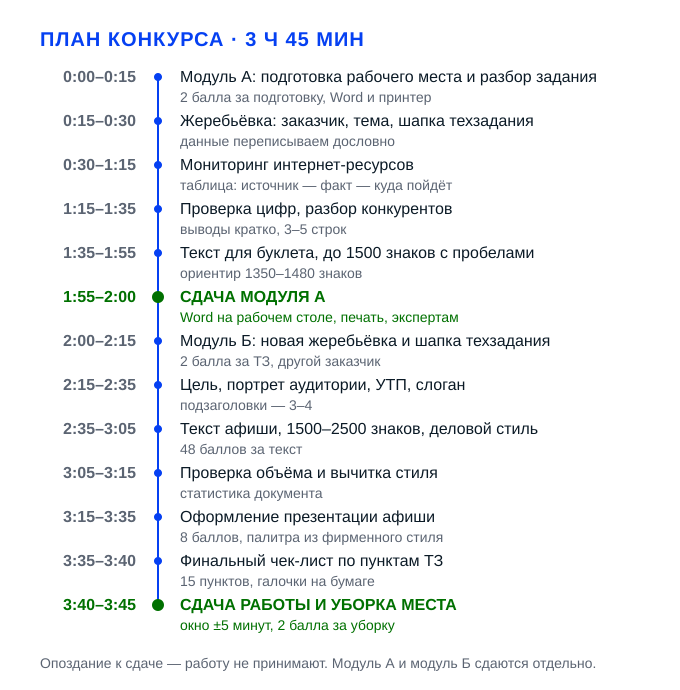
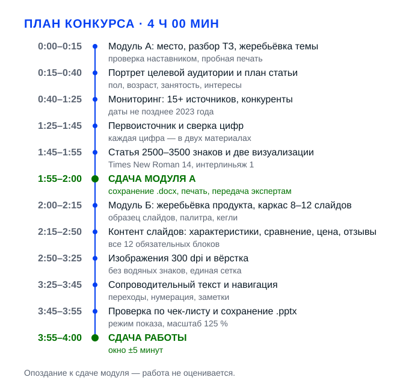
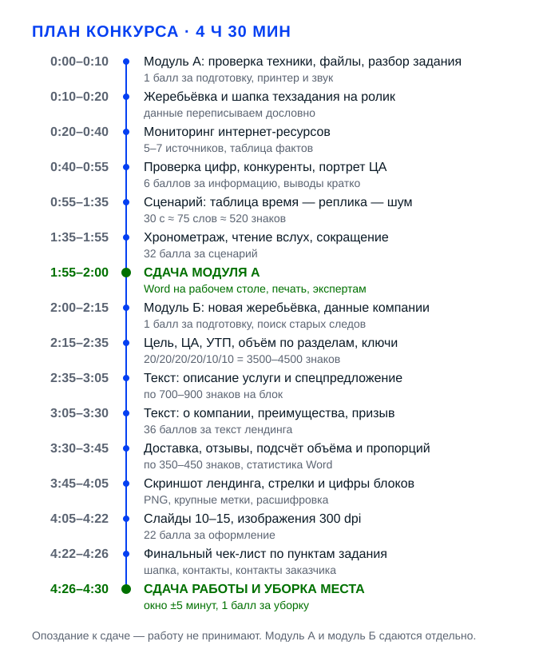

Копирайтинг (Р)
Задания ниже — официальные файлы «Абилимпикс» (источник: abilympics-russia.ru), разложенные по категориям. Решения написаны по тексту задания, регламенту и критериям оценки; в них указано, что именно проверяет эксперт.
Школьник
14–16 лет, базовый уровень заданияВыдержка из официального конкурсного задания: страницы, относящиеся к категории «Школьник» (стр. 6–7 источника).
Пошаговое решение
Копирайтинг для школьников — это не сочинение на вольную тему, а работа под заказчика с жёсткими техническими условиями. За 3 часа 45 минут вы проходите путь от мониторинга информации до двух готовых документов: продающего текста для буклета объёмом до 1500 печатных знаков с пробелами (модуль А, 2 часа, 40 баллов) и текста для презентации афиши мероприятия объёмом от 1500 до 2500 знаков (модуль Б, 1 час 45 минут, 60 баллов). Тему, заказчика и компанию вы получаете жеребьёвкой, поэтому заготовить текст заранее невозможно: оценивают умение быстро найти достоверные факты, отобрать из них сильные и уложить в заданный объём. Внутри модуля А баллы распределены так: 2 — за подготовку рабочего места, 36 — за создание продающего текста, 2 — за уборку. В модуле Б: 2 — за техническое задание на текст афиши, 48 — за сам текст, 8 — за оформление презентации, 2 — за уборку. Отсюда главный вывод: писать нужно не «красиво», а по пунктам технического задания, с конкретными цифрами и краткими выводами, потому что каждая невыполненная строка задания — это снятые баллы.

Задача 1. Организовать рабочее место и разобрать заданиеМодуль А · 2 балла за подготовку места, дальше вход в мониторинг
Первые пятнадцать минут решают, будет ли вам удобно работать остальные три с половиной часа. Нужно осмотреть место, проверить компьютер, Word, браузер, интернет и принтер, приготовить бумажный черновик с таблицей мониторинга и разложить перед собой конкурсное задание. Отдельно и очень внимательно читается жеребьёвка: тема, заказчик, адрес сайта, сфера деятельности — всё это пойдёт в шапку документа и в само задание. Здесь баллы небольшие, всего 2 за подготовку, но именно на этом этапе участники теряют время, которого потом не хватает на редактуру текста.
Действие 1.1. Подготовить рабочее место
Шаг 1.1.1
Заходим на площадку и первым делом сверяем номер рабочего места: табличка на столе, наклейка на мониторе и номер в названии папки на рабочем столе должны совпадать. Дальше осматриваем место целиком: стол свободен от чужих вещей, стул отрегулирован по высоте так, чтобы локти лежали на столе под прямым углом, монитор стоит на расстоянии вытянутой руки. Проверяем освещение и проходы: по требованиям к рабочим местам освещение должно быть не менее 300 люкс, а ширина прохода — 1,5 метра, поэтому кресло-коляску сразу ставим так, чтобы выезд оставался свободным.
За подготовку рабочего места в модуле А дают 2 балла, и это самые дешёвые баллы за весь конкурс: их получают все, кто просто пришёл и осмотрелся. Но у этого пункта есть и вторая, неоценочная функция: кресло не по высоте через час даёт боль в спине и падение темпа, а захламлённый стол — потерянные распечатки и черновики. Три с половиной часа непрерывной работы глазами и руками — это физическая нагрузка, и правильно собранное место её снижает.
Проверьте себя по трём признакам: номер на столе совпадает с номером в названии папки, стол пуст и на нём остались только задание, ручка, бумага и монитор, локти свободно лежат на столе без поднятых плеч. Если работаете с программой NVDA или брайлевской клавиатурой, убедитесь, что они подключены и определяются системой до старта.
Самая частая ошибка — сесть и сразу читать задание, отложив осмотр места. Через сорок минут выясняется, что разъём для флешки не работает или монитор смотрит в стену, и время модуля уходит на пересадку. Вторая ошибка — открыть чужую папку: весь собранный материал окажется в файле с чужим номером.
Эксперт проходит по площадке в первые минуты и отмечает, готово ли место к работе: чистота, наличие расходников, включённое оборудование. Ничего не спрашивает — просто фиксирует состояние.
Шаг 1.1.2
Включаем компьютер и проверяем всё, что понадобится: открывается ли Microsoft Word, запускается ли браузер, работает ли интернет (проверяем именно поиском, а не по значку Wi-Fi), виден ли принтер в списке устройств печати. Отдельно убеждаемся, что Word не в режиме только для чтения и что включена проверка орфографии: Файл — Параметры — Правописание, галочка «Проверять орфографию в процессе набора». Затем создаём на рабочем столе папку с номером места и внутри неё пустой документ, чтобы все версии текста лежали в одном месте.
По заданию документ сохраняется в формате MS Word на рабочем столе компьютера и распечатывается на принтере, значит и Word, и принтер — рабочие инструменты, а не фон. Если интернет отвалится в середине мониторинга, вы продолжите по сохранённым вкладкам, а не начнёте всё заново. Папка с номером места нужна ещё и потому, что файл с именем «Документ 1» на общем рабочем столе теряется первым.
Word открывает новый документ и сохраняет его без предупреждений, браузер показывает страницу поиска, принтер отображается как «Готов» без жёлтого восклицательного знака. Если принтер недоступен, это надо выяснить сейчас, а не за пять минут до сдачи, когда печатать уже нечем.
Типичная ошибка — не проверить печать заранее и в конце модуля обнаружить, что задание уходит на чужой принтер в другом кабинете или заканчивается бумага. Вторая — работать в блокноте или онлайн-редакторе «чтобы не тормозило»: формат не тот, что требует задание, и оформление поедет при переносе в документ.
Эксперт оценивает готовность оборудования как часть подготовки места. Отдельно фиксируется, вызван ли технический специалист до старта, если что-то не работает: обращение до начала модуля не считается потерей времени.
Шаг 1.1.3
Готовим бумажный черновик: берём три-четыре листа A4, ручку и расчерчиваем таблицу мониторинга из четырёх колонок — источник, адрес страницы, факт или цифра, куда пойдёт в тексте. Второй лист отводим под шапку технического задания: контакт заказчика, сфера деятельности, тематика, вид текста, объём, место размещения. Третий — под конкурентов. Всё лишнее со стола убираем: телефон в рюкзак, наушники в карман, вода с края стола туда, где её не заденет локоть.
Мониторинг даёт много разрозненных фактов, и держать их в голове до момента написания невозможно: к третьему часу вы помните, что «где-то было про 3500 станков», но не помните, где. Таблица на бумаге решает сразу две задачи — фиксирует факт вместе со ссылкой на источник и заранее показывает, каких блоков будущего текста не хватает. Плюс бумага не потеряется при случайном закрытии вкладки.
На листах есть таблица с четырьмя колонками и хотя бы три пустые строки под конкурентов. Шапка технического задания переписана полностью, ни один пункт из задания не пропущен. Ручка пишет, листы лежат так, чтобы их не пришлось искать под клавиатурой.
Ошибка — писать факты прямо в Word вперемешку с текстом: потом непонятно, где цитата с сайта, а где ваша формулировка, и при редактуре вы удаляете цифру вместе с абзацем. Вторая — не готовить черновик вообще, надеясь «запомнить»: на конкурсе памяти хватает на два-три факта из двадцати собранных.
Эксперт видит рабочие листы, когда проходит между столами. Наличие структурированного черновика читается как понимание процесса мониторинга, а не как случайный набор заметок.
Действие 1.2. Разобрать задание и жеребьёвку
Шаг 1.2.1
Читаем конкурсное задание целиком, не перескакивая: сначала таблицу структуры, потом последовательность выполнения по своей категории, потом критерии оценки. Карандашом подчёркиваем всё, что можно проверить: время модулей, объёмы в знаках, формат сохранения, обязательные элементы технического задания, требование распечатать и передать экспертам. Рядом на полях выписываем числа: 2 часа на модуль А, 1 час 45 минут на модуль Б, всего 3 часа 45 минут, до 1500 знаков для буклета, от 1500 до 2500 знаков для афиши.
Оценивают не текст «в целом», а выполнение конкретных строк задания: если в техническом задании не хватает, например, информации о конкурентах или ссылки на удачный текст, эти баллы снимаются независимо от качества самого текста. Разбор задания до начала работы — единственный способ увидеть все обязательные пункты сразу, а не обнаружить половину из них в момент сдачи.
Подчёркнутыми оказались как минимум: время каждого модуля, объём текста в знаках для буклета и для афиши, формат сохранения (MS Word на рабочем столе), требование печати для модуля А и передача работы экспертам. Проверьте, что вы можете назвать по памяти два числа — 1500 и 2500.
Ошибка — прочитать только первые страницы и решить, что «всё понятно». Тогда пропускается, например, требование указать стиль написания или сослаться на удачные тексты, и в конце вы дописываете их второпях, ломая структуру. Вторая ошибка — читать задание уже после того, как начали писать: переделывать всегда дороже.
Эксперт не спрашивает, читали ли вы задание, — это видно по документу: все ли блоки технического задания на месте и в том же порядке, что в КЗ. Он же отмечает подчёркнутые пункты на вашем листе, когда проходит мимо стола.
Шаг 1.2.2
Тянем жеребьёвку и фиксируем результат сразу же, на бумаге: номер билета или карточки, название организации, адрес веб-сайта, основную сферу деятельности, тему материала. Переписываем данные дословно, буква в букву, включая сокращения и необычные названия: ошибка в названии компании в готовом тексте читается как невнимательность. Если карточка выдана в печатном виде, кладём её на стол перед собой и больше не убираем до сдачи.
Жеребьёвка — источник всех исходных данных, и восстановить их потом негде: в задании не написано, какая компания вам досталась, это только в карточке. Контактная информация заказчика, адрес сайта и сфера деятельности — первые пункты технического задания, за них начисляются баллы в модуле А, а в модуле Б аналогичный блок стоит в начале списка требований к тексту афиши.
На бумаге есть название компании, адрес сайта, сфера деятельности и тема — всё переписано без сокращений. Сверьте адрес сайта посимвольно: домен, дефисы, окончание. Если что-то в карточке не читается, зовите эксперта сразу, а не додумывайте.
Классическая ошибка — отложить карточку «чтобы не мешала» и через час писать название по памяти. В итоге в документе появляется «ООО Ромашка» вместо «ООО «Ромашка-Сервис»», и первый пункт технического задания оказывается невыполненным. Вторая ошибка — искать по названию, не переписав адрес сайта: поисковик выдаст десяток одноимённых фирм.
Эксперт сверяет данные в вашем документе с карточкой жеребьёвки. Расхождение в названии или адресе фиксируется как неточность в блоке контактной информации.
Шаг 1.2.3
Открываем новый документ Word и набираем в нём шапку технического задания на продающий текст — те пункты, которые задание требует отразить: контактная информация заказчика с адресом сайта, основная сфера деятельности, тематика материала, вид продающего текста (текст для буклета), размер текста до 1500 печатных знаков с пробелами в листах A4, место размещения текста со ссылкой на сайт. Ниже оставляем три пустые строки под ссылки на удачные тексты, обязательные факты, конкурентов и стиль написания (информационный). Шапку сохраняем как первую страницу рабочего файла.
Техническое задание — каркас всей работы: по нему пишется текст и по нему же его проверяют. Если шапка набрана сразу, дальше вы просто заполняете строки, и ни один обязательный пункт не теряется. Кроме того, часть этих сведений (вид текста, объём, место размещения, стиль) в готовом документе должна присутствовать явно, потому что проверяется как отдельный элемент.
В шапке перечислены все девять пунктов задания, и против каждого либо стоит значение из карточки, либо оставлено место для заполнения. Объём записан именно как «до 1500 печатных знаков с пробелами», а не «полторы тысячи слов»: считаются знаки, а не слова.
Ошибка — писать сразу «продающий текст» без шапки, а техническое задание сочинять в конце по памяти. Тогда в нём появляются пункты, которых нет в задании, и отсутствуют те, что есть. Вторая ошибка — перепутать объём: 1500 слов вместо 1500 знаков, и текст выходит в шесть раз длиннее нормы.
Эксперт смотрит шапку первым делом: если техническое задание составлено по пунктам КЗ, дальше он проверяет текст на соответствие этим пунктам, а не на собственный вкус.
Действие 1.3. Распределить время
Шаг 1.3.1
Раскладываем 120 минут модуля А по операциям и записываем план на листе сбоку от черновика: 15 минут на подготовку и разбор задания, 15 — на жеребьёвку и шапку, 40 — на мониторинг и сбор фактов, 20 — на проверку источников и конкурентов, 25 — на текст и редактуру до 1500 знаков, 5 — на сохранение и печать. Против каждого пункта ставим время начала по часам на экране, а не «примерно»: смотрим на часы сейчас и прибавляем интервалы.
Модуль А — 2 часа, и это самая обманчивая часть конкурса: кажется, что текста мало, всего до 1500 знаков, поэтому поиск затягивается и на редактуру остаётся десять минут. План с конкретными временами превращает мониторинг из бесконечного чтения в управляемый сбор фактов. Именно в этом модуле дают 36 баллов из 40, так что время надо защищать.
На листе есть шесть строк с временами, сумма — 120 минут, и последняя строка заканчивается не позже момента сдачи модуля. Проверьте по часам: время начала первого пункта совпадает с текущим временем, а на редактуру отведено не меньше 25 минут.
Типичная ошибка — планировать «по ощущениям» и уйти в чтение сайтов на полтора часа: интересных материалов много, а текста нет. Вторая — не оставлять времени на печать, и тогда готовый документ остаётся файлом на рабочем столе, а эксперт получает пустой стол.
Эксперт в модуле А смотрит не на скорость, а на результат и на последовательность: есть ли сначала собранная информация, а потом текст. Явный план на бумаге помогает ему увидеть ход работы, если он подойдёт в середине.
Шаг 1.3.2
То же самое делаем для модуля Б, но с другими числами: всего 105 минут. Раскладка такая: 10 минут на карточку компании и шапку технического задания, 15 — на портрет целевой аудитории, цель, уникальное торговое предложение и слоган, 20 — на сбор особых признаков, преимуществ и мелких фактов, 35 — на сам текст от 1500 до 2500 знаков, 15 — на проверку объёма и делового стиля, 10 — на оформление презентации и сохранение. Последние 5 минут оставляем как буфер на сдачу и уборку места.
В модуле Б объём больше почти вдвое, а времени меньше: 105 минут против 120. Текст афиши требует 48 баллов из 60, ещё 8 дают за оформление презентации, поэтому провал по времени здесь дороже всего. Буфер в пять минут нужен потому, что сдача идёт в своё окно, и опоздание к сдаче означает, что работу не принимают.
Сумма по строкам — 105 минут, и последняя строка заканчивается ровно на времени сдачи модуля. Отдельно проверьте, что на оформление отведено не меньше 10 минут: презентация оценивается отдельным критерием на 8 баллов.
Ошибка — считать, что модуль Б такой же по времени, как модуль А, и планировать те же 120 минут. В результате текст афиши дописывается в спешке, объём вываливается за 2500 знаков, а оформление презентации не делается вовсе.
Эксперт по модулю Б проверяет и текст, и оформление, поэтому работа, сданная с пустым или небрежным оформлением, теряет до 8 баллов даже при хорошем содержании.
Задача 2. Провести мониторинг информации и собрать фактыМодуль А · часть 36 баллов за создание продающего текста
Мониторинг — это не «почитать интернет», а целенаправленный сбор фактов под конкретный будущий текст. Вы формулируете запросы, находите официальные страницы компании и материалы о ней, выписываете цифры, достижения и мелкие характерные детали, проверяете каждую цифру и отдельно разбираете конкурентов. Задание прямо требует, чтобы комментарии, оценки и выводы в обзорах были максимально краткими и понятными, — значит собираем факты, а не пересказываем чужие тексты. На выходе у вас должна быть таблица, из которой текст буклета собирается почти механически.
Действие 2.1. Сформулировать запросы и найти источники
Шаг 2.1.1
Берём из карточки название компании и сферу деятельности и собираем три-пять поисковых запросов: полное название в кавычках, название плюс город, сфера деятельности плюс название, отдельно запрос по теме материала. Кавычки включают поиск точной фразы, чтобы не выпадали посторонние страницы. Если известен сайт компании, добавляем запрос с оператором site: и адресом домена — так поисковик покажет только страницы этого сайта: разделы «О компании», «Достижения», «Новости», «Продукция».
От формулировки запроса зависит, сколько времени вы потратите на поиск: точное название в кавычках отсекает сайты-тёзки, а привязка к городу убирает федеральные упоминания. Мониторинг интернет-ресурсов по заявленной теме — отдельный пункт последовательности выполнения задания, то есть проверяется сам процесс: какие источники вы использовали и на чём остановились.
По первому запросу в выдаче видно официальный сайт компании, страницы в каталогах и хотя бы два-три независимых упоминания. Если по названию находятся только сайты-агрегаторы и ни одной собственной страницы, проверьте адрес сайта из карточки — возможно, вы ищете с опечаткой.
Ошибка — искать по общим словам вроде «производство металлоизделий» без названия: вы получите тысячи чужих компаний. Вторая — не ставить кавычки и собирать в черновик упоминания одноимённых фирм из других регионов: их цифры попадут в текст как достижения заказчика.
Эксперт видит список запросов и источников в вашем черновике. Грамотно сформулированные запросы с кавычками и оператором site: — прямой признак того, что мониторинг был осознанным, а не случайным чтением выдачи.
Шаг 2.1.2
Открываем официальный сайт компании и проходим по нему по одному маршруту: главная, раздел «О компании» или «О нас», раздел с продукцией или услугами, страница новостей, страница контактов. На каждой странице сразу копируем в таблицу адрес и один-два факта, не пытаясь дочитать всё до конца. Отдельно смотрим главную страницу глазами заказчика: что он сам считает главным — это подсказка, какие факты ставить в начало буклета.
Официальный сайт — единственный источник, где данные принадлежат самому заказчику: числа, награды и формулировки оттуда не надо перепроверять на достоверность, в отличие от перепечаток в каталогах. Кроме того, задание требует указать, где будет размещён текст, со ссылкой на сайт, — значит вы должны понимать, на какую страницу он ляжет и что там уже есть.
В таблице минимум четыре строки с адресами страниц сайта и фактами. Проверьте, что скопированные адреса открываются в новой вкладке и ведут именно на ту страницу, а не на главную с редиректом, и что у каждой строки заполнена колонка «куда пойдёт».
Ошибка — читать сайт целиком, увлекаясь: на это уходит полчаса, а в таблице остаются две строки. Вторая — брать факты с главной страницы, не заходя в «О компании»: именно там обычно лежат цифры достижений, которые задание требует отразить обязательно.
Эксперт по готовому тексту может проверить, откуда взята цифра. Если источник не указан и цифра не находится на сайте, она в лучшем случае не засчитывается как обязательная информация.
Шаг 2.1.3
Держим открытыми шесть-восемь вкладок, но отбираем в таблицу только три-пять надёжных источников: официальный сайт, страницы с явным автором или датой, публикации местных СМИ, официальные каталоги и выставки. Сразу закрываем страницы без даты и автора, тексты с признаками генерации (ровные абзацы ни о чём, списки «почему выбирают нас» без единой цифры) и сайты-копии, которые дословно повторяют друг друга.
Каждый лишний источник — это лишний риск: непроверенная цифра из копипаста попадает в текст, а потом оказывается устаревшей или просто выдуманной. Комментарии и выводы в обзорах по заданию должны быть краткими и понятными, и сделать их можно только по небольшому числу источников, которые вы реально прочитали, а не по двадцати открытым вкладкам.
В таблице три-пять источников, у каждого понятно, кто это: сайт компании, СМИ, каталог. Ни одной строки без адреса. Если источник приходится помечать «непонятно кто», его место — в корзине, а не в работе.
Ошибка — тащить в текст первое, что нашлось: агрегаторы часто держат данные пятилетней давности, и компания в тексте «молодая», хотя ей уже двадцать лет. Вторая — оставлять открытыми двадцать вкладок и в конце путаться, что откуда.
Эксперт смотрит на качество отбора: несколько проверяемых источников выглядят сильнее, чем длинный список ссылок, половина которых не открывается. Он может попросить открыть один источник из вашей таблицы — держите вкладки под рукой.
Шаг 2.1.4
Каждую находку записываем в таблицу одной строкой в формате: источник, адрес, факт, куда пойдёт. Факт формулируем коротко и своими словами, но цифры, даты и названия переносим точно, без округления. Если фраза с сайта кажется удачной, выписываем её в отдельную колонку как цитату и ставим кавычки, чтобы потом не перепутать с собственным текстом. Если строк меньше восьми, добавляем запрос: на текст в 1500 знаков нужно не меньше восьми фактов.
Таблица «источник — факт» нужна для двух вещей: она не даёт перепутать цифры и снимает риск случайного копирования чужих формулировок. Продающий текст для буклета должен быть написан вами, а не собран из абзацев сайта: присвоение чужого текста в конкурсной работе легко заметить, и это уже не потеря балла, а разговор с главным экспертом.
Проверьте таблицу на полноту: у каждой строки заполнены все четыре колонки, цифры записаны с единицами измерения, даты — с годом. Строк не меньше восьми, иначе на текст в 1500 знаков материала не хватит.
Ошибка — писать в черновик «большой опыт» и «широкий ассортимент»: это не факты, из них нельзя собрать текст. Вторая — округлять цифры на этапе сбора, «примерно 3000», а потом не помнить, три или три с половиной тысячи было в источнике.
Эксперт по таблице видит, умеете ли вы отделять факт от оценки. Строки с числами и датами в его глазах весят больше, чем аккуратно переписанные рекламные формулировки.
Действие 2.2. Собрать факты, цифры и достижения
Шаг 2.2.1
Ищем и выписываем пять-семь конкретных чисел: год основания, количество сотрудников или выпускаемой продукции, проценты, площади, число клиентов, объёмы за год. Задание прямо перечисляет такие примеры: «за 7 лет выпустили 3500 станков», «75% наших сотрудников имеют высшее образование», «каждый рубль из 30 заработанных мы отправляем на благотворительность». Каждое найденное число записываем с единицей измерения и годом, к которому оно относится.
Цифра — единственное, что отличает продающий текст от общих слов: «большой опыт» не запоминается, а «семь лет и 3500 станков» запоминается сразу. Задание требует, чтобы в техническом задании была отражена информация, которая обязательно должна быть в тексте, включая малозначительные на первый взгляд факты и достижения — именно они придают материалу индивидуальность и приносят баллы.
В черновике пять-семь строк с числами, у каждого — единица измерения и год. Проверьте: если убрать название компании, по этим цифрам всё равно понятно, о ком речь. Если непонятно — числа слишком общие.
Ошибка — собирать только круглые цифры из рекламы («более 1000 клиентов»): они не создают индивидуальности. Вторая — брать число без года: через два года в тексте появится устаревшая цифра, а эксперт сверит её с сайтом и увидит расхождение.
Эксперт ищет в тексте конкретику. Наличие пяти-семи точных чисел закрывает требование об обязательной информации, а их отсутствие — самая частая причина потери баллов в этом блоке.
Шаг 2.2.2
Отдельно собираем мелкие характерные детали, которые делают компанию живой: необычное название цеха, имя основателя, город, где находится производство, участие в выставках, награды с годом и названием конкурса, партнёрство с известной организацией, благотворительные акции. Задание называет это малозначительными фактами, но именно они придают материалу индивидуальность, поэтому на них выделяем отдельный блок таблицы.
Читатель буклета не запоминает перечень услуг, зато запоминает деталь: «единственная в республике мастерская, где красят в четыре слоя» или «работают с 2004 года в здании бывшей типографии». Такие детали — ваш запас на случай, когда нужно добрать объём до 1500 знаков без воды: лучше добавить факт, чем прилагательное.
В таблице появился отдельный блок из трёх-пяти деталей, каждая проверяемая. Проверьте, что хотя бы две из них можно вставить в первый абзац: если все детали требуют длинного объяснения, текст начнёт буксовать.
Ошибка — пренебречь деталями и написать текст из общих фраз про качество и индивидуальный подход: получится текст, который можно поставить на любую компанию, а задание требует как раз обратного. Вторая — придумать деталь «для красоты»: вымышленный факт в конкурсной работе проверяется одним запросом.
Эксперт отмечает индивидуальность материала. Работа с деталями видна сразу: в тексте есть то, чего нет у конкурентов, и это не рекламные обещания, а проверяемые мелочи вроде года, цеха или названия награды.
Шаг 2.2.3
Проходя по источникам, каждое утверждение делим на две группы: факт, который можно проверить (число, дата, название, адрес, награда), и оценку («лучший», «уникальный», «высокое качество»). Оценки в таблицу не пишем, а если они нужны для понимания, помечаем карандашом на полях как формулировку заказчика. Свои комментарии к находкам делаем в три-пять слов, без развёрнутых рассуждений.
Задание отдельно предупреждает: комментарии, оценки и выводы в обзорах должны быть максимально краткими и понятными. Это не стилистическое пожелание, а требование к работе: длинные выводы о том, какая компания хорошая, съедают объём, а проверяемого содержания в них нет. Кроме того, оценки без доказательств в продающем тексте снижают доверие.
В таблице у каждой строки либо число, либо проверяемое название, либо дата. Если строка состоит из прилагательных, её надо переписать или убрать. Черновые заметки на полях не длиннее одной строки: развёрнутые рассуждения на этапе сбора только мешают.
Ошибка — тащить в текст фразы со страницы «О нас» вроде «динамично развивающаяся компания»: это оценка, она не несёт информации и не приносит баллов. Вторая — писать длинные выводы в обзоре конкурентов, хотя по заданию они должны быть краткими.
Эксперт видит разницу между фактом и оценкой моментально: текст, построенный на цифрах, читается как работа профессионала, текст из прилагательных — как пересказ рекламы.
Шаг 2.2.4
Раскладываем собранные факты по блокам будущего буклета: что пойдёт в заголовок и первый абзац, что в середину как доказательства, что в финал вместе с контактами. Практически это выглядит так: против каждой строки таблицы в колонке «куда пойдёт» появляется пометка — «заголовок», «лид», «блок 2», «финал», «контакты». Факты, которым места не нашлось, вычёркиваем, но не стираем: они пригодятся, если после подсчёта знаков окажется, что текст короткий.
Такая раскладка заранее показывает, где у вас провал: если в блок доказательств попадает одна цифра, текст получится рекламным и пустым, и это видно до начала письма, а не после. Плюс раскладка экономит время на самом дорогом этапе: когда перед вами готовый список с адресами блоков, написание текста занимает пятнадцать-двадцать минут вместо сорока.
У каждого блока будущего текста есть минимум две строки фактов, а в блоке доказательств — минимум три, из них две с числами. Если блок пустой, возвращаемся к поиску и добавляем запрос по этой теме, пока время позволяет.
Ошибка — оставить все факты в одной куче и разбирать их уже во время письма: текст начинает ходить по кругу, одни и те же цифры повторяются дважды. Вторая — выбросить лишние факты совсем, а потом обнаружить, что до 1500 знаков не хватает двухсот, и добирать их общими словами.
Эксперт по структуре текста видит, была ли работа с материалом: когда факты расставлены по блокам, у текста есть логика, а не перечисление всего подряд.
Действие 2.3. Проверить источники и разобрать конкурентов
Шаг 2.3.1
Каждую цифру, которая пойдёт в текст, сверяем по второму источнику: находим то же число на другой странице — в новости, в каталоге, в публикации СМИ. Если число подтверждается, ставим в таблице галочку; если расходится — берём то, что указано на официальном сайте, а расхождение помечаем на полях. Если подтверждения нет нигде, цифру из текста убираем: пусть лучше будет меньше чисел, но все проверяемые.
Непроверенная цифра — самый быстрый способ потерять баллы за содержательную часть: эксперт может открыть сайт компании и увидеть другое число, и тогда под сомнение попадает весь блок обязательной информации. Проверка занимает семь-восемь минут на все цифры и снимает этот риск полностью.
Все числа в таблице помечены галочкой подтверждения или вычеркнуты. Проверьте отдельно даты: год основания, год награды, год запуска производства — они расходятся в источниках чаще всего, и именно их эксперт сверяет с сайтом компании.
Ошибка — оставить цифру «на всякий случай» без подтверждения, рассудив, что она из надёжного места. Вторая — не сверить год: компания «основана в 2005», а на сайте «с 2004 года», и эта разница в тексте выглядит как небрежность.
Эксперт выборочно сверяет одно-два числа из текста с сайтом компании. Совпадение укрепляет доверие ко всей работе, расхождение тянет за собой проверку остального.
Шаг 2.3.2
Берём двух-трёх конкурентов из той же сферы — их легко найти поиском по названию сферы деятельности плюс город — и смотрим их страницы и буклеты по трём вопросам: что они пишут в первом абзаце, какие цифры используют, чего не пишут вовсе. Каждого конкурента разбираем на бумаге в три-четыре строки: сильная сторона подачи, повторяющийся штамп, свободное место на рынке.
Информация о конкурентах — обязательный пункт технического задания в модуле А. Без этого блока задание выполнено не полностью, даже если сам текст хорош. Кроме того, разбор конкурентов даёт вам готовое преимущество: если все пишут «широкий ассортимент», а у вашего заказчика есть конкретная цифра, именно она и станет главным аргументом буклета.
В черновике есть блок на двух-трёх конкурентов, у каждого указано название, чем похож и чем отличается. Проверьте, что хотя бы одно отличие сформулировано через проверяемый факт, а не через «у нас лучше».
Ошибка — написать про конкурентов общими словами: «они тоже продают похожую продукцию». Такая фраза не выполняет требования и не помогает тексту. Вторая — перейти на оценки и ругань в адрес конкурентов: по заданию выводы должны быть краткими и понятными, а не эмоциональными.
Эксперт ищет в документе отдельный блок о конкурентах. Если его нет, теряется пункт технического задания независимо от качества остальных разделов, поэтому блок лучше подписать заголовком.
Шаг 2.3.3
Завершаем мониторинг коротким выводом на три-пять строк: что за компания, какие три факта сильнее всего, чем она отличается от конкурентов и что должно прозвучать в тексте обязательно. Вывод пишем своими словами, без цитат и без прилагательных — только суть. Этот абзац потом почти дословно переходит в блок «обязательная информация» технического задания.
Вывод — это точка, после которой мониторинг закрыт и начинается письмо. Он защищает от типичной ловушки: собирать материал до конца модуля, потому что «вдруг найдётся что-то ещё». По заданию выводы в обзорах должны быть краткими, и это правило удобно применить к себе: пять строк достаточно, чтобы текст сложился, и мало, чтобы в них утонуть.
Вывод занимает не больше пяти строк, в нём есть название компании, три приоритетных факта и одно отличие от конкурентов. Прочитайте его вслух: если звучит как рекламный слоган — сократите, если как справка — всё в порядке.
Ошибка — писать вывод на страницу: на него уходит время, а в текст он всё равно не пойдёт целиком. Вторая — не делать вывода вовсе и начинать писать сразу, перескакивая с факта на факт: текст получается бессвязным.
Эксперт оценивает мониторинг по результату: если в документе видна логика «собрал — проверил — отобрал», блок засчитывается как выполненный. Короткий вывод из трёх-пяти строк он читает целиком и сверяет с текстом буклета.
Задача 3. Написать продающий текст для буклета до 1500 знаковМодуль А · 36 баллов за создание продающего текста
Главная работа модуля А: из таблицы мониторинга собрать текст для буклета объёмом до 1500 печатных знаков с пробелами, в листах A4, в информационном стиле. Текст должен содержать контактную информацию заказчика, сферу деятельности, тему, обязательные факты и цифры, опираться на разбор конкурентов и ссылаться на удачные примеры. Объём здесь работает как ограничитель: 1500 знаков — это примерно половина страницы A4, и в них помещается ровно пять-шесть сильных утверждений. Значит, каждая фраза проверяется вопросом «что она добавляет к фактам», а всё, что не добавляет, вычёркивается ещё до подсчёта знаков.
Действие 3.1. Собрать техническое задание заказчика
Шаг 3.1.1
Заполняем шапку документа конкретными данными из карточки: название компании, адрес веб-сайта, основная сфера деятельности, тематика материала, вид продающего текста — текст для буклета, размер — до 1500 печатных знаков с пробелами в листах A4, место размещения со ссылкой на страницу сайта. Каждую строку проверяем по карточке и подчёркиваем те данные, которые потом повторятся в самом тексте: адрес сайта и сферу деятельности.
Это первые пункты технического задания, и они оцениваются буквально: есть строка с адресом сайта или её нет. Заполнять шапку по памяти нельзя — название с сайта и название в карточке иногда различаются формой (полное и краткое), и правильной считается та, что в карточке жеребьёвки.
Все шесть строк заполнены, ни одного прочерка. Адрес сайта записан полностью, с http или https, если он указан так в карточке. Вид текста записан словами «текст для буклета», а не «продающий текст», объём — «до 1500 знаков с пробелами».
Ошибка — оставить в шапке формулировки из задания как есть, вместе со словами «вид продающего текста (текст для буклета)» в скобках: получается переписанное задание, а не техническое задание заказчика. Вторая — не указать место размещения: без ссылки на сайт пункт считается невыполненным.
Эксперт сверяет шапку с карточкой. Именно здесь он видит, понял ли участник, что техническое задание — это документ заказчика, а не пересказ конкурсного задания.
Шаг 3.1.2
Находим два-три текста, которые кажутся особенно удачными, и вставляем на них ссылки в соответствующую строку шапки. Рядом с каждой ссылкой — одна короткая фраза, чем именно текст хорош: «начинается с цифры, а не с названия», «есть конкретная выгода в первом абзаце», «контакты в конце без навязчивого призыва». Разбор делаем по одному предложению, не больше.
Задание прямо требует указать ссылки на тексты, которые кажутся особенно удачными, — это отдельный пункт технического задания, за который начисляются баллы. Кроме того, разбор чужого текста даёт вам рабочий приём: вы своими руками находите, что делает начало сильным, и переносите этот приём в свой буклет осознанно, а не наугад.
В шапке есть две-три рабочие ссылки, каждая открывается и ведёт на текст в той же сфере. Против каждой стоит одна фраза-объяснение. Проверьте, что ссылки не ведут на главную страницу вместо конкретной публикации.
Ошибка — написать «понравился текст на сайте конкурента» без ссылки: пункт не засчитывается, потому что проверить нечего. Вторая — разбирать тексты из совсем другой отрасли, где приёмы не работают для вашего заказчика.
Эксперт смотрит, умеет ли участник анализировать чужие тексты. Короткая и точная помета рядом со ссылкой ценится выше длинного рассуждения: важно назвать приём, а не пересказать чужой текст.
Шаг 3.1.3
Выписываем в шапку блок «информация, которая обязательно должна быть отражена»: пять-семь фактов из таблицы мониторинга, каждый с цифрой или проверяемым названием. Ниже — блок «информация о конкурентах» на две-три строки и строка о стиле написания: информационный. Эти блоки делаем списком с точкой в начале строки, чтобы визуально отличать их от остального текста документа.
Обязательная информация и сведения о конкурентах — самые весомые строки технического задания, потому что проверить их можно механически: вставили факт — балл есть, не вставили — балла нет. Список с точками не даёт забыть пункт и в момент редактуры работает как контрольный перечень: вы проходите по нему глазами и отмечаете, прозвучал ли факт в тексте.
В блоке обязательной информации не меньше пяти строк, и у каждой есть число, дата или название. Блок конкурентов содержит конкретные названия, а не слова «другие компании». Стиль записан одним словом — информационный.
Ошибка — записать в обязательные факты то, чего у вас нет в таблице мониторинга: потом вы либо не вставите их в текст, либо придумаете. Вторая — оставить блок конкурентов пустым, решив, что он «не главный».
Эксперт проходит по шапке с заданием в руках и отмечает заполненные строки. Пустая строка в этом блоке — прямой минус, независимо от качества текста, поэтому прочерков быть не должно.
Действие 3.2. Написать черновик текста
Шаг 3.2.1
Пишем заголовок и первый абзац. Заголовок — до семи слов, с конкретикой: цифра, название города, сфера, срок работы. Первый абзац — три-четыре предложения, в которых есть ответ на вопрос «что здесь есть такого, чего нет у других», и хотя бы одна цифра из обязательного списка. Начинаем не с «Наша компания основана...», а с факта, который интересен читателю буклета.
Заголовок и первый абзац — единственное, что прочитают почти все, остальное читают выборочно, поэтому именно здесь должна прозвучать главная цифра. По заданию стиль информационный: это значит факт на первом месте, оценка на втором, а эмоции почти отсутствуют. Требование об обязательной информации выполняется в первую очередь в первом абзаце, иначе эксперт может его не найти.
Заголовок читается за две секунды и содержит конкретику: число, срок, место. В первом абзаце есть минимум одно число из списка обязательных фактов. Прочитайте абзац вслух: если он начинается с «динамично развивающаяся», переписывайте.
Ошибка — писать заголовок из прилагательных: «Качественно, надёжно, выгодно». Такие заголовки не отличаются от сотни других и не несут информации. Вторая — начинать первый абзац с истории компании: читателю буклета история интересна гораздо меньше, чем конкретная выгода.
Эксперт читает заголовок и первый абзац первыми и составляет первое впечатление о работе. Если там есть цифра и конкретика, дальше он читает с доверием.
Шаг 3.2.2
Пишем основной блок — два-три абзаца по три-четыре предложения, в каждом один факт с доказательством: год работы и количество выпущенной продукции, процент сотрудников с образованием, награда с названием выставки, число постоянных клиентов. Держим один ритм: утверждение — цифра — короткое пояснение, что это значит для читателя. Никаких вставок вроде «мы гордимся» между фактами.
Основной блок — это и есть продающая часть: она закрывает требование об обязательной информации и одновременно работает как доказательство. Конструкция «факт плюс цифра плюс пояснение» держит информационный стиль и не даёт скатиться в рекламу: читатель получает проверяемое знание, а не обещание. Именно за содержание этого блока дают основную часть из 36 баллов модуля.
В основном блоке прозвучали все факты из списка, кроме тех, что оставлены для финала. Каждый абзац содержит хотя бы одно число или проверяемое название. Проверьте, что факты не повторяются дважды в разных формулировках.
Ошибка — перечислять услуги без цифр: получается список, а не текст. Вторая — вставлять все семь фактов в один абзац: текст превращается в сводку, читатель не удерживает внимание до конца, а эксперт видит формальную вставку цифр.
Эксперт оценивает содержательность: сколько проверяемых фактов попало в текст и насколько они уместны. Механическая вставка всех цифр подряд тоже фиксируется как недоработка.
Шаг 3.2.3
Добавляем блок про то, где и как получить продукцию или услугу: адрес, режим работы, телефон, адрес сайта и — если есть — короткая фраза о доставке, самовывозе или записи. Контакты оформляем отдельным абзацем в конце, а не разбрасываем по тексту. Адрес сайта дублируем так, как он указан в карточке, посимвольно. Если в карточке нет телефона, ставим только то, что есть: выдуманный номер в буклете — ошибка, которую видно сразу.
Место размещения текста — буклет, а буклет читают в руках, часто вне дома, поэтому контакты в нём не украшение, а функциональная часть. Кроме того, контактная информация заказчика — первое требование технического задания, и её наличие в готовом тексте проверяется отдельно от шапки документа.
В финале есть адрес, телефон, сайт и хотя бы один способ получить продукцию: прийти, заказать, записаться. Сайт совпадает с карточкой посимвольно. Абзац с контактами не сливается с предыдущим текстом.
Ошибка — ограничиться словом «контакты» или поставить только название города. Вторая — перепутать адрес сайта при наборе: одна буква в домене делает ссылку нерабочей, и это видно сразу, а проверит её эксперт.
Эксперт проверяет контакты механически: адрес, телефон, сайт. Отсутствие любого из элементов — минус в блоке контактной информации, и он не компенсируется хорошим текстом.
Шаг 3.2.4
Пишем финальную строку — короткое действие без восклицательного знака: «Записывайтесь на экскурсию по производству», «Приходите с 9 до 19 в будни», «Закажите буклетную продукцию на сайте». Затем проходим по списку обязательных фактов из шапки и против каждого ставим галочку прямо в документе карандашом или отмечаем маркером. Факты, которые не прозвучали, вставляем в подходящий абзац сразу, пока помните контекст.
Призыв в конце нужен не для красоты: он превращает информационный текст в продающий и при этом остаётся в рамках информационного стиля, если сформулирован как действие, а не как лозунг. Проверка по списку обязательных фактов — самый быстрый способ гарантировать баллы: вы физически видите, что все цифры на месте, и не надеетесь на память.
Все строки списка отмечены галочками, финальная строка содержит глагол в повелительном наклонении и не заканчивается восклицательным знаком. Проверьте, что призыв не противоречит тому, что компания реально предлагает.
Ошибка — закончить текст словами «Мы всегда рады вам»: это не призыв, а вежливая формула, она не двигает читателя. Вторая — не проверить список и потерять один факт: из семи обязательных в тексте остаётся шесть, и пункт технического задания выполнен частично.
Эксперт сверяет текст со списком обязательной информации из шапки. Совпадение один к одному — самый надёжный способ получить полный балл за содержание.
Действие 3.3. Уложить текст в объём и отредактировать
Шаг 3.3.1
Считаем знаки с пробелами: в Word открываем вкладку «Рецензирование» и нажимаем «Статистика», в окне смотрим строку «Знаков (с пробелами)». Если получилось больше 1500 — режем, если меньше 1200 — добираем фактами. Ориентир для буклета: 1350–1480 знаков, то есть чуть ниже верхней границы, чтобы при последней правке не выскочить за лимит. Запишите текущее число на бумаге, чтобы видеть динамику после каждой правки.
Объём — измеримый критерий, и он проверяется точно: до 1500 печатных знаков с пробелами. Превышение читается как невыполнение технического задания, даже если текст хороший, а слишком короткий текст (например, 700 знаков) не покрывает обязательную информацию. Промежуток 1350–1480 знаков удобен тем, что оставляет запас на исправление одной опечатки или добавление одного числа.
В статистике Word стоит число от 1350 до 1500. Считайте именно «знаки с пробелами», а не «знаки без пробелов» и не «слова»: в разных окнах эти числа различаются на сотни, и путаница здесь стоит баллов.
Ошибка — считать слова вместо знаков: 250 слов выглядят как «мало», участник дописывает ещё двести слов и выходит на 2500 знаков. Вторая — ориентироваться на знаки без пробелов: тогда реальный объём оказывается на 200–250 знаков больше лимита.
Эксперт проверяет объём тем же способом — статистикой документа. Расхождение фиксируется по факту, объяснения про «почти 1500» не принимаются, поэтому лучше держать 1350–1480 знаков.
Шаг 3.3.2
Режем лишнее по трём правилам. Первое: убираем канцелярит и вводные конструкции — «следует отметить», «в настоящее время», «на сегодняшний день». Второе: заменяем оценочные прилагательные на факт — вместо «высокое качество» ставим цифру или конкретное свойство. Третье: убираем повторы, когда одна мысль звучит дважды разными словами, — обычно это соседние абзацы, написанные в разное время. После каждой правки снова смотрим статистику.
Сокращение — не потеря содержания, а его очистка: канцелярит и оценки занимают до трети объёма и не несут информации, а информационный стиль требует фактов. Убирая вводные фразы, вы освобождаете место для ещё одной цифры, что напрямую увеличивает балл за содержание. Кроме того, текст без штампов читается легче, а значит, буклет будет работать.
После редактуры объём уменьшился, но все обязательные факты на месте. Прочитайте текст подряд: в нём не осталось фраз, которые можно вставить в буклет любой другой компании. Если такие фразы есть — вычеркните их.
Ошибка — сокращать за счёт фактов: убирают цифру, потому что «длинно», и теряют балл за обязательную информацию. Вторая — оставлять повторы: одна и та же мысль в двух абзацах выглядит как нехватка материала.
Эксперт оценивает стиль и плотность текста. Работа, в которой после редактуры остались только проверяемые утверждения, читается как профессиональная, а текст с штампами он отмечает как рекламный.
Шаг 3.3.3
Делаем вычитку: запускаем проверку орфографии (F7 или вкладка «Рецензирование» — «Правописание»), затем вручную проходим по тексту глазами. Проверяем единообразие: все числа либо цифрами, либо словами; единицы измерения с пробелом; тире и дефисы; кавычки одного вида; отсутствие двойных пробелов (Ctrl+H, найти два пробела, заменить на один). В заголовке точки в конце нет, в подзаголовках — тоже.
Орфографические и пунктуационные ошибки в конкурсной работе заметны сразу, потому что эксперт читает текст целиком и глаза у него «замылены» на чужих ошибках меньше, чем у автора. Единообразие чисел и кавычек — признак того, что текст не собирался из кусков: в буклете, где в одном месте «5 лет», а в другом «пятилетний», видна спешка. Всё это входит в оценку созданного текста.
Проверка орфографии не подчёркивает ни одного слова красным, двойных пробелов нет, все числа оформлены одинаково. Прочитайте текст на бумаге: на печатном листе ошибки видны лучше, чем на экране, и заодно проверьте, не уехала ли последняя строка на второй лист.
Ошибка — доверять только автоматической проверке: она пропускает падежи, согласование и лишние запятые. Вторая — править текст на экране в мелком масштабе: в 100 процентах видно больше, чем в режиме «по странице» или «весь документ».
Эксперт читает текст подряд и отмечает грамотность. Пунктуационные ошибки снижают оценку, даже если содержание сильное, а ошибки в числах и названиях он проверяет отдельно.
Действие 3.4. Оформить документ, распечатать и сдать
Шаг 3.4.1
Оформляем документ так, чтобы его было удобно читать на бумаге: формат A4, поля по 2 см, шрифт Times New Roman 14, межстрочный интервал одинарный, абзацный отступ 1,25–1,5 см, выравнивание по ширине. Заголовок — тем же шрифтом, полужирным, без точки в конце, с отступом 1 см. Раздел технического задания и сам текст разделяем пустой строкой или разрывом страницы, чтобы эксперт видел структуру сразу.
Задание требует сохранить документ в формате MS Word на рабочем столе и распечатать его: значит проверяют и файл, и бумагу. Аккуратное оформление не даёт баллов напрямую в модуле А, но напрямую влияет на читаемость: текст в 1500 знаков на странице с нормальными полями читается за минуту, а тот же текст, набранный в мелком кегле без отступов, эксперт читает с раздражением, и замечает ошибки охотнее.
Документ открывается на одной-двух страницах, поля ровные, абзацы начинаются с отступа, заголовок выделен. Переключитесь в режим «Несколько страниц», чтобы увидеть лист целиком: так видны кривые отступы и «висячие» строки.
Ошибка — набрать весь текст одним абзацем без структуры: читать невозможно, а эксперт ищет в тексте конкретные блоки. Вторая — оформить документ экзотическим шрифтом «для красоты»: на другом компьютере он подменится, и вёрстка поедет.
Эксперт оценивает документ и как текст, и как работу с Word: поля, шрифт, отступы, разбивка на абзацы. Неряшливое оформление при хорошем содержании снижает общее впечатление.
Шаг 3.4.2
Сохраняем файл в папку с номером места под понятным именем: «Копирайтинг_фамилия_номер места.docx» или так, как скажет эксперт перед стартом. Затем печатаем одну копию: Ctrl+P, проверяем в диалоге, что выбран нужный принтер, количество копий — 1, ориентация книжная, масштаб «не масштабировать». Забираем лист из лотка, сверяем с экраном, при необходимости печатаем заново и только после этого передаём документ экспертам.
Печать и передача — прямые пункты последовательности выполнения задания: документ сохраняется в MS Word на рабочем столе, распечатывается на принтере и передаётся экспертам для оценивания. Без печати работа существует только в виде файла, а оценивают бумажный вариант; кроме того, на бумаге видно то, что не видно на экране, — обрезанные поля, «съехавший» заголовок, последняя строка, ушедшая на второй лист.
Напечатанный лист содержит весь текст целиком, ничего не обрезано по краям, нумерации страниц нет или она корректна. Переданный эксперту документ подписан или помечен номером места так, как требуется на площадке.
Ошибка — печатать в последнюю минуту и обнаружить, что принтер занят: очередь из шести участников съедает пять минут, и сдача сдвигается. Вторая — передать файл, не распечатав: такой работы для эксперта не существует, и модуль А теряет 36 баллов целиком.
Эксперт принимает распечатанный документ и отмечает время передачи. Файл на рабочем столе он тоже проверяет — но только чтобы убедиться, что работа сохранена в нужном формате и в нужном месте.
Задача 4. Подготовить техническое задание на текст афиши мероприятияМодуль Б · 2 балла за техническое задание, дальше основа для 48
Модуль Б начинается с новой жеребьёвки: вы получаете компанию, для которой нужно написать текст презентации афиши мероприятия, от 1500 до 2500 печатных знаков с пробелами, в деловом стиле. Прежде чем писать, надо собрать на бумаге то, что задание требует отразить: название компании, контактную информацию, цель презентации, портрет среднестатистического представителя целевой аудитории, объект презентации и его краткое описание, особые признаки и преимущества, уникальное торговое предложение, описание фирменного стиля, слоган и подзаголовки, достижения, преимущества перед конкурентами и мелкие факты с цифрами. Половина этого — работа аналитическая, её видно в документе ещё до того, как появится первый абзац текста.
Действие 4.1. Разобрать компанию из новой жеребьёвки
Шаг 4.1.1
Тянем новую карточку и сразу заводим отдельный файл: «Копирайтинг_афиша_номер места.docx». Переписываем в шапку название компании, контактную информацию заказчика (адрес сайта, телефон, город), сферу деятельности и всё, что указано о мероприятии. Название переносим точно, включая кавычки и организационную форму, и рядом помечаем, как компания называет себя в логотипе — коротко, одним словом, если оно там есть.
Название компании и контактная информация — первые два требования к тексту афиши, они проверяются буквально. Кроме того, в презентации афиши название работает как якорь: читатель должен за одно движение глаза понять, кто приглашает и куда идти. Ошибка в названии сразу читается как невнимательность, хотя стоит она тех же баллов, что и любая другая.
В шапке есть название, сайт, телефон и город; название совпадает с карточкой посимвольно. Проверьте, что в названии нет лишних кавычек: «ООО «Ромашка»» с двойными кавычками выглядит как опечатка, и это замечают.
Ошибка — смешать данные двух компаний: в модуле А была одна, в модуле Б другая, и в спешке адрес сайта переносится из старого файла. Вторая — записать только короткое название, а полное потерять, хотя именно оно нужно в контактах.
Эксперт сверяет шапку с новой карточкой. Данные из предыдущего модуля в этом документе — грубая ошибка, её видно сразу, и она ставит под сомнение весь остальной текст.
Шаг 4.1.2
Определяем объект презентации: что именно продвигает афиша — товар, услугу, само мероприятие или компанию целиком. Выписываем, что о нём известно: название, для кого он, когда и где проходит, что в нём особенного. Отдельно фиксируем дату и место, если речь о мероприятии: в афише эти два элемента ищут первыми, и без них текст не работает, как бы хорошо он ни был написан.
Объект презентации и его краткое описание — обязательные пункты задания, и они задают содержание всех остальных блоков: преимущества, уникальное торговое предложение и слоган формулируются относительно объекта, а не в воздухе. Если объект определён расплывчато («наши услуги»), текст получится общим и потеряет баллы за конкретику.
Объект назван одним словосочетанием, и к нему приписаны три-четыре признака: для кого, когда, где, чем отличается. Проверьте, что формулировка объекта совпадает с карточкой и не расширена вами до «всей деятельности компании».
Ошибка — писать афишу про компанию, когда объект — конкретное мероприятие: читатель не находит главного, даты и места. Вторая — придумать дату, если её нет в карточке: в афише вымышленная дата — самая заметная ошибка.
Эксперт ищет в тексте объект презентации и его описание. Если объект не назван явно, весь текст читается как реклама компании вообще, и блок описания не засчитывается.
Шаг 4.1.3
Выписываем особые признаки и преимущества объекта: три-четыре пункта, каждый с опорой на факт — масштаб, срок, количество участников, уникальные условия, награды, состав экспертов, программа. Рядом собираем «мелкие» факты, которые задание просит не забыть: сколько лет компания на рынке, сколько человек в команде, какие выставки и конкурсы были, что делают для города или района. Каждый пункт формулируем одной строкой.
Особые признаки и преимущества, а также малозначительные факты и цифры — отдельные требования к тексту афиши. Именно они придают материалу индивидуальность: афиша с фразой «в программе 12 мастер-классов и три площадки для детей» выделяется среди десятка афиш с одинаковым «интересно и полезно». Это же готовый материал для подзаголовков и слогана.
В черновике три-четыре преимущества, у каждого есть проверяемая опора, и отдельный список из трёх-пяти мелких фактов с числами или названиями. Проверьте, что преимущества не повторяют друг друга формулировками.
Ошибка — писать преимущества оценочно: «удобное расположение», «доступные цены». Это не преимущества, а общие слова, их нельзя проверить. Вторая — пренебречь мелкими фактами, считая их неважными, хотя задание требует их отразить прямо.
Эксперт отмечает конкретику в блоке преимуществ. Наличие цифр и названий — главный признак того, что материал собран по источникам, а не сочинён по ходу письма.
Действие 4.2. Собрать цель, портрет аудитории, УТП и слоган
Шаг 4.2.1
Формулируем цель презентации одной фразой и записываем её в шапку: что должен сделать человек, прочитав афишу, — прийти на мероприятие, записаться, купить билет, узнать о компании. Дальше проверяем цель по тексту афиши: если после прочтения непонятно, куда идти и что делать, цель сформулирована расплывчато. Рядом записываем вторичную цель — например, запомнить название компании.
Цель, которую преследует создание презентации, — обязательный пункт задания. Она определяет не только финальный призыв, но и всю подачу: афиша, цель которой — собрать заявки, начинается с выгоды, а афиша, цель которой — познакомить с компанией, начинается с факта о ней. Без сформулированной цели текст расползается, потому что каждый блок тянет в свою сторону.
Цель записана одним предложением с глаголом действия, и она достижима за счёт самой афиши, без дополнительных объяснений. Проверьте, что цель не звучит как «рассказать о компании» — это не действие читателя.
Ошибка — написать цель словами задания: «цель — создание презентации афиши». Это не цель, а название работы. Вторая — не связать цель с финальным призывом: афиша обещает одно, а в конце просит другое.
Эксперт ищет в документе явную формулировку цели. Если она совпадает с финальным призывом в тексте, блок засчитывается полностью, а расхождение он отмечает как невнимательность.
Шаг 4.2.2
Описываем портрет среднестатистического представителя целевой аудитории: пол, возраст (диапазон), сфера занятости, интересы, примерный доход, где человек увидит афишу — на улице, в соцсетях, в холле учреждения. Пишем пять-шесть конкретных признаков, а не «все желающие». Отдельно отмечаем, что этому человеку важно: сэкономить время, прийти с ребёнком, найти работу, получить впечатления.
Портрет целевой аудитории — обязательный пункт задания, и он напрямую влияет на лексику: для родителей с детьми пишут про программу и безопасность, для студентов — про цену и впечатления, для специалистов — про содержание. Кроме того, портрет помогает выбрать аргументы: то, что убеждает одну группу, у другой вызывает недоверие.
В портрете пять-шесть признаков, и хотя бы три из них влияют на формулировки вашего текста. Проверьте простым тестом: если прочитать портрет, можно представить одного конкретного человека, а не «аудиторию 18+».
Ошибка — ограничиться строчкой «мужчины и женщины от 18 до 60 лет»: такой портрет не отличается от портрета любой компании. Вторая — описать идеального клиента, который не соответствует объекту: например, школьников, если мероприятие для пенсионеров.
Эксперт читает портрет и проверяет, совпадает ли он с тем, как написан текст. Расхождение (портрет про молодёжь, текст про ветеранов труда) заметно сразу.
Шаг 4.2.3
Формулируем уникальное торговое предложение — одну фразу, в которой есть конкретная выгода и её доказательство: что получит человек и почему это правда. Затем пишем слоган до семи слов и три-четыре подзаголовка, каждый из которых обещает отдельный блок содержания: программа, участники, условия участия, где и когда. Слоган и подзаголовки проверяем на слух — читаем вслух.
Уникальное торговое предложение, слоган и подзаголовки — три отдельных требования к тексту афиши, и они оцениваются по отдельности. Слоган нужен коротким, потому что он ставится крупно; подзаголовки — чтобы эксперт и читатель видели структуру. Уникальность торгового предложения без доказательства превращается в рекламное обещание и не приносит баллов.
Предложение укладывается в одну фразу с выгодой и доказательством, слоган — до семи слов без точки, подзаголовков три-четыре. Каждый подзаголовок можно поставить над своим абзацем, и он будет к нему подходить.
Ошибка — слоган из абстракций: «Вместе к новым вершинам». Он подходит любой компании, а значит не работает. Вторая — подзаголовки-близнецы: «Наши преимущества» и «Почему мы», под ними начинается одно и то же.
Эксперт оценивает слоган и подзаголовки как отдельные элементы. Слоган с названием или конкретикой он отмечает как сильный, а подзаголовки-близнецы — как слабую структуру.
Действие 4.3. Зафиксировать техническое задание в документе
Шаг 4.3.1
Собираем шапку технического задания в том порядке, в каком требования перечислены в задании: название компании, контактная информация, цель, портрет аудитории, размер текста от 1500 до 2500 печатных знаков с пробелами, объект презентации и краткое описание, особые признаки и преимущества, уникальное торговое предложение, фирменный стиль, слоган и подзаголовки, стиль написания (деловой). Каждый пункт — отдельная строка с заполненным значением.
Техническое задание на текст афиши оценивается отдельно — 2 балла, и это единственный блок модуля Б, который можно сделать полностью до начала письма. Порядок строк повторяет порядок требований в задании, чтобы эксперт, сверяя, находил нужное на том же месте. Заполненная шапка дальше работает как план текста: каждый её пункт превращается в абзац или слайд.
В шапке столько же строк, сколько требований в задании, и ни одна не оставлена пустой. Объём записан как «от 1500 до 2500 знаков с пробелами», стиль — «деловой». Проверьте, что фирменный стиль описан, а не просто назван словом «фирменный».
Ошибка — пропустить фирменный стиль, потому что «его не видно»: по карточке обычно есть хотя бы цвета и логотип, и описать их нужно. Вторая — оставить объём как в модуле А (до 1500): тогда текст афиши окажется вдвое короче нормы.
Эксперт оценивает шапку целиком, механически: все ли обязательные пункты есть. Одна пустая строка — минус в этом блоке, даже если текст потом будет сильным.
Шаг 4.3.2
Заполняем два оставшихся блока: описание фирменного стиля компании (цвета, шрифт, логотип, общий характер оформления) и преимущества перед конкурентами с указанием, с кем именно сравниваем. В блок достижений выписываем два-три факта с датами: участие в выставках, награды, годы работы, крупные проекты. Всё пишем короткими строками, по одной мысли на строку.
Фирменный стиль нужен не для красоты описания: он определяет, каким будет оформление презентации, за которое дают 8 баллов, и какую палитру использовать в слайдах. Сравнение с конкретными конкурентами превращает общее «мы лучше» в проверяемое преимущество, а достижения с датами — в доказательства, без которых деловой текст выглядит голословным.
В блоке стиля есть цвета (хотя бы два, с названиями или кодами) и характер оформления. В блоке конкурентов названы конкретные компании или хотя бы категории. В достижениях две-три даты с годами, а не общие слова про опыт.
Ошибка — написать в конкурентах «другие организаторы мероприятий»: сравнение без названия невозможно проверить. Вторая — оставить стиль без цветов, а потом оформить презентацию в случайной палитре: текст и оформление начнут противоречить друг другу.
Эксперт сверяет оформление презентации с описанным фирменным стилем. Соответствие повышает оценку за оформление, несоответствие — снижает, поэтому цвета лучше записать до начала работы.
Задача 5. Написать текст презентации афиши и оформить еёМодуль Б · 48 баллов за текст и 8 за оформление
Финальная и самая дорогая часть конкурса: текст от 1500 до 2500 печатных знаков с пробелами в деловом стиле, разложенный по слайдам презентации афиши, и само оформление. Презентация должна быть яркой, информативной и привлекательной для потенциальных покупателей — это формулировка задания, и она означает, что оценивают не только слова, но и то, как они поданы: читаемый шрифт, короткие подзаголовки, отсутствие сплошного текста на слайде. Здесь важно не увлечься оформлением в ущерб содержанию: 48 баллов стоит текст, 8 — оформление, поэтому сначала пишем, потом оформляем.
Действие 5.1. Написать текст по блокам
Шаг 5.1.1
Первый слайд — титульный: название компании, слоган, объект презентации, дата и место, если речь о мероприятии. Текста на нём минимум: слоган крупно, название и объект ниже, контакты мелким кеглем внизу. Дальше пишем вводный абзац на 250–350 знаков: что это за объект, для кого он и почему о нём стоит прочитать дальше. Абзац начинаем с факта, а не с приветствия.
Титульный слайд — первое, что видит эксперт, и первое, что увидит читатель афиши. Название компании, слоган и объект — обязательные элементы, и на титуле они должны быть на своих местах, иначе останется ощущение, что презентация собрана наспех. Вводный абзац задаёт деловой тон: короткое фактическое вступление сразу показывает, что текст информационный, а не рекламный.
На титульном слайде есть название, слоган, объект, дата и место. Вводный абзац укладывается в 250–350 знаков и содержит хотя бы одну цифру. Прочитайте слоган и название вместе: они не должны дублировать друг друга.
Ошибка — начинать текст со слов «Здравствуйте, уважаемые дамы и господа»: в афише обращение занимает место, которое стоит денег. Вторая — вынести на титул весь текст: слайд превращается в страницу, и его не читают.
Эксперт смотрит титульный слайд в первую очередь и оценивает его вместе с текстом. Перегруженный титул читается как неумение работать с форматом, пустой — как отсутствие идеи.
Шаг 5.1.2
Пишем основной блок — краткое описание объекта: что именно предлагается, из чего состоит, как проходит. Три-четыре абзаца по 300–400 знаков, каждый под своим подзаголовком из тех, что придуманы в техническом задании. В каждом абзаце держим схему: подзаголовок, факт, пояснение пользы. Никаких отступлений про историю компании — для неё будет отдельный блок.
Краткое описание объекта — обязательный пункт задания, и объём текста от 1500 до 2500 знаков набирается именно здесь. Деловой стиль означает точность формулировок: «программа включает 12 мастер-классов» вместо «вас ждёт насыщенная программа». Подзаголовки в этом блоке работают как навигация: эксперт по ним видит, что структура продумана, а читатель находит нужное за секунды.
Каждый абзац начинается подзаголовком, и подзаголовки идут в том же порядке, что и в техническом задании. В блоке описания нет оценочных прилагательных без факта. Объём вырос примерно до 1000–1200 знаков.
Ошибка — написать один длинный абзац на весь слайд: деловой текст требует членения, иначе его не читают. Вторая — уйти в историю компании, забыв описать сам объект, хотя это отдельное требование задания.
Эксперт оценивает структуру текста по подзаголовкам. Логичная последовательность блоков читается как понимание задачи, а не как поток сознания, и он проходит по ним, сверяя с техническим заданием.
Шаг 5.1.3
Добавляем блок преимуществ: особые признаки объекта, достижения компании с датами и цифрами, сравнение с конкурентами. Каждое преимущество — одна строка с фактом, без вводных слов. Уникальное торговое предложение выносим отдельной строкой или на отдельный слайд, чтобы оно не растворилось среди остальных пунктов. Достижения подаём через результат: не «участвовали в выставке», а «получили диплом выставки в 2025 году».
Преимущества и достижения — самые весомые содержательные блоки афиши: именно они закрывают требования задания об особых преимуществах и преимуществах перед конкурентами. Формулировка через результат работает потому, что её можно проверить, а значит, она убеждает. Уникальное торговое предложение, вынесенное отдельно, эксперт находит сразу, и это отдельный пункт оценки.
В блоке три-четыре преимущества, каждое с цифрой, датой или названием. Уникальное торговое предложение выделено и совпадает с формулировкой в техническом задании. Сравнение с конкурентами присутствует и не переходит в оценочные выпады.
Ошибка — перечислять преимущества без доказательств: «широкий выбор» и «индивидуальный подход» есть у всех. Вторая — прятать торговое предложение в середине абзаца: его не найдут ни эксперт, ни читатель.
Эксперт ищет уникальное торговое предложение отдельным пунктом. Если оно растворено в тексте, часть баллов за содержание снимается, поэтому его лучше вынести на отдельный слайд.
Шаг 5.1.4
Завершаем текст блоком про фирменный стиль, контактами и призывом. Фирменный стиль описываем коротко: цвета, характер оформления, что означает логотип. Затем контакты — сайт, телефон, адрес, время работы — и призыв, совпадающий с целью презентации. Призыв — одно предложение с глаголом действия, без восклицательного знака и без слова «скорее». Проверяем, что призыв можно выполнить физически: если написано «пишите», рядом должен быть адрес почты.
Описание фирменного стиля — обязательный пункт, и он же связывает текст с оформлением: если в тексте написано, что стиль строится на двух цветах, а слайды сделаны в пяти, эксперт видит противоречие. Контакты и призыв закрывают цель презентации, сформулированную в техническом задании, — и именно по этому совпадению удобно проверять, выполнена ли цель.
Есть абзац о фирменном стиле с указанием цветов, есть все контакты, есть призыв, совпадающий с целью. Проверьте, что призыв стоит последним, а не затерялся между блоками, и что к нему приложен способ действия.
Ошибка — заканчивать текст словами «Ждём вас!»: это не призыв и не действие. Вторая — описать фирменный стиль общими словами («современный, лаконичный»), не назвав ни одного цвета: проверить такое описание невозможно.
Эксперт сверяет финальный блок с целью из технического задания. Совпадение по смыслу — признак того, что текст написан под задачу, а не сам по себе, и это он проверяет первым.
Действие 5.2. Проверить объём и деловой стиль
Шаг 5.2.1
Считаем знаки с пробелами: «Рецензирование» — «Статистика», строка «Знаков (с пробелами)». Нужен коридор от 1500 до 2500; рабочий ориентир — 2100–2400, чтобы остался запас на правки. Если не хватает — добираем фактами из списка мелких деталей: конкретика всегда лучше, чем растянутое пояснение. Если перебор — режем повторы и вводные слова, но не цифры и не контакты.
Объём в 1500–2500 знаков — измеримое требование задания, и оно проверяется статистикой документа. Верхняя граница здесь почти вдвое выше, чем в модуле А, но и её легко перескочить: текст афиши с блоками преимуществ и достижений незаметно разрастается. Запас в 100–150 знаков нужен, чтобы последняя правка не выбросила текст за пределы нормы.
В статистике стоит число от 1500 до 2500. Проверьте отдельно, что все обязательные блоки остались на месте после сокращений: объём в норме, а блок конкурентов вырезан — это потеря баллов, а не экономия.
Ошибка — считать знаки вместе с титульным слайдом и контактами, а потом обнаружить, что основного текста меньше нормы. Вторая — добирать объём общими словами: текст становится водянистым и теряет деловой тон.
Эксперт проверяет объём статистикой. Значение в коридоре — требование выполнено; выход за границы фиксируется как несоответствие заданию, даже если текст читается легко.
Шаг 5.2.2
Проходим по тексту и вычищаем всё, что не соответствует деловому стилю: разговорные слова, уменьшительные формы, восклицательные знаки, обращения к читателю на «ты», риторические вопросы, тройные прилагательные («яркий, незабываемый, уникальный»). Оставляем точные формулировки: число, срок, условие. Каждое прилагательное проверяем вопросом «чем это подтверждено» — если ответа нет, прилагательное убираем.
Деловой стиль назван в задании прямо, и это не вкусовое пожелание: деловой текст держится на фактах и точных формулировках, а разговорные элементы и восклицания делают его рекламным. Требование «презентация должна быть яркой» относится к оформлению и содержанию, а не к эмоциональной лексике, поэтому восклицательные знаки не добавят яркости, зато снизят оценку за стиль.
В тексте нет восклицательных знаков, разговорных слов и обращений на «ты». У каждого прилагательного есть фактическая опора. Прочитайте абзац про преимущества: он звучит как справка, а не как рекламный слоган.
Ошибка — оставить «уникальная возможность» и «незабываемая атмосфера»: это штампы, они не несут информации и противоречат деловому стилю. Вторая — пересушить текст до канцелярита: «осуществляется проведение мероприятия» вместо «мероприятие проходит».
Эксперт оценивает стиль по первым двум абзацам и по блоку преимуществ. Деловая подача видна сразу: короткие предложения, факты, никаких эмоций и восклицательных знаков.
Шаг 5.2.3
Проверяем слоган и подзаголовки отдельно: слоган до семи слов, без точки в конце, читается вслух без запинки; подзаголовки короткие, каждый обещает содержание своего блока и не повторяет соседний. Читаем вслух весь текст целиком — на слух сразу слышны длинные предложения, повторы и места, где сбивается ритм. Заодно проверяем орфографию (F7) и единообразие чисел.
Слоган и подзаголовки — отдельные требования к тексту афиши, и они оцениваются отдельно от основного содержания. Слоган читают крупно и один раз, поэтому он должен работать без контекста; подзаголовки читают при skim-просмотре, и именно по ним решают, стоит ли читать дальше. Чтение вслух — самый быстрый способ найти места, где деловой стиль срывается в разговорный.
Слоган укладывается в семь слов и не заканчивается точкой. Подзаголовки разные по смыслу и подходят каждый к своему абзацу. Автоматическая проверка орфографии не показывает ошибок, числа оформлены единообразно.
Ошибка — оставить слоган с точкой: в афише это выглядит как обрубленная фраза. Вторая — подзаголовки длиной в предложение: они перестают быть навигацией и превращаются в обычный текст, который никто не читает.
Эксперт оценивает слоган отдельно: короткий, с конкретикой и без штампа — сильный; длинный и абстрактный — слабый, даже если остальной текст хорош и объём в норме.
Действие 5.3. Оформить презентацию и сохранить
Шаг 5.3.1
Собираем презентацию: титульный слайд по описанному образцу, дальше слайды по блокам из технического задания — по одному блоку на слайд, не больше двух подзаголовков на слайд. Текст на слайде — не мельче 20–24 пунктов, по 40–60 слов, остальное уходит в заметки докладчика или сокращается. Цвета берём из описанного фирменного стиля: два основных, один акцентный. Проверяем контраст текста и фона: тёмное на светлом или светлое на тёмном, без пёстрых подложек под абзацами.
Оформление презентации — отдельный критерий на 8 баллов, и эту часть работы легко потерять полностью, если оставить её на последние минуты. Читаемый кегль и один блок на слайд — не вкусовщина: задание требует, чтобы презентация была информативной и привлекательной, а сплошной текст мелким шрифтом не читается ни с экрана, ни с листа. Палитра из фирменного стиля связывает текст и оформление в единую работу.
На каждом слайде один смысловой блок, текст читается с расстояния вытянутой руки, шрифт не мельче 20 пунктов. Цвета совпадают с описанными в блоке фирменного стиля. Пролистайте презентацию в режиме показа: слайды не должны прыгать по стилю.
Ошибка — перенести весь текст на слайды целиком: получается документ в слайдах, и за оформление снимают баллы. Вторая — использовать случайную яркую палитру «чтобы было нарядно»: она противоречит описанному фирменному стилю, и это заметно при сверке.
Эксперт смотрит презентацию в режиме показа, а не в режиме редактирования. Оценивает читаемость с расстояния, единообразие слайдов, соответствие фирменному стилю и то, не перегружены ли они текстом.
Шаг 5.3.2
Сохраняем файл дважды: как рабочую презентацию в формате PPTX и как копию в папке с номером места на рабочем столе, под именем, включающим фамилию и номер места. Дополнительно сохраняем текстовый вариант афиши отдельным документом Word — если эксперт захочет читать текст подряд, ему не придётся листать слайды. Оба файла проверяем: открываем заново с рабочего стола, а не из окна программы.
Задание требует сохранить документ на рабочем столе компьютера, и это проверяется буквально: файл должен быть там, где его будут искать. Две копии в разных форматах страхуют от типичной ситуации, когда презентация не открывается на другом компьютере из-за версии программы, а текстовый файл читается всегда. Повторное открытие с рабочего стола — единственный способ убедиться, что сохранение прошло, а не осталось в буфере.
Оба файла лежат на рабочем столе в папке с номером места, открываются двойным щелчком без предупреждений. В презентации сохранены все слайды, в Word-файле — весь текст. Имена файлов понятны без открытия.
Ошибка — сохранить только в облако или на флешку: на рабочем столе пусто, и работа считается несданной. Вторая — сохранить поверх файла модуля А и потерять первый текст, который уже оценён экспертами.
Эксперт проверяет наличие файлов на рабочем столе до того, как начнёт оценивать содержание. Отсутствие файла — вопрос, решаемый не в вашу пользу, поэтому копию лучше сделать заранее.
Действие 5.4. Сдать работу и убрать место
Шаг 5.4.1
Проходим финальный чек-лист по техническому заданию, пункт за пунктом: название компании, контакты, цель, портрет аудитории, объём в знаках, объект и описание, особые признаки, уникальное торговое предложение, фирменный стиль, слоган, подзаголовки, деловой стиль, достижения, преимущества перед конкурентами, мелкие факты с цифрами. Против каждого пункта ставим галочку на бумаге. Отдельно проверяем, что в презентации нет слайда-пустышки и обрезанного текста.
Это последняя возможность найти пропущенный пункт, и она стоит десятков баллов: каждый невыполненный пункт технического задания снимается независимо от качества остального текста. Чек-лист занимает три-четыре минуты, а его отсутствие — самая частая причина обидных потерь: работа сильная, а два требования не отражены. Галочки на бумаге дают уверенность, что вы сдали не «почти готовое», а готовое.
Все пятнадцать пунктов отмечены галочками, и против каждого можно показать место в тексте или слайд. Объём в статистике — в коридоре 1500–2500. Презентация открывается и листается без ошибок, обрезанных строк нет.
Ошибка — проверять по памяти, «я же всё писал»: один-два пункта всегда теряются, чаще всего фирменный стиль и мелкие факты. Вторая — править текст за минуту до сдачи: после правки объём может выйти за границы, а проверить уже нечем.
Эксперт оценивает именно по пунктам технического задания. Работа, где все пункты отражены явно, набирает максимум даже при среднем литературном качестве.
Шаг 5.4.2
Сдаём работу в отведённое окно: поднимаем руку, называем номер места, передаём файлы и, если требуется, распечатку. Затем убираем место: закрываем программы без сохранения лишних копий, убираем бумажные черновики в отведённое место, ставим на место клавиатуру и мышь, выбрасываем мусор, поправляем стул. Стол должен выглядеть так, как выглядел до старта, — с точностью до листа бумаги.
За уборку рабочего места в каждом модуле дают по 2 балла, и это баллы, которые теряют чаще всего: участник выдыхает после сдачи и уходит, оставив черновики и открытые окна. По регламенту работа сдаётся в окно, и опоздание к сдаче означает, что её не принимают, поэтому сдавать надо с запасом в две-три минуты, а не в последнюю секунду. Порядок на месте — часть профессионального поведения, которое на чемпионате оценивают наравне с текстом.
Работа передана, номер места назван, время сдачи зафиксировано экспертом. Стол чистый, черновики убраны, оборудование выключено или приведено в исходное состояние. Пройдите по столу глазами: ни одной своей вещи не осталось.
Ошибка — сдавать в последнюю минуту и потом в спешке убирать место, оставив бумаги: теряются 2 балла за уборку. Вторая — уйти, не убедившись, что файл открывается у эксперта: техническая проблема обнаруживается уже без вас.
Эксперт фиксирует время сдачи и осматривает рабочее место после участника. Аккуратный стол и вовремя переданная работа закрывают конкурс без потерь, а беспорядок стоит 2 баллов.
Студент
учащиеся колледжей и техникумовВыдержка из официального конкурсного задания: страницы, относящиеся к категории «Студент» (стр. 6–8 источника).
Пошаговое решение
Задание для категории «Студенты» идёт ровно четыре часа и делится на два равных модуля по два часа каждый. В первом вы проводите мониторинг информации и пишете статью продающего текста объёмом от 2500 до 3500 печатных знаков с пробелами — с заголовком, подзаголовком, лидом, не менее чем двумя качественными визуализациями и списком не менее пятнадцати источников, причём самый свежий из них датирован не позднее 2023 года. Во втором модуле вы собираете мультимедийный рекламный продукт: презентацию на 8–12 слайдов с фотографиями в 300 dpi, сравнением с конкурентами, ценой и условиями продажи, отзывами, контактами и дополнительными материалами, плюс сопроводительный текст к ней. Темы обоих модулей выдаются жеребьёвкой, поэтому заготовить готовый текст дома нельзя — можно и нужно заготовить порядок работы, шаблоны и умение быстро искать и проверять факты. Именно это решение разбирает конкурс по шагам: от подготовки места и разбора технического задания до печати статьи и сдачи презентации.

Задача 1. Подготовить место и разобрать техническое задание до жеребьёвкиМодули А–Б · организационный блок · 4 часа на всё
Первые пятнадцать минут решают, сколько времени останется на текст. Пока тема не вытянута, вы готовите компьютер, папку участника и шаблон документа с уже настроенными шрифтом, отступом и интерлиньяжем, разбираете техническое задание на параметры и раскладываете четыре часа по контрольным точкам. Эта работа не даёт баллов напрямую, но именно она определяет, успеете ли вы напечатать статью до конца модуля А и оставить себе два часа на презентацию.
Действие 1.1. Подготовить компьютер, папку участника и печать
Шаг 1.1.1
Садимся за рабочее место и проверяем три программы: текстовый редактор с поддержкой формата MS Word, программу для презентаций и браузер с доступом к поиску. Сразу открываем настройки шрифтов и убеждаемся, что в системе есть Times New Roman: без него редактор подставит похожую гарнитуру, и в свойствах документа будет стоять чужое имя. Затем проверяем, что раскладка переключается, а клавиша пробела не залипает, — на объёме в три с половиной тысячи знаков каждая залипшая клавиша превращается в потерянную минуту.
Параметры оформления в задании заданы жёстко: шрифт Times New Roman, кегль 14, интерлиньяж 1, выключка по ширине, абзацный отступ 1,5 см. Всё это входит в критерии оценки статьи, и проверяется не на глаз, а через свойства абзаца. Если гарнитуры нет в системе, вы получите визуально похожий текст и потеряете баллы за форматирование, даже не поняв, в чём дело.
Откройте новый документ, наберите слово, выделите его и посмотрите в строке состояния имя шрифта — оно должно читаться именно как Times New Roman, без пометки «отсутствует» или «подставлен». Рядом проверьте, что в списке кеглей выбирается 14, а в настройках абзаца доступен межстрочный интервал «одинарный».
Типичная ошибка — начать печатать сразу после старта и обнаружить отсутствие нужной гарнитуры на третьей странице. Переформатирование готового текста с двумя вставленными картинками занимает десять-пятнадцать минут, и это ровно то время, которое в модуле А уходит на вычитку и печать.
Эксперт подходит к участнику в первые минуты и смотрит, открыт ли редактор и в каком состоянии рабочее место. Отдельно фиксируется, проверял ли участник настройки до начала работы.
Шаг 1.1.2
Создаём на рабочем столе папку с понятным именем: «Копирайтинг_фамилия_студенты», внутри — две подпапки, «Модуль_А» и «Модуль_Б», и третью, «Источники», для скриншотов и выписок. Файлы называем без пробелов и русских букв в латинице: statya_familiya.docx и prezentaciya_familiya.pptx. Отдельно заводим текстовый черновик, куда складываем ссылки и цитаты по мере поиска.
Сдача идёт через файлы на рабочем столе, и эксперт ищет их глазами, а не через поиск. Понятное имя и единственная папка экономят минуты на финале, когда до сдачи остаются секунды. Черновик со ссылками нужен потому, что список источников — обязательная часть статьи, и восстановить пятнадцать адресов по памяти в конце модуля невозможно.
На рабочем столе видна одна папка с вашим именем, внутри лежат две пустые подпапки и файл черновика. Проверьте, что путь к папке короткий и не содержит символов, которые запрещены в именах файлов: косой черты, звёздочки, вопроса.
Хаос на рабочем столе — самая обидная потеря: файл сохранён, но лежит внутри архива или в папке «Загрузки», и на поиск уходит пять минут из финального окна. Второй вариант — сохранить статью под именем «Документ1», после чего эксперт несколько минут выясняет, чей это файл.
Порядок в файлах эксперт видит при сдаче и отмечает как часть организационных навыков. Отдельно оценивается, лежит ли работа именно на рабочем столе. Отдельно фиксируется, насколько спокойно участник реагирует на замечания по формату.
Шаг 1.1.3
Проверяем печать: в списке принтеров должен быть выбран сетевой принтер, в лотке — не меньше трёх листов А4, тонера хватает. Делаем пробную печать одной страницы с текстом в четырнадцатом кегле и смотрим, что поля не срезаны, а абзацный отступ виден. Если принтер стоит далеко, заранее уточняем у волонтёра, можно ли подойти к нему во время модуля. Если организаторы выдали картридж заранее, проверьте, что он вставлен, а лоток не перекошен: перекос даёт серую полосу на листе, и печать приходится повторять.
В модуле А печать обязательна: документ распечатывается на принтере и передаётся экспертам. Принтер, который закончился тонером или стоит в другом конце зала, съедает время из самого дорогого участка — последних десяти минут перед сдачей. Пробный лист показывает, что настройки страницы совпадают с реальным листом.
Пробная страница вышла целиком, текст читается, отступ первой строки виден, правое поле не обрезано. Убедитесь, что в диалоге печати стоит «Все страницы», а не «Текущая страница», иначе распечатается один лист из трёх.
Печать в последнюю минуту — классика: очередь к принтеру, закончившаяся бумага, сдвинутые поля. Работа, сданная в электронном виде без распечатки, оценивается ниже, а опоздание к сдаче вообще оставляет работу без оценки.
Эксперт проверяет наличие распечатанного экземпляра в момент сдачи. Отсутствие печатной версии фиксируется отдельно от качества самого текста. Отдельно отмечается, проверил ли участник печать до старта: это видно по наличию пробного листа на столе.
Действие 1.2. Перевести техническое задание в список параметров
Шаг 1.2.1
Читаем задание целиком, оба модуля подряд, и выписываем на лист только то, что можно измерить и проверить: объём статьи от 2500 до 3500 знаков с пробелами, не менее двух визуализаций, не менее пятнадцати источников, срок издания не позднее 2023 года, шрифт Times New Roman, кегль 14, интерлиньяж 1, выключка по ширине, абзацный отступ 1,5 см, для заголовка — отступ 1 см и полужирное начертание без точки, презентация на 8–12 слайдов, изображения 300 dpi.
Задание написано прозой, а оценивают его по пунктам, и каждый пункт стоит баллов. Пока параметры живут в тексте задания, их легко пропустить: обычно забывают точку в конце заголовка, отступ заголовка 1 см вместо 1,5 и требование к качеству изображений. Выписанный список превращает оценку из впечатления в проверку.
В вашем списке не меньше десяти строк, и каждая начинается с числа или единицы измерения. Если строка звучит как «хороший текст» или «яркая презентация», это не параметр, а пожелание — его нельзя проверить перед сдачей.
Прочитать задание один раз и начать писать — самая частая причина потери баллов за формат. Текст может быть отличным, но с отступом 1,25 см и кеглем 12 он не соответствует техническому заданию, и часть критериев просто не засчитывается.
Эксперт сверяет работу с заданием по пунктам и не делает скидок на «почти совпало». Наличие выписанного списка параметров видно по поведению участника.
Шаг 1.2.2
Отдельно выписываем перечень обязательных элементов статьи и презентации, потому что это содержание, а не формат. Для статьи это заголовок, подзаголовок, тема, лид, две визуализации, первоисточник информации и пятнадцать источников. Для презентации — название продукта, категория, основные функции, технические характеристики, фотографии, сравнение с конкурентами с плюсами и минусами, целевая аудитория, цена и условия продажи со скидками, оплатой и доставкой, отзывы, контакты и дополнительные материалы.
Каждый элемент из этого перечня проверяется отдельно, и пропущенный блок стоит столько же, сколько плохо написанный. В презентации чаще всего забывают отзывы и дополнительные материалы, в статье — первоисточник, без которого весь мониторинг теряет смысл.
Сверьте свой перечень с заданием, ведя пальцем по строкам: в статье семь обязательных элементов, в презентации двенадцать. Число должно совпасть, иначе вы что-то не выписали. Пересчитайте по памяти, не подглядывая в задание, и только потом сверьтесь: расхождение сразу покажет, что именно вы упустили при первом чтении.
Пропуск целого блока обнаруживается на защите, когда эксперт ищет в презентации раздел с ценами и доставкой. Дописать его в последние минуты нельзя: слайды уже собраны, а вставка нового требует переверстки.
Эксперт идёт по презентации и статье с перечнем обязательных элементов в руках. Отсутствие блока он отмечает сразу, не досматривая остальное. Пропуск блока в перечне он не прощает: если в презентации нет отзывов, остальные двенадцать пунктов уже не спасают.
Шаг 1.2.3
Раскладываем четыре часа по контрольным точкам и записываем их на листке крупно. До 0:15 — место, разбор задания и жеребьёвка, до 0:40 — портрет аудитории и план статьи, до 1:25 — пятнадцать источников, до 1:45 — первоисточник и проверка цифр, до 1:55 — текст и оформление, до 2:00 — сохранение, печать и передача модуля А. Второй модуль: до 2:15 концепция, до 2:50 контент слайдов, до 3:25 изображения и вёрстка, до 3:45 сопроводительный текст, до 4:00 сохранение и сдача.
Модули идут строго по два часа, и перерасход в первом автоматически съедает второй: презентацию на восемь слайдов за сорок минут сделать можно, а вот переделать её после проверки — уже нет. Контрольные точки дают возможность вовремя урезать объём, а не узнать о нехватке времени в конце.
Листок с таймингом лежит рядом с клавиатурой, и вы сверяетесь с ним минимум три раза за модуль. Если на 1:25 у вас пять источников вместо пятнадцати, план сразу меняется: вы сужаете тему, а не ускоряете поиск.
Писать статью до 1:50 и потом обнаружить, что источники не собраны, а печать не проверена. Второй вариант — увлечься одним красивым слайдом и оставить остальные пустыми: презентация из двенадцати слайдов, из которых готовы три, оценивается ниже, чем скромная, но полная.
Эксперт видит, укладывается ли участник в этапы: сдал ли модуль А к концу второго часа и остался ли у него рабочий второй модуль. Кроме укладывания в этапы, эксперт отмечает, останавливался ли участник, чтобы пересчитать время, или шёл напролом до конца модуля.
Действие 1.3. Пройти жеребьёвку и зафиксировать вводные
Шаг 1.3.1
Тянем тему и сразу записываем её дословно в черновик, вместе с номером и точной формулировкой. Если тема сформулирована широко, тут же, за две минуты, сужаем её до рабочего угла: выбираем конкретный продукт, услугу или ситуацию, о которой будем писать, и записываем этот угол отдельной строкой. Тянуть вторую карточку или меняться темами нельзя — жеребьёвка одноразовая.
Широкая тема — главная ловушка модуля А: на «спорт в республике» можно собрать пятнадцать источников, но статья рассыплется на общие слова, а за конкретику и факты дают баллы. Сужая тему до одного продукта или одной ситуации, вы получаете то, что задание называет малозначительными фактами и цифрами, придающими материалу индивидуальность.
В черновике две строки: тема из карточки и ваш рабочий угол в одно предложение. Если угол нельзя объяснить одной фразой, значит, он ещё слишком широк. Запишите рядом три-четыре поисковых запроса из рабочего угла: если они не формулируются, угол выбран неверно и его меняют сразу, а не через полчаса поиска.
Писать «обо всём» — текст получится гладким и пустым, без единой проверяемой цифры. Обратная ошибка — сузить настолько, что по теме нет пятнадцати источников не позднее 2023 года, и модуль А упирается в невозможность выполнить требование.
Эксперт сверяет тему работы с вытянутой карточкой в первые минуты. Несовпадение формулировки фиксируется до начала оценивания. Если тема тянет за собой узкий набор источников, он может уточнить формулировку — спрашивать об этом нужно сразу, до начала письма.
Шаг 1.3.2
Записываем в черновик исходные данные заказчика, если они есть в задании: адрес сайта, сферу деятельности, где будет размещён материал. Дальше фиксируем то, что выяснили на разборе: вид текста, стиль, целевую аудиторию и ограничения по объёму. Отдельной строкой пишем, чего в задании нет и что придётся решать самому, — обычно это угол подачи и набор фактов.
Техническое задание на продающий текст всегда содержит контактные данные заказчика, сферу деятельности и место размещения — без них текст не привязывается к бизнесу и превращается в эссе. Фиксация вводных в одном месте экономит возвраты к заданию по ходу работы, а таких возвратов при живом письме бывает десятки.
В черновике заполнены четыре поля: заказчик и его сайт, сфера, место размещения, объём и стиль. Пустое поле означает, что вы будете придумывать факт, которого в задании нет. Пятое поле — список ясных ограничений — заполняется отдельно, иначе к середине письма выясняется, что часть требований вы помнили неточно.
Придумать адрес сайта или название компании «для красоты» — это вымысел в конкурсной работе, и эксперт его замечает. Намного чаще встречается другая ошибка: не зафиксировать объём и потом писать в два раза больше нужного.
Эксперт проверяет, отражены ли в работе реальные вводные задания: заказчик, сфера, место публикации и требуемый объём. Отдельно проверяется, насколько аккуратно участник обращается с исходными данными: путаница в названии заказчика и его сайте видна в первом же абзаце.
Задача 2. Модуль А: собрать мониторинг и написать статью на 2500–3500 знаковМодуль А · 2 часа · статья и мониторинг
Модуль А — это не «написать текст», а «сначала собрать материал, потом написать». Порядок жёсткий: портрет аудитории, пятнадцать источников не позднее 2023 года, установленный первоисточник, проверка цифр, затем заголовок с подзаголовком, лид и тело статьи на 2500–3500 знаков с пробелами с двумя визуализациями, и только в конце оформление по параметрам задания и печать. Если переставить этапы местами, текст придётся переписывать, а времени на второй заход в этом модуле нет.
Действие 2.1. Собрать портрет целевой аудитории
Шаг 2.1.1
Мониторинг по заданию обязан включать информацию о целевой аудитории, и начинаем именно с четырёх характеристик: пол, возраст, сфера занятости, интересы. Записываем их не прилагательными, а числами и группами: женщины и мужчины 25–40 лет, доля женщин примерно шесть из десяти, занятость — офисные сотрудники и самозанятые, интересы — здоровье, экономия времени, обучение детей. Каждый пункт подкрепляем ссылкой на исследование или обзор рынка.
Портрет аудитории — обязательный пункт мониторинга, и он же определяет всё дальше: тон, аргументы, выбор фактов. Текст, написанный для «всех», не попадает ни в кого, а в критериях оценки отдельно стоит соответствие материала целевой аудитории. Цифры вместо прилагательных нужны потому, что проверяемое утверждение можно защитить, а «широкая аудитория» защите не подлежит.
В черновике четыре строки по обязательным характеристикам, в каждой есть число или названная группа и рядом ссылка. Если хотя бы по одной характеристике стоит «разные», пункт не выполнен. Проверьте и обратное: каждую цифру из портрета можно защитить, назвав источник и год. Если защитить нельзя, характеристика записана неверно.
Описать аудиторию как «люди, интересующиеся товаром» — мониторинг формально есть, но он пустой, и баллы за исследование аудитории не ставятся. Второй провал — взять цифры из головы: эксперт может попросить источник, и отвечать будет нечем.
Эксперт ищет в работе явный портрет аудитории с полом, возрастом, занятостью и интересами. Отсутствие хотя бы одной характеристики отмечается отдельно.
Шаг 2.1.2
Делим аудиторию на два-три сегмента и выбираем ядро — тот, ради которого пишем. Для каждого сегмента формулируем, что он уже знает о продукте, чего боится и по какому поводу принимает решение. Ядро записываем одной фразой, например «родители детей 7–10 лет, которые ищут занятие на выходные и боятся потратить деньги впустую», и дальше держим эту фразу перед глазами.
Продающий текст работает не на «рынок», а на конкретное решение конкретного человека. Сегментация даёт вам язык: если ядро — родители, в тексте появятся выходные, безопасность и цена за месяц, а не абстрактные «инновационные решения». Критерий соответствия аудитории проверяется по тому, отвечает ли текст на её возражения.
Фраза о ядре помещается в одну строку, и из неё вытекают минимум два аргумента, которые вы готовы использовать в статье. Если аргументов нет, сегмент выбран формально. Полезно проверить сегменты на конфликт: если аргумент для одного прямо противоречит аргументу для другого, в статье останется половина, и выбрать надо заранее, какая.
Писать сразу для трёх сегментов — текст расползается: половина аргументов не работает ни для кого. Обратная ошибка — выбрать сегмент, о котором нет данных в источниках, и потом подпирать его домыслами.
Эксперт смотрит, совпадает ли тон и аргументация текста с заявленным ядром аудитории. Расхождение видно уже по первым двум абзацам. Если текст говорит с несколькими сегментами сразу, эксперт отмечает размытость адресации.
Шаг 2.1.3
Выписываем пять возражений аудитории и по одному ответу на каждое, опираясь на найденные факты. Возражения формулируем её словами: «дорого», «некогда разбираться», «а если не подойдёт», «раньше пробовал, не помогло», «не доверяю обещаниям». Рядом с каждым ответом ставим цифру или источник — именно эти пары станут основой аргументации в теле статьи.
Продающая часть статьи держится не на эпитетах, а на снятых возражениях, и в критериях оценки это идёт как убедительность и аргументированность. Заготовленные пары экономят время при письме: вы не ищете аргумент в процессе, а вставляете готовый. Кроме того, готовые ответы на возражения не дают тексту скатиться в перечисление достоинств: каждое утверждение встаёт на своё место — против конкретного сомнения читателя.
Пять пар «возражение — ответ с цифрой» записаны подряд, и каждая цифра имеет источник в вашем списке. Если ответ звучит как «у нас качественно», это не ответ. Полезный тест — прочитать пару «возражение — ответ» вслух: если ответ длиннее двух предложений, он ещё не сформулирован и в тексте расплывётся.
Игнорировать возражения — текст получается рекламным, но не убедительным: читатель кивает и не покупает. Частая ошибка — отвечать на возражение, которого у аудитории нет, и тратить на это треть объёма.
Эксперт отмечает, есть ли в статье работа с возражениями и подкреплены ли ответы фактами, а не общими обещаниями. Отдельно он смотрит, не подменены ли возражения удобными: вместо реального «дорого» в тексте часто отвечают на «а вдруг не понравится».
Действие 2.2. Провести мониторинг и собрать пятнадцать источников
Шаг 2.2.1
Строим поисковые запросы в три круга. Первый — прямые: название продукта или темы плюс «отзывы», «цена», «характеристики». Второй — отраслевые обзоры и исследования: к теме добавляем «исследование», «статистика», «обзор рынка», год. Третий — проблемный: формулируем боль аудитории своими словами и ищем, как её обсуждают на форумах и в статьях. Каждый найденный адрес сразу копируем в черновик, не надеясь вернуться позже.
Задание требует не менее пятнадцати источников и устанавливает срок издания не позднее 2023 года, то есть искать нужно целенаправленно, а не «что попадётся». Три круга запросов дают разный тип материала: цифры для аргументов, обзоры для контекста и живые формулировки для языка статьи.
После двадцати минут поиска в черновике не меньше десяти адресов, и они различаются по типу: есть официальные страницы, обзоры и обсуждения. Если все десять — коммерческие страницы одного вида, круг поиска надо расширять.
Искать одной фразой и брать первые пять ссылок — к пятнадцатому источнику окажется, что половина из них перепечатки одного пресс-релиза. Второй провал — не копировать адрес сразу: к концу модуля восстановить его по памяти невозможно.
Эксперт смотрит список источников и оценивает их разнообразие: официальные данные, отраслевые обзоры, материалы СМИ. Если все источники однотипные, это видно по списку литературы и снижает оценку за мониторинг.
Шаг 2.2.2
Отбираем источники по трём фильтрам: дата публикации не позднее 2023 года, наличие автора или организации, конкретные цифры в тексте. Отсеиваем страницы без даты, агрегаторы без первоисточника и материалы, где цифры даны без методики. Из отобранных оставляем шестнадцать-восемнадцать, чтобы два-три можно было выбросить при проверке и всё равно остаться с пятнадцатью.
Требование «не позднее 2023 года» — формальный фильтр, который проверяется по датам в списке. Запас в два-три источника нужен потому, что часть отсеется на этапе установления первоисточника: перепечатка без ссылки на оригинал в список идти не должна, иначе список становится фиктивным.
В списке шестнадцать и больше строк, у каждой стоит дата и тип, и ни одна дата не позже 2023 года. Пробегитесь по датам глазами: одна строка с 2024 годом обнуляет выполнение требования. Удобно отсортировать список по дате: так одна случайная строка не проскочит незамеченной.
Собрать ровно пятнадцать и потерять два при проверке — остаётся тринадцать, и требование не выполнено. Вторая ошибка — включить в список страницу без даты, считая, что «ей точно больше двух лет»: проверяется то, что видно.
Эксперт выборочно открывает две-три ссылки из списка и проверяет дату и соответствие теме. Расхождение дат фиксируется как недостоверный источник. Источник без автора и даты он считает неподтверждённым, даже если цифра в нём выглядит убедительно.
Шаг 2.2.3
Оформляем таблицу источников: номер, автор или организация, название материала, дата, адрес, и отдельная графа — какая именно цифра или мысль оттуда взята. Выписываем цитату коротко, до пятнадцати слов, и рядом ставим номер источника. Таблица заполняется по ходу поиска, а не в конце, иначе половина фактов останется без привязки. Нумерацию в таблице держим сквозной и не меняем до конца модуля: в тексте вы будете ссылаться на номера, и перенумерация в середине ломает весь список.
Таблица решает две задачи сразу: она превращается в список литературы в конце статьи и страхует от вымысла, потому что у каждой цифры в тексте появляется номер. Эксперту видно, что факт не придуман, а взят из конкретного материала, и это отдельный критерий достоверности.
У каждой цифры, которую вы собираетесь использовать, в таблице есть строка с номером. Проверьте обратное: у каждой строки таблицы заполнена графа с фактом, иначе источник попал в список «для количества».
Собрать адреса без выписок и потом искать, где была та цифра про тридцать процентов, — на это уходит четверть модуля. Вторая ошибка — цитировать целыми абзацами: объём статьи быстро упирается в верхнюю границу, а своего текста нет.
Эксперт сверяет две-три цифры из статьи с таблицей источников и смотрит, есть ли привязка факта к номеру. Отдельно отмечается, может ли участник назвать источник для любой цифры из статьи без подготовки.
Шаг 2.2.4
Отдельным блоком мониторинга собираем конкурентов: три-четыре предложения по той же теме, с их ценами, аргументами и слабыми местами. Выписываем по каждому одну фразу, которую конкурент использует как главный аргумент, и одну, которую он умалчивает. Этот блок пригодится и в статье, и во втором модуле при сравнении с аналогами. Цены фиксируем с датой просмотра: рынок меняется, и указание «цена по состоянию на день конкурса» защищает сравнение от вопроса о достоверности.
Мониторинг информации в задании прямо включает сведения о конкурентах, и это не формальность: без сравнения ваш текст не может показать преимущество, а презентация во втором модуле обязана содержать сравнение с аналогами с плюсами и минусами. Один раз собранный блок закрывает обе задачи.
По каждому конкуренту есть цена или условие, главный аргумент и умолчание. Если по конкуренту нечего сказать, кроме названия, он выбран случайно. Соберите блок в три строки на каждого конкурента: кто он, сколько стоит, чем берёт. Если строк получается больше, вы описываете конкурента вместо того, чтобы его сравнивать.
Сравнивать с абстрактными «другими компаниями» — сравнение не читается и баллов не даёт. Обратная крайность — ругать конкурентов прямо: в продающем тексте это снижает доверие, а эксперты оценивают корректность подачи.
Эксперт ищет в работе сравнение с конкретными альтернативами и оценивает, корректно ли оно построено. Корректность сравнения он проверяет по формулировкам: оценочные суждения без цифр в этом блоке не засчитываются.
Действие 2.3. Установить первоисточник и проверить цифры
Шаг 2.3.1
Для каждой ключевой цифры проходим цепочку назад: открываем материал, находим ссылку на оригинал и идём по ней до первого документа — отчёта, исследования, официальной публикации. Если цепочка обрывается на перепечатке без ссылки, помечаем факт как сомнительный и ищем ту же цифру в другом материале. В список источников ставим именно первоисточник, а перепечатку не указываем вовсе.
Задание требует, чтобы при написании статьи был установлен первоисточник информации, и это отдельный пункт оценки мониторинга. Перепечатки искажают цифры при каждом копировании: одна и та же статистика в пяти статьях выглядит по-разному, и защищать её перед экспертом невозможно.
У каждой из трёх-четырёх главных цифр статьи есть адрес первоисточника, а не новостной заметки. Если для цифры первоисточник не найден, цифра из статьи убирается или заменяется на ту, для которой он есть.
Взять цифру из статьи-обзора, где она приведена без ссылки, — при проверке выясняется, что данные были за другой год или по другой стране. Такая цифра превращает аргумент в слабое место всего текста. Проверяйте цепочку до конца: часто ссылка ведёт на другой обзор, а не на отчёт.
Эксперт проверяет, установлен ли первоисточник хотя бы для основных фактов, и отмечает, есть ли в работе перепечатки вместо оригиналов. Отсутствие первоисточника хотя бы у одной ключевой цифры он отмечает отдельно от общего качества текста.
Шаг 2.3.2
Каждую цифру сверяем минимум в двух независимых материалах, и если значения расходятся, ищем причину: разные годы, разные методики, разные регионы. В тексте указываем год и территорию, к которым относится число, например «по данным за 2022 год по республике». Там, где расхождение объяснить не удалось, берём более консервативное значение и не строим на нём главный аргумент.
Две независимые сверки — минимальная гигиена факта, и именно она отличает мониторинг от компиляции. Указание года и территории снимает половину претензий: эксперт видит, что участник понимает границы применимости данных, а не переписывает числа без контекста.
У каждой цифры в статье стоит год, а в черновике — два подтверждения или объяснение, почему оно одно. Проверьте, что год не противоречит требованию источников: сами источники не позднее 2023 года, а данные внутри могут быть за более ранний период.
Приводить «примерно тридцать процентов» без года — цифра теряет смысл и легко опровергается. Вторая ошибка — усреднять два разных значения и получать третье, которого нет ни в одном источнике. Проверяйте также единицы: тонны и тысячи тонн в перепечатках путают чаще всего.
Эксперт выборочно сверяет цифры и контекст. Цифра без года и территории считается неподтверждённой. Расхождение в цифрах эксперт может проверить прямо на защите, попросив открыть источник и найти нужную строку.
Шаг 2.3.3
Факты, которые не удалось подтвердить, делим на две группы: те, что можно переформулировать без числа, и те, что надо убрать. Например, вместо непроверенного «каждый второй выбирает доставку» пишем «доставка входит в стандартный набор условий у большинства предложений на рынке», опираясь на просмотренные сайты. Окончательный список фактов фиксируем до начала письма.
Один неподтверждённый факт обесценивает соседние, проверенные: читатель и эксперт начинают сомневаться во всём тексте. Переформулировка сохраняет смысл без ложной точности, а фиксация списка до письма не даёт вставить сомнительную цифру по ходу, когда она «так хорошо ложится».
В черновике остались только факты с привязкой к источнику или к наблюдению, которое можно проверить. Прочитайте статью с карандашом: рядом с каждой цифрой должен мысленно вставать номер источника. Отдельно проверьте подписи к картинкам: цифры там тоже должны иметь источник.
Оставить в тексте красивую, но неподтверждённую цифру, потому что она усиливает аргумент. На защите вопрос «откуда данные» обнуляет доверие ко всему абзацу, а иногда и к работе целиком. Не переформулируйте факт так, чтобы он стал неопровержимым и пустым: «многие выбирают доставку» не несёт информации и баллов не даёт.
Эксперт задаёт один-два вопроса по цифрам. Умение назвать источник сразу оценивается выше, чем красота формулировки. Он также смотрит, не приписаны ли источнику слова, которых в нём нет: цитата сверяется дословно.
Действие 2.4. Написать статью: заголовок, лид, тело, визуализации
Шаг 2.4.1
Пишем заголовок и подзаголовок. Заголовок делаем до двенадцати слов, с конкретикой и без точки на конце: «Пять причин, по которым офисная зарядка экономит два часа в неделю». Подзаголовок — одна строка, которая добавляет факт, а не повторяет заголовок: цифра, срок, условие. Проверяем, что заголовок понятен без чтения текста и не обещает того, чего в статье нет.
Заголовок и подзаголовок — отдельные обязательные элементы задания, и они же определяют, прочитают ли текст вообще. Обещание в заголовке должно закрываться телом статьи, иначе эксперт фиксирует несоответствие: заголовок про пять причин требует пяти разобранных причин, а не трёх и «и так далее».
В заголовке не больше двенадцати слов, точки на конце нет, есть конкретное число или факт. Подзаголовок не дублирует его дословно. Обе строки читаются вслух без запинки. Проверьте заголовок на конкретность: уберите из него все прилагательные — если смысл сохранился, заголовок был слабым, если рассыпался, прилагательные и были его сутью.
Заголовок «Всё о качестве и доступности» не обещает ничего и не цепляет. Вторая ошибка — точка в конце заголовка при оформлении и кликбейт, который текст не подтверждает. Третья частая ошибка — заголовок в два предложения: он перестаёт читаться как заголовок и превращается в лид.
Эксперт оценивает заголовок и подзаголовок как отдельные элементы и проверяет их соответствие содержанию статьи. Если заголовок обещает больше, чем есть в тексте, он фиксирует это как несоответствие содержанию.
Шаг 2.4.2
Пишем лид — первый абзац на 300–400 знаков, который отвечает на три вопроса: о чём речь, для кого это, что человек получит дальше. Начинаем с ситуации читателя, а не с названия компании: сначала «вы тратите сорок минут в неделю на переписку», потом уже продукт. В лид ставим одну самую сильную цифру из проверенных и не вставляем более двух чисел, иначе он превращается в справку.
Лид — обязательный элемент технического задания и одновременно место, где читатель решает, читать ли дальше. Продающая функция лида в том, чтобы обозначить проблему и пообещать решение, а не пересказать статью: пересказ убивает интерес и занимает объём, который нужен телу.
Лид укладывается в 300–400 знаков, содержит ситуацию читателя и одну проверяемую цифру, и после него хочется читать второй абзац. Если лид можно поменять местами с любым другим абзацем, он не выполняет свою роль.
Начать с «Наша компания работает на рынке с 2010 года» — лид превращается в визитку. Вторая ошибка — растянуть лид на 700 знаков: объём статьи 2500–3500 знаков, и такой лид съедает пятую часть бюджета.
Эксперт читает лид первым и по нему составляет впечатление о работе. Соответствие лида теме фиксируется отдельно. По лиду он понимает, писался текст для читателя или для отчёта о проделанной работе: во втором случае в первом абзаце стоит название компании.
Шаг 2.4.3
Пишем тело статьи и держим объём в границах: от 2500 до 3500 печатных знаков с пробелами на всю статью, включая заголовок, лид и подписи к картинкам. Делим на четыре-пять блоков с подзаголовками, в каждом блоке — факт, объяснение и вывод для читателя. Считаем знаки в редакторе по счётчику статистики, а не на глаз, и останавливаемся на 2800–3200, чтобы визуализации и правки не вытолкнули текст за верхнюю границу.
Границы объёма заданы жёстко: меньше 2500 — не выполнено, больше 3500 — тоже нарушение. Разбиение на блоки с подзаголовками нужно не для красоты, а для читаемости на экране, и в критериях оценки структура текста стоит отдельно от содержания. Счётчик статистики нужно включать до начала письма: считать знаки на глаз в тексте с картинками невозможно, а перебор на четыреста знаков приходится вырезать вручную.
Счётчик редактора показывает 2750–3250 знаков с пробелами. В тексте четыре-пять подзаголовков, у каждого блока есть проверяемый факт, и ни один блок не повторяет другой по смыслу. Проверьте также, что подзаголовки не дублируют друг друга по смыслу: два похожих блока говорят о том, что структура не продумана.
Писать без счётчика и получить 4200 знаков — сокращать придётся в спешке, вырезая нужные аргументы. Обратная ошибка — 1900 знаков и попытка добить объём общими фразами: вода видна и стоит баллов. Добивать объём вводными фразами — вода видна эксперту сразу, а проверяемых фактов в тексте не прибавляется.
Эксперт проверяет объём по счётчику и оценивает структуру: заголовки, логику блоков, наличие выводов. Он также отмечает, есть ли в каждом блоке вывод для читателя, а не только перечисление фактов: текст без выводов читается как справка.
Шаг 2.4.4
Подбираем и ставим не менее двух качественных визуализаций. Ищем изображения с разрешением по длинной стороне от 1200 пикселей, без водяных знаков, с явной лицензией на использование; скриншоты делаем в полном размере и сохраняем в PNG. Каждую картинку подписываем одной строкой: что на ней и откуда она, а в тексте ставим ссылку на неё словами «как видно на схеме».
Две визуализации — обязательное требование задания, и качество изображения там названо прямо. Размытая картинка с чужого сайта портит впечатление от текста целиком и легко опознаётся: при увеличении видно ступенчатость и артефакты сжатия. Подпись с источником связывает картинку с мониторингом.
Обе картинки открываются на весь экран без размытия, водяных знаков нет, подписи и источники указаны. Проверьте размер файла: скриншот на 200–300 килобайт обычно достаточно резкий, десять килобайт — почти наверняка размытый.
Вставить картинку из поиска с водяным знаком — прямое нарушение, заметное без увеличения. Вторая ошибка — растянуть маленькое изображение до ширины страницы: оно становится мутным и оценивается как некачественное.
Эксперт смотрит на картинки в увеличенном виде и проверяет подписи. Водяные знаки и сильное размытие фиксируются как некачественные визуализации. Отдельно проверяется соответствие картинки смыслу абзаца, рядом с которым она стоит.
Действие 2.5. Оформить документ по параметрам и сдать модуль А
Шаг 2.5.1
Настраиваем абзац для всего текста: шрифт Times New Roman, кегль 14, межстрочный интервал одинарный, выравнивание по ширине, абзацный отступ первой строки 1,5 см, интервалы до и после абзаца нулевые. Выделяем весь текст целиком и задаём параметры одним действием, а потом проверяем первые три абзаца отдельно: именно там чаще всего остаётся чужой отступ после вставки из браузера.
Все четыре параметра абзаца перечислены в задании, и каждый проверяется через свойства, а не на глаз. Вставка текста из браузера приносит свои стили, поэтому настройка «одним действием на весь текст» — единственный способ гарантировать единообразие. Кроме того, свойства абзаца проверяются в готовом файле, поэтому настройка «на глаз» здесь не работает: нужны точные значения в сантиметрах.
Поставьте курсор в начало первого, среднего и последнего абзаца и откройте свойства абзаца: везде Times New Roman, 14, одинарный, по ширине, отступ 1,5 см. Линейка должна показывать маркер первой строки на 1,5 см.
Оставить отступ 1,25 см по умолчанию — самая частая потеря баллов за форматирование. Вторая ошибка — выровнять текст по левому краю, потому что так ровнее выглядят строки: выключка по ширине указана в задании прямо.
Эксперт открывает свойства абзаца в двух-трёх местах документа и сверяет с заданием. Несовпадение хотя бы одного параметра отмечается. Расхождение отступа в одном абзаце он находит именно выборочной проверкой.
Шаг 2.5.2
Заголовок оформляем отдельно от тела: абзацный отступ 1 см, кегль 14, гарнитура Times New Roman, полужирное начертание, точки на конце нет, выравнивание по центру или по левому краю — в пределах одного документа одинаково. Подзаголовок оформляем тем же кеглем, но без полужирного, чтобы иерархия читалась. После заголовка ставим интервал, а не пустые абзацы.
У заголовка в задании свои параметры, и они отличаются от параметров тела: отступ 1 см против 1,5, обязательное полужирное начертание и запрет точки на конце. Пустые абзацы вместо интервала ломают выключку и сдвигают текст при печати. Кроме того, отдельные параметры заголовка нужны, чтобы он не сливался с телом при печати: при одинаковом кегле разницу дают только отступ и начертание.
Курсор в заголовке показывает отступ 1 см, полужирное начертание и отсутствие точки в конце. Сравните с телом: отступ явно меньше, начертание жирнее. Распечатанный лист подтверждает, что заголовок не «уехал» вправо.
Оставить точку в конце заголовка — мелочь, которую эксперт отмечает сразу, потому что она прямо запрещена. Вторая ошибка — сделать заголовок кеглем 16 «чтобы выделялся»: кегль задан 14 для всех элементов.
Эксперт проверяет заголовок по трём признакам: отступ, начертание, отсутствие точки. Пропуск любого из них — минус в критерии оформления. Полужирное начертание без точки — самая частая потеря баллов именно в заголовке.
Шаг 2.5.3
Сохраняем документ в формате MS Word на рабочем столе под понятным именем, проверяем, что расширение именно docx, а не pdf и не odt. Затем печатаем: в диалоге выбираем все страницы, масштаб «по размеру страницы», не «по размеру полей». Распечатанный экземпляр просматриваем глазами, скрепляем листы и передаём экспертам до конца второго часа. Перед печатью закройте лишние документы, чтобы в диалоге не выбрался чужой файл: очередь на принтере общая, и распечатать можно не то.
Задание требует сохранить документ в формате MS Word и распечатать его на принтере, после чего передать экспертам. Файл в другом формате может не открыться с сохранением разметки, а печать с масштабом «по полям» обрезает отступ первой строки, и на бумаге текст выглядит иначе, чем на экране.
Файл лежит на рабочем столе, открывается двойным щелчком и сохраняет параметры абзаца. На распечатке видны отступы, заголовок и обе картинки, ничего не срезано, листов столько, сколько нужно по объёму.
Отправить на печать и не посмотреть результат — на бумаге обнаруживается обрезанное правое поле или пропавшая картинка. Вторая ошибка — сдать файл, не распечатав его: требование о печати остаётся невыполненным.
Эксперт принимает распечатку в конце второго часа и сверяет имя файла с именем участника. Работа без печатного экземпляра отмечается как сданная с нарушением.
Задача 3. Модуль Б: собрать мультимедийный рекламный продукт на 8–12 слайдовМодуль Б · 2 часа · презентация и сопроводительный текст
Второй модуль — это упаковка того же продукта в презентацию, но требования здесь другие: не сплошной текст, а визуальный ряд и структура. Восемь-двенадцать слайдов должны вместить название и категорию, основные функции и технические характеристики, фотографии продукта в 300 dpi, сравнение с конкурентами с плюсами и минусами, целевую аудиторию, цену с условиями продажи, отзывы клиентов, контакты и дополнительные материалы вроде руководства и сертификатов. Отдельно пишется сопроводительный текст. Порядок работы обратный привычному: сначала каркас и структура, потом контент, и только в конце оформление — иначе переверстка съест весь второй час.
Действие 3.1. Спроектировать структуру презентации
Шаг 3.1.1
До первого слайда рисуем каркас на бумаге: восемь-десять прямоугольников, и в каждом одно слово — что там будет. Первый слайд — название продукта и категория, второй — функции, третий — технические характеристики таблицей, четвёртый — фотографии, пятый — сравнение с конкурентами, шестой — целевая аудитория, седьмой — цена и условия, восьмой — отзывы, девятый — контакты и дополнительные материалы. Если по ходу выясняется, что блоков больше, добавляем до двенадцати, но не больше.
Объём презентации задан рамками от восьми до двенадцати слайдов, и каждая тема из задания должна найти своё место. Каркас на бумаге стоит три минуты и экономит двадцать: без него слайд про отзывы обычно появляется последним, когда места уже нет, и его впихивают поверх сравнения с конкурентами.
На листе ровно столько прямоугольников, сколько будет слайдов, и у каждого есть подпись. Проверьте по перечню из задания: все двенадцать обязательных тем распределены, ни одна не осталась без слайда. Отдельно посчитайте слайды: если их девять, остаётся запас до двенадцати для сравнения и отзывов.
Начать с красивого титульного слайда и увлечься оформлением — к середине модуля готова обложка и ноль содержания. Обратная ошибка — сделать двадцать слайдов, выйти за верхнюю границу и потом сжимать текст, теряя характеристики.
Эксперт смотрит презентацию целиком и оценивает логику: идут ли блоки в понятном порядке и есть ли все обязательные темы. Порядок блоков он оценивает по тому, отвечает ли презентация на вопросы покупателя в том порядке, в котором они возникают.
Шаг 3.1.2
Настраиваем оформление один раз в режиме образца слайдов: два шрифта — один для заголовков, один для текста, кегль заголовка 32–36, кегль текста не меньше 20. Задаём палитру из двух цветов: основной тёмный для текста и один акцентный для выделений, фон белый. Ставим на всех макетах одинаковые поля и логотип в правом нижнем углу, после чего обычные слайды наследуют всё автоматически.
Единый образец — единственный способ получить аккуратную презентацию за час: правки в одном месте меняют все слайды, и не приходится выравнивать каждый вручную. Кегль меньше двадцати на проекторе не читается с последнего ряда, а пестрота из пяти шрифтов воспринимается как небрежность.
Создайте новый слайд из макета и посмотрите: заголовок уже стоит нужным кеглем и цветом, поля совпадают с предыдущим слайдом. Пролистайте презентацию в режиме сортировщика — все слайды должны выглядеть как одна серия.
Оформлять каждый слайд отдельно — на пятом слайде шрифты и отступы разъедутся, и переделывать придётся всё. Вторая ошибка — экономить на кегле и ставить 14, чтобы влезло больше текста: с экрана такой слайд не читается.
Эксперт оценивает визуальное единство: одинаковые поля, шрифты, цвета на всех слайдах. Разнобой виден в первом же пролистывании. Разница в отступах на соседних слайдах видна при пролистывании и считается небрежностью.
Шаг 3.1.3
Продумываем навигацию: с титульного слайда ставим гиперссылку на раздел характеристик и на раздел цены, на каждом содержательном слайде — маленькую стрелку возврата к содержанию. В заметках к слайдам пишем, что говорим вслух, по две-три фразы, чтобы выступление не превращалось в чтение с экрана. Номера слайдов включаем в нижнем колонтитуле. Проверьте ссылки сразу после создания: переход должен работать в режиме показа, а не только в редакторе, иначе на защите вы щёлкнете в пустоту.
Задание прямо требует удобства навигации по слайдам, и это тот пункт, который делают в последнюю очередь и потому не делают вовсе. Навигация нужна не только эксперту: на защите вы будете переключаться между блоками, и переход по ссылке выглядит увереннее, чем листание десяти слайдов подряд.
Проверьте в режиме показа: щелчок по кнопке на титуле ведёт в нужный раздел, стрелка возвращает к содержанию, номера слайдов видны. Заметки открываются в режиме докладчика. Отдельно проверьте, что навигация не мешает: кнопки не закрывают текст и не перекрывают фотографии.
Сделать ссылки на слайды, которых потом не стало, — переход ведёт в пустоту, и на защите это выглядит как поломка. Вторая ошибка — забыть про заметки и читать текст прямо с экрана. Третья ошибка — сделать переходы на каждый слайд и запутаться в них во время защиты.
Эксперт проверяет работу навигации во время защиты и отмечает, есть ли содержание, переходы и нумерация. Если навигация есть только на титульном слайде, он считает её недостаточной для презентации такого объёма.
Действие 3.2. Наполнить обязательные блоки содержанием
Шаг 3.2.1
Собираем первый содержательный блок: название продукта, категория, основные функции и технические характеристики. Функции формулируем глаголами — «держит температуру двенадцать часов», «заряжается за сорок минут», — а характеристики даём таблицей с единицами измерения: вес, габариты, мощность, материал, гарантия. Числа берём из мониторинга, а не из головы.
Название, категория, функции и технические характеристики — четыре обязательных пункта задания, и именно они дают эксперту понимание, что за продукт перед ним. Таблица с единицами измерения читается за пять секунд, тогда как абзац описания того же объёма не читается вовсе.
На слайде есть название, категория, минимум три функции и таблица с пятью-семью характеристиками, у каждой цифры стоит единица измерения. Ни одна цифра не противоречит той, что вы использовали в статье модуля А.
Писать характеристики без единиц — «мощность 40» ничего не значит и вызывает вопросы. Вторая ошибка — перепутать рекламные обещания с техническими данными и выдать «лучший в мире» за характеристику. Третья ошибка — скопировать характеристики у конкурента: они не совпадут с фотографиями и вызовут вопросы.
Эксперт проверяет наличие всех четырёх элементов блока и достоверность характеристик, сверяя их с дополнительными материалами. Расхождение характеристик с фотографией продукта он отмечает как несоответствие.
Шаг 3.2.2
Делаем два слайда: целевая аудитория и сравнение с конкурентами. Аудиторию показываем портретом из мониторинга — возраст, занятость, ситуация использования, без расплывчатых «все желающие». Сравнение строим таблицей: три-четыре конкурента по строкам, пять параметров по столбцам, а рядом честно указываем и свои минусы — например, более высокая цена или отсутствие доставки в часть районов.
Сравнение с конкурентами с преимуществами и недостатками — отдельный пункт задания, и недостатки там названы прямо, а не подразумеваются. Честно указанный минус повышает доверие: читатель видит, что его не обманывают, и легче принимает плюсы. Кроме того, сравнение без минусов эксперт считает неполным.
В таблице минимум три конкурента и пять параметров, у каждого конкурента указана цена или ключевое условие. Свой продукт имеет хотя бы один честный минус. Аудитория описана через ситуацию, а не через прилагательные.
Сравнение, где свой продукт выигрывает по всем строкам, — эксперт читает его как недостоверное. Вторая ошибка — назвать конкурентов неточно или придумать им характеристики, которые легко проверить. Проверяйте, чтобы сравнение не превращалось в антирекламу: о конкурентах пишут по фактам, без оценок.
Эксперт ищет в сравнении обе стороны — преимущества и недостатки — и оценивает, насколько корректно выбраны параметры. Корректность формулировок о конкурентах он проверяет отдельно, потому что за них отвечает участник.
Шаг 3.2.3
Собираем блок продажи: цена, скидки и акции, способы оплаты и доставки. Цену показываем крупно и с единицей — за штуку, за комплект, за месяц, — рядом мелким шрифтом условия акции и срок её действия. Оплату перечисляем реальными способами с уточнением комиссии, доставку — со сроками и стоимостью по городу и по республике. Здесь же ставим блок отзывов: три-четыре короткие цитаты с именем и ситуацией клиента.
Цена и условия продажи — самый проверяемый блок: стоимость, скидки и акции, способы оплаты и доставки названы в задании по отдельности. Отзывы клиентов идут отдельным пунктом, и без них презентация теряет социальное доказательство, которое в продающем материале весит больше характеристик.
На слайде есть цена с единицей, срок и условие акции, минимум два способа оплаты, срок и стоимость доставки. Отзывов не меньше трёх, у каждого есть имя и конкретная ситуация использования. Отдельно сверьте, что цена на слайде совпадает с ценой в сопроводительном тексте: расхождение в сто рублей выглядит как ошибка в расчётах.
Написать «цена договорная» — блок не выполнен, а покупатель не понимает, о чём речь. Вторая ошибка — придумать отзывы с вымышленными именами: подделка видна по шаблонным формулировкам и обесценивает весь слайд.
Эксперт проверяет наличие цены, условий, оплаты, доставки и отзывов по отдельным пунктам, не объединяя их в один. Если в блоке цены нет срока акции или стоимости доставки, он считает условие неописанным, даже если цена указана точно.
Шаг 3.2.4
Завершаем презентацию контактами и дополнительными материалами: адреса магазинов или пунктов выдачи, сайт, телефон, электронная почта, режим работы. Рядом размещаем упоминание руководства пользователя и сертификатов качества — как отдельные иконки с подписями, а при наличии места выносим один документ на отдельный слайд уменьшенной копией с подписью.
Контакты с адресами магазинов, сайтом и дополнительные материалы в виде руководства и сертификатов — последние два пункта задания, и их пропускают чаще всего, потому что «и так понятно». Между тем сертификат качества в презентации товара работает как аргумент доверия, а адрес пункта выдачи отвечает на возражение «а куда идти».
На последнем слайде есть минимум один адрес, сайт, телефон и режим работы, а руководство и сертификат упомянуты хотя бы подписями. Проверьте, что телефон и адрес не противоречат тем, что вы указали на слайде с доставкой.
Оставить контакты только в виде электронной почты — для розничного продукта этого мало, эксперт ищет адрес. Вторая ошибка — указать сертификат, которого в дополнительных материалах нет: проверяемость важнее эффекта.
Эксперт проверяет финальный слайд на полноту контактов и наличие упоминания дополнительных материалов. Пустой или шаблонный последний слайд он оценивает как незавершённость: контакты и дополнительные материалы входят в число обязательных блоков.
Действие 3.3. Подготовить изображения в 300 dpi
Шаг 3.3.1
Подбираем фотографии продукта: официальные снимки производителя, собственные фотографии или качественные скриншоты интерфейса. Каждый файл проверяем по свойствам: разрешение по длинной стороне от 1500 пикселей и плотность 300 dpi. Скачиваем в исходном размере, крупные снимки складываем в папку «Модуль_Б», мелкие сразу отбрасываем и не пытаемся увеличить.
Качество изображений в задании задано числом — 300 dpi, и это проверяется через свойства файла, а не на глаз. Изображение в 72 dpi на слайде выглядит нормально на мониторе и рассыпается на проекторе: именно этот контраст и оценивают эксперты. Увеличение маленького файла не добавляет пикселей, а только размывает картинку.
Откройте свойства каждого изображения: длинная сторона от 1500 пикселей, разрешение 300 dpi. Посмотрите картинку при увеличении до 200 процентов — границы должны оставаться четкими, без ступенек. Проверьте и вес файла: хороший снимок для слайда редко весит меньше трёхсот килобайт.
Растянуть картинку в 400 пикселей на весь слайд — на большом экране видно каждую ступеньку, и блок изображений считается некачественным. Вторая ошибка — брать фото с водяным знаком или чужим логотипом.
Эксперт открывает свойства изображений и проверяет плотность. Пометка о низком качестве ставится по файлу, а не по впечатлению. Отдельно отмечается наличие водяных знаков и чужих логотипов: такие изображения не засчитываются.
Шаг 3.3.2
Приводим изображения к единому виду: кадрируем под одинаковое соотношение сторон, например четыре к трём, выравниваем по одной линии, убираем лишний фон. Цвет подтягиваем так, чтобы белый оставался белым, а не желтел от лампы. Под каждой фотографией ставим короткую подпись в одиннадцатом-двенадцатом кегле: что именно на снимке. Фотографии продукта располагаем на слайде в один ряд или сеткой два на два, чтобы взгляд читался по порядку, а подписи стояли на одной линии под снимками.
Разнокалиберные фотографии с разным фоном читаются как набор случайных картинок, и презентация теряет вид даже при хорошем тексте. Единое соотношение сторон даёт ровную сетку, а подписи превращают снимки в аргументы: «корпус из алюминия, вес 480 граммов» работает лучше, чем просто фото.
Все фотографии на слайде одного размера и выровнены по сетке, фон нейтральный, подписи есть у каждой. Отойдите от экрана на два шага: слайд должен выглядеть собранным, без «прыгающих» элементов. Отдельно проверьте, что фон у всех снимков одинаковый по тону: разный фон читается как набор картинок из разных источников.
Оставить фото разного размера и разного цвета — слайд выглядит как склад. Вторая ошибка — подписать фотографию общими словами вроде «наш продукт»: подпись должна добавлять факт. Третья ошибка — подписать снимок целым предложением на двух строках: подпись должна быть короче десяти слов.
Эксперт оценивает аккуратность визуального ряда и наличие подписей, а также соответствие изображений тексту слайда. Разнобой в размерах он замечает сразу и относит к качеству оформления, а не к содержанию.
Шаг 3.3.3
Вставляем изображения в презентацию через меню вставки, а не перетаскиванием из браузера: так сохраняется исходное разрешение. После вставки проверяем размер файла презентации и при необходимости включаем сжатие с параметром «высокое качество», но не «для интернета». Логотипы и иконки ставим в векторном виде или в PNG с прозрачным фоном. Если презентация собирается из файлов разных форматов, приведите их к одному заранее: смешанные форматы дают разный цвет и разную резкость на соседних слайдах.
Презентация должна открываться на чужом компьютере, а файл с десятком необработанных снимков легко вырастает до сотни мегабайт и начинает тормозить при показе. Вставка через меню и сжатие с высоким качеством сохраняют плотность 300 dpi и предсказуемый вес.
Файл презентации весит разумно, открывается за несколько секунд и не показывает сообщений о нехватке памяти. При увеличении слайда фотографии остаются резкими, логотип не имеет белого квадрата вокруг.
Перетащить картинку из браузера — вставится превью низкого разрешения, и вся работа по подбору качественных снимков пропадёт. Вторая ошибка — включить сжатие «для интернета» и потерять плотность, которую требует задание.
Эксперт открывает файл на своём оборудовании и проверяет, как ведут себя изображения при увеличении. Если файл открывается с задержкой или подгружает изображения постепенно, он отмечает это как техническую проблему.
Действие 3.4. Написать сопроводительный текст к презентации
Шаг 3.4.1
Пишем тексты слайдов: на каждом не больше сорока слов основного текста, остальное — таблицы, цифры и подписи. Каждый заголовок слайда формулируем как утверждение, а не как тему: не «Характеристики», а «Держит температуру двенадцать часов». Длинные формулировки сокращаем до одного смысла на строку и убираем вводные слова вроде «следует отметить». Проверьте каждый слайд на правило одного смысла: если на нём две мысли, слайд надо разделить или одну убрать, а не уравновешивать мелким шрифтом.
Слайд с плотным текстом никто не читает: эксперт смотрит презентацию за две-три минуты и оценивает читаемость. Заголовок-утверждение сразу доносит мысль, а сорок слов ограничивают слайд до одного смыслового блока, что и требуется от рекламного продукта.
На каждом слайде не больше сорока слов основного текста, заголовок — законченное утверждение с цифрой или фактом. Прочитайте только заголовки подряд: из них должна складываться связная история продукта.
Перенести абзацы статьи на слайды — презентация превращается в документ, и за читаемость баллов не будет. Вторая ошибка — заголовки-ярлыки «Цена», «Отзывы», которые не несут смысла. Третья ошибка — оставить в заголовке слово «слайд» или номер: заголовок должен читаться как утверждение о продукте.
Эксперт оценивает читаемость слайдов и то, работает ли заголовок как аргумент, а не как этикетка. Он также смотрит, можно ли понять продукт, прочитав только заголовки слайдов: если да, структура выстроена правильно.
Шаг 3.4.2
Пишем сопроводительный текст — отдельный документ на 1200–1800 знаков, который объясняет логику презентации: кому адресован продукт, какую задачу решает, чем отличается от аналогов, что входит в цену и какие есть ограничения. Строим его как короткую историю из четырёх абзацев и в конце добавляем одну фразу-призыв с конкретным действием и контактом.
Сопроводительный текст — обязательная часть модуля Б: презентация без него оценивается как незавершённая работа. Он же решает задачу, которую слайды решить не могут: объяснить связки между блоками и назвать ограничения, из-за которых реклама становится честной.
Текст укладывается в 1200–1800 знаков, в нём четыре смысловых абзаца, есть описание аудитории, отличий, состава цены и ограничений, а в конце — призыв с контактом. Проверьте, что все цифры совпадают с цифрами на слайдах.
Переписать в сопроводительный текст содержание слайдов — дублирование не даёт баллов, а объём растёт. Вторая ошибка — забыть про ограничения и пообещать доставку туда, где её нет. Третья ошибка — написать сопроводительный текст без цифр: он превращается в пересказ и не выполняет роли пояснения.
Эксперт читает сопроводительный текст отдельно и проверяет, согласован ли он со слайдами по цифрам и обещаниям. Отсутствие сопроводительного текста он отмечает как незавершённый модуль, даже если презентация собрана хорошо.
Шаг 3.4.3
Вычитываем всё: проверяем орфографию встроенной проверкой, затем читаем вслух каждый заголовок и подпись. Убираем повторы одного и того же слова в соседних строках, приводим к единому виду написание названия продукта, единицы измерения и формат цены. Проверяем, что на слайдах нет текста-заглушки из шаблона. Отдельно проверьте цифры и единицы: «3000 ₽» и «3 000 рублей» в одном документе читаются как разные цены, а «12 ч» и «12 часов» — как разные характеристики.
Опечатки и остатки шаблонного текста вроде «Введите заголовок слайда» — самая заметная и самая обидная потеря: они видны сразу и создают впечатление небрежности во всей работе. Единое написание названия и цены нужно потому, что презентация читается как единый документ.
Проверка орфографии не находит ошибок, поиск по презентации по слову «заголовок» и «текст» не выдаёт заглушек. Название продукта везде написано одинаково, цена — в одном формате. Прогоните текст через поиск по двойным пробелам и лишним знакам препинания: они заметны на слайдах больше, чем в документе.
Оставить на слайде рамку с надписью «Текст слайда» — эксперт отмечает это как незавершённость. Вторая ошибка — разное написание названия на слайде и в сопроводительном тексте. Третья ошибка — оставить подпись к изображению из шаблона: при смене фотографии старая подпись остаётся и противоречит картинке.
Эксперт листает презентацию и отмечает заглушки, опечатки и расхождения в написании как небрежность оформления. Опечатки в названии продукта он воспринимает как небрежность во всей работе, а не как случайность.
Действие 3.5. Собрать файл и проверить показ
Шаг 3.5.1
Включаем режим показа и проходим презентацию от первого слайда до последнего так, как её увидит эксперт: без правок, только переключение. Проверяем, что при переходе не срабатывают случайные анимации, курсор не закрывает текст, а изображения не съезжают на другом разрешении экрана. Все переходы делаем однотипными — например, простая смена слайда без эффектов.
Просмотр в режиме редактирования не показывает проблем: слайд с вылезающим за границы текстом выглядит нормально, пока не включён показ. Однотипные переходы нужны потому, что пёстрые эффекты отвлекают от содержания и в критериях отмечаются как лишнее.
Прошли все слайды в режиме показа: ничего не вылезает за поля, текст читается, переходы одинаковые, анимации не мешают. Время полного пролистывания — не больше двух-трёх минут. Отдельно пролистайте презентацию без остановок и засеките время: если полный показ занимает больше трёх минут, часть слайдов перегружена текстом.
Оставить эффект «поворот» на каждом слайде — показ превращается в карусель, и эксперт теряет нить. Вторая ошибка — не проверить режим показа и получить наложение текста на картинку. Третья ошибка — оставить автоматический переход по времени: слайды начинают листаться сами, и вы теряете управление показом.
Эксперт смотрит презентацию в режиме показа, поэтому всё, что видно только в редакторе, для него не существует. Наложение текста на изображение он видит в первом же пролистывании и отмечает как дефект вёрстки.
Шаг 3.5.2
Проверяем файл на другом разрешении: меняем масштаб экрана на 125 процентов и смотрим, не поехали ли блоки. Отдельно проверяем шрифты — если в системе нет выбранной гарнитуры, лучше заменить её на стандартную, чем оставлять подстановку. Убеждаемся, что встроенные видео и звуки, если они есть, лежат рядом с файлом, а не только на вашем компьютере. Проверьте также шрифт в подписях и таблицах: он подставляется отдельно от основного и чаще всего выпадает из общего вида.
Защита идёт на оборудовании организаторов, и подстановка шрифта меняет ширину строк: текст, сверстанный впритык, на чужой машине переносится и наезжает на картинку. Стандартная гарнитура и запас по ширине блока снимают этот риск полностью. Запас по ширине блока в десять-пятнадцать процентов снимает риск полностью и визуально почти не заметен.
При масштабе 125 процентов текст не наезжает на изображения, шрифт выглядит так же, как на вашем экране, встроенные материалы открываются. Все слайды по-прежнему читаются с последнего ряда. Если после смены масштаба поехали таблицы, уменьшите кегль в них на два пункта и выровняйте столбцы.
Сверстать в декоративной гарнитуре, которой нет на другом компьютере, — на защите всё поедет. Вторая ошибка — оставить видео ссылкой на локальный файл, который эксперту недоступен. Третья ошибка — использовать редкую гарнитуру для заголовков: она подставляется в первую очередь.
Эксперт открывает файл на своём оборудовании, и любая подстановка шрифта видна ему сразу. Любая подстановка шрифта меняет ширину строк, и эксперт видит это по переносам, которые не совпадают с вашим экраном.
Шаг 3.5.3
Сохраняем презентацию на рабочем столе в формате pptx под понятным именем с фамилией, рядом кладём сопроводительный текст отдельным файлом в формате docx. Проверяем оба файла: открываем заново, листаем и читаем. Если в презентации использованы внешние изображения, убеждаемся, что они встроены, а не подгружаются по ссылке. Отдельно убедитесь, что презентация сохранена в формате pptx, а не в режиме показа ppsx: файл показа открывается сразу на весь экран и мешает эксперту пролистать его в редакторе.
Задание требует сохранить презентацию на рабочем столе, а сопроводительный текст существует как отдельная часть работы. Повторное открытие — единственный способ поймать битый файл до сдачи: повреждённая презентация не открывается у эксперта вовсе, и модуль оценивается как невыполненный.
Оба файла лежат в папке участника на рабочем столе, открываются заново без предупреждений, количество слайдов от восьми до двенадцати, изображения на месте. Размер файла позволяет отправить его почтой.
Сохранить в формате, который не поддерживает анимации и переходы, — часть оформления пропадёт. Вторая ошибка — сохранить файл в свою папку, а не на рабочий стол, и искать его в спешке перед сдачей. Третья ошибка — сохранить презентацию поверх старой версии и потерять правки.
Эксперт открывает файл из папки участника и проверяет число слайдов и работоспособность переходов. Если файл не открывается или открывается частично, модуль считается невыполненным, и объяснения не принимаются.
Задача 4. Проверить, сдать работу и убрать местоМодули А–Б · финальные 15 минут
Финальная часть не добавляет содержания — она сохраняет уже заработанное. За пятнадцать минут нужно пройти работу по чек-листу из технического задания, убедиться, что соблюдены все числа и параметры, передать распечатку и файлы экспертам, коротко и по делу представить продукт и убрать рабочее место. Именно на этом этапе теряются баллы за формат, которые были уже в кармане.
Действие 4.1. Пройти работу по чек-листу задания
Шаг 4.1.1
Открываем статью и идём по строкам чек-листа модуля А: объём от 2500 до 3500 знаков с пробелами, заголовок без точки и с отступом 1 см, тело с отступом 1,5 см, кегль 14, интерлиньяж 1, выключка по ширине, две визуализации, пятнадцать источников, у каждого дата не позднее 2023 года, первоисточник указан. Каждый пункт отмечаем галочкой на бумаге, а не «в голове».
Чек-лист превращает сдачу из надежды в проверку: каждый пункт стоит баллов, и пропущенный пункт нельзя восстановить после сдачи. Отметки на бумаге нужны потому, что при беглом просмотре глаза «замыливаются» и одинаковые страницы кажутся правильными. Проверка занимает семь-восемь минут, и это единственные минуты, которые точно возвращают баллы, уже заработанные работой.
Все десять пунктов отмечены, и по каждому есть подтверждение: счётчик знаков, свойства абзаца, число строк в списке источников, наличие двух картинок. Если пункт не подтверждается фактом, он не выполнен.
Проверить «на глаз» и пропустить одну дату из 2024 года в списке источников — требование не выполнено, хотя работа готова. Вторая ошибка — не сверить объём после вставки картинок: они добавляют знаки подписей.
Эксперт идёт по тем же пунктам и отмечает несоответствия. Ваша самопроверка совпадает с его проверкой, если выполнена по списку. Порядок проверки у него совпадает с порядком пунктов задания, поэтому пропуск виден сразу.
Шаг 4.1.2
Так же проходим чек-лист модуля Б: слайдов от восьми до двенадцати, на месте название и категория, функции и технические характеристики, фотографии с плотностью 300 dpi, сравнение с конкурентами с плюсами и минусами, целевая аудитория, цена со скидками, оплатой и доставкой, отзывы, контакты, дополнительные материалы, сопроводительный текст отдельным файлом.
Двенадцать обязательных блоков презентации — это двенадцать отдельных пунктов оценки, и каждый пропуск стоит столько же, сколько плохо сделанный блок. Проверка по списку занимает четыре минуты и возвращает баллы, потерянные из-за забытого слайда. Кроме того, на сдаче видно, помнит ли участник, где какой блок лежит: поиск слайда с ценой по всей презентации отнимает время.
Каждый блок найден на конкретном слайде, и вы можете назвать его номер. Если блок «есть, но не поместился», значит, его нет. Полезно проговорить вслух номер и название каждого блока, как на защите: так проверяется и наличие, и то, что вы помните структуру собственной работы.
Забыть сопроводительный текст, увлечённый слайдами, — модуль оценивается как незавершённый. Вторая ошибка — считать, что отзывы есть, потому что «мы про них думали»: проверяется то, что на слайде. Третья ошибка — считать, что контакты есть, потому что они были в черновике.
Эксперт проверяет презентацию по перечню блоков и отдельно спрашивает сопроводительный текст. Отсутствие хотя бы одного блока он отмечает отдельным пунктом протокола, не снижая при этом оценку за остальные блоки.
Шаг 4.1.3
Сверяем работу с техническим заданием целиком, читая по одному предложению и спрашивая себя, есть ли этому подтверждение в работе. Отдельно проверяем то, что легко нарушить незаметно: тема совпадает с вытянутой карточкой, стиль соответствует заданному, а обещания в заголовке закрыты телом статьи, а цифры на слайдах совпадают с цифрами в тексте. Читать задание нужно не по памяти, а по тексту: в пересказе теряются именно уточнения вроде срока издания, отступа и плотности изображения.
Задание оценивается не по частям, а как единая работа: текст может быть сильным, но если тема не совпадает с карточкой, оценивать его будут по другому основанию. Согласованность между модулями — тоже предмет оценки, потому что продукт в статье и продукт в презентации должны быть одним и тем же.
Тема в заголовке и на титульном слайде сформулирована одинаково, все числа совпадают, обещания заголовка подтверждены. Вы можете показать пальцем, где в работе отражён каждый пункт задания. Проверьте и то, что не видно на экране: имя файлов и папки участника должны совпадать с вашей фамилией.
В статье один продукт, в презентации другой — работа распадается на две несвязанные части. Вторая ошибка — обещание пяти причин в заголовке при трёх разобранных в тексте. Третья ошибка — оставить в статье цифру, которую не удалось подтвердить, только потому, что она усиливает аргумент.
Эксперт сверяет тему, стиль и цифры между модулями. Расхождение фиксируется как нарушение технического задания. Он может открыть наугад один абзац и один слайд и сверить цифры: расхождение говорит о несогласованности работы.
Действие 4.2. Передать работу экспертам
Шаг 4.2.1
Сдаём в срок: распечатку статьи — не позднее конца второго часа, файлы обоих модулей — к концу четвёртого. Перед передачей открываем папку участника и показываем эксперту, что внутри: два файла и распечатка, называем их по именам. Ничего не удаляем и не переименовываем в момент сдачи. Если организаторы просят передать файлы через общую папку, копируйте их туда заранее, минутой раньше, и убедитесь, что копия открылась: сетевой путь иногда теряет картинки при копировании, и это выясняется уже после срока.
Сроки в задании распределены по модулям, и опоздание к сдаче оставляет работу без оценки — это самое дорогое нарушение из всех возможных. Спокойная передача с названными именами файлов экономит время эксперта и снимает вопросы о том, где что лежит. Кроме того, спокойная передача оставляет время на вопрос эксперта, а суета в последние минуты почти всегда приводит к ошибке в комплекте.
Эксперт получил распечатку и открыл файлы при вас, оба открылись. В папке не осталось лишних версий и черновиков с похожими именами, которые можно перепутать. Пересчитайте материалы вслух: распечатка, файл статьи, файл презентации, сопроводительный текст. Четыре позиции — полный комплект.
Доделывать презентацию после четвёртого часа — работа может быть не принята вообще. Вторая ошибка — оставить в папке три версии файла, и эксперт открывает не ту. Третья ошибка — передавать файл на флешке, не проверив, что он записался до конца.
Эксперт фиксирует время сдачи и состав переданных материалов. Неполный комплект отмечается в протоколе. Он также отмечает, назвал ли участник, где лежат материалы, или заставил искать их самостоятельно.
Шаг 4.2.2
Готовим короткое устное представление на одну минуту: что за продукт, для кого он, чем отличается от аналогов и что входит в цену. Говорим по структуре презентации, не читая с экрана, и заканчиваем одним предложением о том, какое действие предлагается читателю. Цифры называем те же, что на слайдах. Репетируйте выступление один раз с секундомером: минута на защите — это примерно сто двадцать слов, и уложиться в них помогает только предварительный прогон, а не импровизация у экрана.
Защита показывает, понимает ли участник собственный продукт, и это отдельная часть впечатления. Минутное выступление по четырём пунктам звучит уверенно, а пятнадцатиминутный пересказ слайдов утомляет и снижает оценку за подачу. Кроме того, устное представление показывает связь между модулями: продукт в статье и продукт на слайдах должен звучать одинаково.
Вы укладываетесь в минуту, называете продукт, аудиторию, два отличия и состав цены, и ни одно число не расходится со слайдами. Если сбиваетесь, значит, структура ещё не выучена. Проверьте, что вы называете продукт так же, как он назван на титульном слайде: расхождение в названии на защите слышно сразу.
Читать текст со слайда — эксперт видит, что участник не владеет материалом. Вторая ошибка — обещать в выступлении то, чего нет в презентации. Третья ошибка — говорить о процессе работы вместо продукта: эксперту нужен результат, а не рассказ о том, сколько времени ушло на слайды.
Эксперт задаёт один-два вопроса по продукту и оценивает, насколько уверенно и точно участник отвечает. Отдельно он отмечает, уложился ли участник в минуту и не пересказывал ли слайды вместо ответа.
Действие 4.3. Убрать рабочее место
Шаг 4.3.1
Закрываем лишние окна и вкладки, выходим из личных аккаунтов, если они были открыты, возвращаем на место выданные носитель и материалы. Проверяем, что на рабочем столе осталась только папка участника, а корзина не заполнена удалёнными копиями работы. Отдельно проверьте, что работа не осталась открытой на экране в несохранённом виде: если эксперт подойдёт после сдачи и увидит несохранённые правки, он вправе усомниться в том, что было сдано. Уберите со стола выданные материалы — бейдж, ключ, инструкцию — и верните их волонтёру.
Чистое место и закрытые сессии — требование организаторов и одновременно знак того, что работа доведена до конца. Удалённые копии в корзине иногда становятся причиной путаницы при проверке: эксперт видит два файла с одинаковым именем. Кроме того, закрытые сессии — вопрос безопасности персональных данных, и организаторы следят за этим отдельно.
Рабочий стол пуст, кроме папки участника, личные аккаунты закрыты, выданное имущество сдано. Компьютер остаётся включённым, если организаторы не сказали иное. Проверьте каждое окно: текстовый редактор закрыт или сохранил файл, браузер без личных вкладок, папка участника на месте.
Уйти, оставив открытыми личные вкладки и черновики, — замечание в протоколе и минус в оценке организации работы. Вторая частая ошибка — оставить открытую презентацию с несохранёнными изменениями: при следующем открытии их нет, и участник уверен, что сдал другую версию. Третья — унести с собой выданные материалы, что фиксируется в протоколе.
Эксперт проходит по рабочим местам после сдачи и отмечает состояние стола и компьютера. Открытые личные вкладки и оставленные файлы он фиксирует в протоколе как нарушение порядка.
Шаг 4.3.2
Убираем бумагу: черновики, распечатки с пометками, листы с таймингом — в макулатуру, а не в урну общего мусора. Остатки еды и напитки убираем со стола, кружку закрываем и уносим. Стул задвигаем, стол протираем, если остались следы. Отдельно проверьте пол: бумага под стулом и упавшие листы остаются на месте дольше всего, а замечание получает участник. Если на столе осталась вода или напиток, уберите их в отведённое место — рядом стоит техника, и пролитая жидкость на конкурсе означает не только пятно, но и замену оборудования.
Черновики на столе после сдачи иногда путают с рабочими материалами, а следы еды рядом с техникой — прямое нарушение. Порядок на месте входит в общую оценку организации работы, и его видно без всяких измерений. Кроме того, убранное место освобождает стол для следующего участника: на региональном чемпионате поток идёт подряд, и задержка одного сдвигает весь график.
Стол чистый, бумаг нет, посторонних предметов тоже. Пройдите по месту глазами эксперта: если что-то вызывает вопрос, уберите. Проверьте три зоны: стол, пространство под столом и полку рядом. Если в любой из них осталось что-то ваше, место не убрано.
Оставить черновики с цифрами и ссылками — их могут принять за часть работы, что создаёт путаницу при оценке. Частая ошибка — оставить в столе черновик с паролями и личными записями: он попадает к следующему участнику. Вторая — уйти, не сдав бейдж, и задержать закрытие площадки.
Эксперт осматривает место после участника и фиксирует порядок как элемент организационных навыков. Сам порядок он оценивает в конце дня вместе с остальными местами, поэтому разница между участниками видна особенно ясно.
Специалист
работающие профессионалыВыдержка из официального конкурсного задания: страницы, относящиеся к категории «Специалист» (стр. 6–12 источника).
Пошаговое решение
Копирайтинг для специалистов — это работа с двумя разными форматами, и оба требуют не слога, а точного попадания в техническое задание. За 4 часа 30 минут вы проходите два модуля: в модуле А (2 часа, 40 баллов) собираете информацию и пишете сценарий аудиоролика, в модуле Б (2 часа 30 минут, 60 баллов) делаете текст для лендинга на 3500–4500 печатных знаков с пробелами и презентацию на 10–15 слайдов с изображениями 300 dpi. Компанию и тему вы получаете жеребьёвкой: заготовить текст заранее невозможно, а факты нельзя придумывать. Баллы распределены неравномерно, и это задаёт тактику: в модуле А 1 балл стоит подготовка места, 6 — собранная информация, 32 — сам сценарий, 1 — уборка; в модуле Б 1 балл за подготовку, 36 за текст лендинга, 22 за оформление и 1 за уборку. Отсюда простое правило: структура собирается до письма, а последние пятнадцать минут каждого модуля уходят на печать.

Задача 1. Организовать рабочее место, разобрать задание и жеребьёвкуМодуль А · 1 балл за подготовку места
Модуль А идёт 2 часа и стоит 40 баллов, из них 1 балл даётся за подготовку рабочего места и 1 балл за уборку в конце. Эти два балла — самые дешёвые на всём конкурсе, но именно они теряются первыми, потому что участник садится писать и забывает проверить принтер, автосохранение и звук. Здесь же решается вторая задача: вы получаете тему жеребьёвкой и должны за первые двадцать минут превратить случайную компанию в понятный заказ на сценарий аудиоролика. Если на этом этапе перепутано название, телефон или сфера деятельности, дальше вся работа идёт с браком, и 32 балла за сценарий уже не спасти.
Действие 1.1. Привести в готовность технику и документы
Шаг 1.1.1
Включаем компьютер и проверяем четыре вещи: открывается ли MS Word, виден ли принтер, работает ли браузер, есть ли звук в наушниках. Наушники здесь инструмент: сценарий обязательно читают вслух, и в них слышно, как реплика звучит в эфире — с паузами, дыханием и лишними словами, которых не видно в тексте. Если принтер не виден или в лотке нет бумаги, зовём эксперта сразу, а не за пять минут до сдачи: печать входит в сдачу модуля.
Подготовка рабочего места — отдельный измеримый критерий, в модуле А он стоит 1 балл, столько же в модуле Б. Смысл не в самом балле, а в цене простоя: любая техническая заминка вычитается из 2 часов модуля А, где 32 балла стоят за сценарий и ещё 6 — за собранную под него информацию. Эксперт фиксирует не намерение, а состояние места к моменту старта, поэтому проверка идёт до сигнала, а не после.
Четыре признака готовности: Word создаёт новый пустой документ, в списке принтеров выбран нужный и он не в состоянии «офлайн», браузер открыл поисковую страницу, наушники дают звук на средней громкости. Если хотя бы один признак не выполняется, вопрос решается до старта: замена устройства или вызов эксперта занимает минуту сейчас и полчаса потом.
Самая частая ошибка — сесть и сразу начать искать информацию, отложив проверку печати «на потом». Тогда за десять минут до сдачи выясняется, что принтер в другом кабинете или зажевал лист, и время уходит из финальной вычитки. Вторая ошибка — надеть наушники, но не проверить громкость: сценарий читается еле слышно, и дефекты ритма просто не слышны.
Эксперт обходит площадку в первые 5–10 минут: смотрит, включён ли компьютер, открыт ли редактор, лежит ли перед участником конкурсное задание. Балл ставится по факту состояния места, а не по словам о нём.
Шаг 1.1.2
На рабочем столе создаём папку и в ней два файла: monitoring.docx для информации и scenario.docx для сценария. Сразу включаем автосохранение: «Файл → Параметры → Сохранение», интервал 5 минут — при сбое питания теряется не полчаса работы, а всего пять минут. Рядом кладём лист и ручку: чек-лист пунктов задания удобнее держать на бумаге, а не во второй вкладке.
Два раздельных файла нужны потому, что это два разных результата с отдельной оценкой: 6 баллов за информацию на создание продающего текста и 32 балла за сам сценарий. Если всё свалено в один документ, на сдаче эксперт не может быстро проверить, есть ли мониторинг, и вы теряете баллы не за содержание, а за оформление. Автосохранение защищает не от небрежности, а от техники, которая на конкурсе ведёт себя непредсказуемо.
Проверяем так: в папке ровно два файла с понятными именами, в строке состояния Word видно, что автосохранение включено, на бумаге расчерчены графы чек-листа. Имена файлов должны читаться без пояснений — эксперт открывает их на своём компьютере.
Ошибка новичка — писать всё в одном безымянном «Документ 1» и переименовывать в конце: именно на переименовании и сохранении в нужную папку теряются минуты, когда время уже расписано по секундам. Вторая ошибка — держать чек-лист во вкладке браузера: переключение между окнами сбивает и стоит по 10–15 секунд на каждый переход.
Эксперт может попросить показать файлы до сдачи: наличие отдельного файла мониторинга читается как понимание структуры задания, а не как случайный набор текста.
Шаг 1.1.3
Подгоняем место под себя с учётом нозологии, если она есть. Слабовидящий участник выставляет масштаб не меньше 150% и кегль 16–18 пт, включает NVDA и проверяет, что программа читает заголовки, а брайлевский дисплей подключает до старта. Участник с нарушением слуха проверяет наушники и, если нужен сурдопереводчик, заранее договаривается о том, как будет задавать вопросы. Участник на кресле-коляске проверяет, что проход до принтера и эксперта не уже 1,5 м и он проезжает.
Оснащение рабочего места под нозологию — это условие равного доступа, а не поблажка: по инфраструктурному листу площадка обязана дать проход 1,5 м, аппаратуру звукоусиления, экранный доступ и лупу. Но подключает и настраивает всё это участник под себя, потому что эксперт не знает ваших привычек. Потраченные на настройку 10 минут возвращаются временем: работа в неудобном масштабе идёт медленнее примерно на треть.
Признак готовности простой: вы прочитали на экране строку текста без наклона к монитору, программа озвучила заголовок, проход до принтера пройден или проехал целиком. Если что-то мешает физически, скажите об этом до старта — потом переставлять мебель никто не будет.
Типичная ошибка — надеяться, что «и так видно»: к третьему часу глаза устают, скорость падает, и на перечитывание уходит время, которого нет. Вторая — постесняться попросить переводчика или помощь в перестановке стола: молчание здесь стоит дороже, чем вопрос.
Эксперт оценивает, работает ли участник в комфортном для себя режиме и не теряет ли время на борьбу с собственным рабочим местом. Это видно по темпу уже в первый час.
Действие 1.2. Прочитать задание и зафиксировать данные жеребьёвки
Шаг 1.2.1
Читаем конкурсное задание целиком и выписываем в отдельный файл все цифры-требования: модуль А — 2 часа и 40 баллов, модуль Б — 2 часа 30 минут и 60 баллов, общее время 4 часа 30 минут, текст лендинга 3500–4500 знаков с пробелами, презентация 10–15 слайдов, качество изображений 300 dpi. Дальше — перечень пунктов, которые обязаны быть в сценарии: название компании, контакты, сферы деятельности, о чём ролик, где воспроизводится, целевая аудитория, задачи ролика, жанр, тональность, товар или услуга, хронометраж.
Требования задания — это фактически чек-лист, по которому ставят баллы, и пропущенный пункт стоит не «немного», а целиком: сценарий без указанного хронометража или без места воспроизведения теряет баллы из 32, даже если текст написан блестяще. Выписывание цифр руками нужно ещё и потому, что при чтении с экрана глаз пропускает числа — они не складываются в смысл, пока не перенесены на бумагу.
Сверяем: в файле требований не меньше пятнадцати строк, каждая с цифрой или конкретным словом из задания. Проверьте себя вопросом — смогу ли я по этому списку объяснить другому человеку, что именно от меня хотят в каждом модуле и за что дают баллы.
Ошибка — прочитать только свой модуль: половина провалов на чемпионатах происходит потому, что участник готовил ролик и не заметил, что во втором модуле нужен ещё и скриншот готового лендинга со стрелками и цифрами. Вторая ошибка — читать задание уже после старта, когда время пошло.
Эксперт видит, сверяется ли участник с заданием по ходу работы: люди, у которых есть записанный чек-лист, к концу модуля сдают работу без пропущенных пунктов.
Шаг 1.2.2
Получаем тему жеребьёвкой и переписываем дословно: название компании, адрес сайта, почту, телефон, сферы деятельности, товар или услугу. Переписываем не «по смыслу», а буквально, включая кавычки и порядок слов: переставленные слова эксперт считает ошибкой в факте. Сразу проверяем, что телефон записан группами цифр и все цифры на месте: пересчитайте их дважды — справа налево и слева направо.
Данные заказчика — единственное, что нельзя придумать: они даны и проверяются дословно. Ошибка в телефоне или адресе сайта — это не стилистическая погрешность, а неработающий рекламный продукт, и оценивается она в блоке создания продающего текста. Кроме того, дословная запись экономит время: к этим данным вы будете возвращаться минимум пять раз — в шапке задания, в сценарии, в лендинге, в презентации и в подписи контактов.
Проверяем по трём признакам: название компании совпадает с выданным посимвольно, контакты переписаны полностью и без сокращений, сфера деятельности сформулирована теми словами, что в задании. Если данных не хватает — сразу спрашиваем эксперта, а не додумываем.
Классика — «поправить» название, убрав длинное ООО или сократив кавычки: в сценарии это звучит нормально, но в шапке задания фиксируется как искажение. Вторая ошибка — переписать телефон без последней цифры: ролик получается красивым и бесполезным.
Эксперт сверяет шапку с выданным бланком жеребьёвки в первые минуты и дальше уже не возвращается к этому пункту — но если нашёл расхождение, оно останется в оценочном листе.
Действие 1.3. Разложить 4 часа 30 минут по этапам
Шаг 1.3.1
Чертим на листе простую сетку времени и вписываем в неё этапы: 30 минут на мониторинг информации, 40 минут на сценарий аудиоролика, 15 минут на проверку и печать модуля А, затем 35 минут на сбор данных и техническое задание для лендинга, 60 минут на текст, 25 минут на скриншот и оформление презентации, 15 минут на финальную проверку. Внизу отдельной строкой — резерв 10 минут, который нельзя тратить ни на что, кроме сдачи.
Модуль А и модуль Б сдаются отдельно, и это меняет тактику: нельзя «доработать сценарий потом», потому что после 2 часов документ уходит экспертам. Разложенное по этапам время превращает конкурс из гонки в проект с контрольными точками. Резерв нужен потому, что печать, поиск эксперта и передача файла съедают время, которое никогда не учитывают в плане новички.
Сетка считается рабочей, если напротив каждого этапа стоит время начала и конца, а сумма этапов плюс резерв даёт ровно 4 часа 30 минут. Проверьте по часам: отметьте текущее время и посмотрите, совпадает ли ваш первый этап с планом.
Ошибка — планировать «примерно» и не оставлять резерва: тогда печать идёт в спешке, а сценарий сдаётся недоделанным. Вторая ошибка — растянуть мониторинг на час: информации всегда кажется мало, а сценарий пишется в последние двадцать минут и получается рыхлым.
Эксперт отмечает, укладывается ли участник в этапы: если к середине модуля нет черновика сценария, это видно и по экрану, и по темпу работы. Балл за подготовку при этом уже поставлен, и вернуть его нельзя.
Шаг 1.3.2
Ставим себе два контрольных сигнала и пишем их на том же листе: к 0:55 должен быть закрыт мониторинг с таблицей источников, к 1:55 — готовый и распечатанный сценарий. Сигнал — это не напоминание, а решение, которое принимается заранее: если к 0:55 таблица не закрыта, вы прекращаете искать и начинаете писать по тому, что есть. Такой заранее принятый порог спасает от главной ловушки конкурса — бесконечного уточнения фактов.
Сценарий на 30 секунд пишется по собранным фактам, а не по вдохновению, поэтому незакрытый мониторинг напрямую бьёт по 32 баллам за сценарий. Контрольная точка превращает субъективное «ещё чуть-чуть поищу» в объективное правило. Плюс к этому фиксация сигналов на бумаге снимает тревогу: вы точно знаете, что успеваете.
Признак работающей системы: на листе два времени, и вы помните их без подглядывания. В момент сигнала проверьте, что именно сделано — не «почти», а по факту: файл сохранён, таблица заполнена, абзац написан.
Типичная ошибка — переносить сигнал «на пятнадцать минут позже», потому что «вот сейчас найду главное». На практике каждый перенос утраивается, и к концу модуля не остаётся времени ни на печать, ни на вычитку.
Эксперт может спросить, сколько осталось времени по вашему плану; внятный ответ показывает, что участник управляет процессом, а не плывёт по нему. Такой ответ звучит убедительнее любых объяснений.
Задача 2. Собрать информацию под сценарий аудиороликаМодуль А · 6 баллов за создание продающего текста
За мониторинг информации в модуле А дают 6 баллов — немного, но именно на этих фактах строится сценарий, за который дают 32. Мониторинг по заданию проводится по интернет-ресурсам и способом жеребьёвки, то есть компания вам незнакома и придумать за неё цифры нельзя. Нужно собрать пять-семь проверяемых источников, вытащить из них произносимые факты и числа, описать целевую аудиторию в стандартной терминологии и разобрать двух-трёх конкурентов. Результат этого этапа — таблица, из которой потом пишется и ролик, и лендинг: экономить здесь время нельзя, но и растягивать на час — тоже.
Действие 2.1. Найти источники и отсеять мусор
Шаг 2.1.1
Открываем браузер и ищем по названию компании плюс служебные слова: «официальный сайт», «контакты», «отзывы», «цены», «адреса». Первым делом заходим на сайт заказчика: там раздел «О компании», история, ассортимент, цифры достижений. Дальше смотрим справочники, местные новости и соцсети: они дают то, чего нет на сайте, — даты, фотографии, награды, отзывы.
Разные типы источников отвечают на разные вопросы: сайт — что компания говорит о себе, справочники и новости — что о ней известно независимо, соцсети — как она разговаривает с людьми. Для 6 баллов за мониторинг важен именно охват: эксперт смотрит, работал ли участник с разными источниками или переписал главную страницу сайта. Для сценария нужны ещё и живые речевые обороты, а их дают отзывы и соцсети.
Признак нормального охвата: пять-семь открытых вкладок или ссылок, из которых минимум одна — официальный сайт, одна — независимая публикация, одна — отзывы. Если все источники — один и тот же сайт, считайте, что мониторинга нет.
Ошибка — искать только по названию и брать первую выдачу: там часто оказываются однофамильцы из другого региона, и вы утащите в сценарий чужие адреса. Вторая ошибка — увлечься чтением отзывов: они интересны, но не заменяют факты о компании, а время уходит.
Эксперт может подойти и посмотреть, какие вкладки открыты. Пестрота источников — видимое доказательство проведённого мониторинга. Если все вкладки из одного домена, участок работы считается несделанным.
Шаг 2.1.2
Каждый найденный факт проверяем по трём признакам: есть дата публикации, понятен автор или организация, и есть возможность сверить с первоисточником. Если цифра встречается только на одном сайте, помечаем её как сомнительную и в сценарий не берём. Особенно осторожно с громкими числами вроде «более 100 000 клиентов»: их либо подтверждает официальный сайт, либо они не звучат в эфире.
В аудиоролике нельзя дать сноску и нельзя оговориться: если цифра непроверенная и заказчик её не подтверждает, ролик становится юридическим риском, а не рекламой. Эксперт оценивает достоверность как часть мониторинга, а на региональном чемпионате ещё и смотрит, различает ли участник факт и рекламное преувеличение. Проверка занимает секунды, а спасает целый блок баллов.
Проверяем так: у каждой строки таблицы стоит ссылка, и по ней открывается та же цифра, а не похожая. Дата публикации не старше двух-трёх лет — для «количества точек» и «объёма производства» устаревшие данные звучат как ошибка.
Частая ошибка — взять цифру из рекламного баннера конкурента, перепутав компании. Вторая — использовать сведения пятилетней давности: за это время компания могла вырасти или закрыть направление, и ролик будет хвалить то, чего уже нет.
Эксперт смотрит, есть ли в таблице графа «источник» и заполнена ли она реальными ссылками, а не словами «интернет». Пустая графа со ссылкой обесценивает весь блок мониторинга.
Шаг 2.1.3
Заполняем таблицу мониторинга из четырёх граф: источник со ссылкой, найденный факт или цифра, куда пойдёт этот факт — в сценарий, в шапку задания или в лендинг, и короткий вывод в одну строку. Таблица должна читаться сверху вниз как оглавление будущей работы: видно, что у вас есть для ролика и что осталось для второго модуля. Пять-семь строк заполненных — норма, десять — уже с запасом.
Таблица — это и есть результат модуля А, за который дают 6 баллов: «информация на создание продающего текста при написании сценария аудиоролика». Задание прямо требует, чтобы комментарии, оценки и выводы были максимально краткими и понятными, поэтому графа вывода — одна строка, а не абзац. Кроме того, таблица экономит время во втором модуле: к лендингу вы приходите с готовым набором фактов.
Проверяем по двум признакам: таблица помещается на один-два экрана и по ней можно рассказать, чем занимается компания, за две минуты. Если приходится листать и искать — значит, факты не отобраны. Ориентир — пять-семь строк, каждая не длиннее двух строк текста.
Ошибка — сделать таблицу «для отчёта» и писать сценарий из головы: тогда факты расходятся с источниками, а эксперт это видит при сверке. Вторая ошибка — превратить выводы в рассуждения на полстраницы, что прямо противоречит требованию краткости.
Эксперт открывает файл мониторинга перед оценкой сценария и проверяет, совпадают ли цифры в ролике с тем, что собрано в таблице. Совпадение цифр в ролике и в таблице — самый быстрый способ проверить честность работы.
Действие 2.2. Отобрать факты и цифры, которые звучат
Шаг 2.2.1
Выбираем из таблицы пять-семь фактов о компании и выписываем их отдельным коротким списком: год основания, количество точек или филиалов, что именно производит или продаёт, чем отличается технология или подход, какие есть награды и подтверждения. Каждый факт переформулируем в одну строку без вводных слов, потому что в ролик пойдёт именно такая формулировка. Факты, которые не помещаются в одну строку, в эфире не выживают.
Ролик длится 15–60 секунд, и за это время человек способен удержать в голове три-четыре мысли, не больше. Отбор фактов — это и есть основная работа копирайтера: из тридцати найденных сведений нужно оставить те, что одновременно правдивы, конкретны и звучат вслух. В оценке сценария отдельно смотрят, есть ли в нём факты, а не общие слова, — поэтому список нужен до начала письма.
Проверяем: в списке пять-семь строк, в каждой есть существительное с цифрой или точное название. Прочитайте список вслух — если строка спотыкается на языке, в эфире она споткнётся тоже. Если строк больше десяти, отбор ещё не сделан.
Ошибка — тащить в ролик всё, что нашлось: получается перечисление, в котором нет главного. Вторая ошибка — оставить только эпитеты вроде «широкий ассортимент» и «высокое качество»: они не запоминаются и баллов за факты не приносят.
Эксперт ищет в сценарии конкретику: цифры, названия, сроки. Если текст состоит из прилагательных, вывод делается сразу. Список фактов, написанный до сценария, экономит в письме не меньше десяти минут.
Шаг 2.2.2
Отдельно проверяем каждое число на произносимость. «3 500 станков за 7 лет» звучит хорошо, «1 274 386 единиц продукции» — нет: длинные числа в эфире не воспринимаются, их округляют до удобного. Дроби и проценты оставляем только круглые: 75% сотрудников с высшим образованием — можно, 73,6% — нельзя. Даты переводим в короткую форму: «с 2014 года», а не «в тысяча девятьсот девяносто девятом».
Слух воспринимает речь линейно и без возможности перечитать: то, что легко читается глазами, в эфире превращается в кашу. Эксперт оценивает сценарий как продукт для озвучивания, а не как статью, поэтому округление чисел — не упрощение, а профессиональное требование. Округлённая цифра ещё и запоминается лучше, а в рекламе это главное.
Проверяем просто: прочитайте число вслух и представьте, что слышите его в машине между двумя песнями. Если нужно мысленно возвращаться и пересчитывать — число не годится. Круглые проценты и числа до тысячи запоминаются на слух, всё остальное требует пересчёта.
Ошибка — оставить в сценарии точную цифру из отчёта, потому что «так в источнике»: источник для отчёта, а ролик для человека. Вторая ошибка — округлить так, что цифра начнёт противоречить данным сайта заказчика.
Эксперт сверяет числа в сценарии с источниками: округление допустимо, искажение — нет. Округление проверяется по источнику: 3500 и 3470 — одно и то же, а 5000 вместо 3500 — уже искажение.
Шаг 2.2.3
Разбираем двух-трёх конкурентов: кто ещё в этом городе или регионе делает то же самое, какие аргументы использует в рекламе, что подчёркивает и о чём молчит. Записываем по каждому одну строку с их главным аргументом и одну — с тем, чего у них нет. Этот разбор нужен, чтобы ваш ролик не повторял чужой текст и чтобы обещание в нём отличалось от соседнего.
Конкуренты в конкурсном задании упомянуты прямо, и их разбор проверяется как часть мониторинга. Практический смысл ещё важнее: если все в округе кричат «низкие цены», ролик с той же фразой не выделит заказчика и не выполнит задачу — то есть провалит пункт о том, что потребитель должен подумать после прослушивания. Разбор занимает десять минут и заметно поднимает качество аргумента.
Признак хорошего разбора: по каждому конкуренту есть конкретный аргумент из его рекламы, а не «они тоже продают». И есть хотя бы один пункт, которым заказчик от них отличается по факту, а не по обещанию.
Ошибка — сделать разбор формально, двумя словами, и потом всё равно написать ролик словами конкурента. Вторая — придумать конкурентам недостатки: в сценарии это обернётся против заказчика, а экспертом будет отмечено как недостоверность.
Эксперт смотрит, есть ли в мониторинге раздел о конкурентах и использован ли он в аргументации ролика. Разбор конкурентов занимает десять минут и почти всегда приносит один сильный аргумент для ролика.
Действие 2.3. Описать целевую аудиторию и задачи ролика
Шаг 2.3.1
Описываем целевую аудиторию в стандартной терминологии: пол, возраст, сфера занятости, интересы, уровень дохода, семейное положение. Не «все, кому интересно», а, например, «женщины 28–45 лет, работающие в бюджетной сфере, с доходом на одного члена семьи 25–40 тысяч рублей, покупают для семьи и детей, читают соцсети с телефона». На пять-семь характеристик хватает абзаца, но каждая должна отсекать часть людей.
Портрет аудитории — обязательный пункт технического задания на сценарий, и он определяет всё остальное: жанр, тональность, лексику и выбор фактов. Если аудитория описана как «все», ролик получается ни для кого, и эксперт это отмечает отдельно. Стандартная терминология нужна ещё и потому, что по ней проверяют понимание: описание пола, возраста и занятости нельзя заменить словами «целевая аудитория — покупатели».
Проверяем: по описанию можно сказать, где этот человек бывает и что он делает в течение дня. Если из портрета не следует ни одного решения по тексту — портрет написан зря. Ещё один признак: у портрета есть хотя бы одна характеристика, которая отсекает часть людей.
Ошибка — описать аудиторию слишком широко: «мужчины и женщины от 18 до 60». Вторая — описать её слишком узко и с выдуманными деталями, которых нет в данных заказчика. Третья ошибка — описать аудиторию словами из рекламы заказчика, а не характеристиками людей.
Эксперт сравнивает портрет аудитории со сценарием: соответствует ли лексика и тональность заявленному возрасту и занятости. Портрет на пять-семь характеристик достаточен; длинное описание баллов не добавляет.
Шаг 2.3.2
Отдельно фиксируем, где человек будет слушать ролик: в машине по радио, в торговом центре под шум толпы, в колл-центре на телефоне или в помещении компании для сотрудников. От этого зависит длина фраз, громкость подачи и то, можно ли рассчитывать на визуальную подсказку. В торговом центре фраза должна быть короче на треть, в наушниках можно позволить интонационную игру.
Место воспроизведения — прямой пункт задания, и он определяет формат: ролик для внутреннего пользования может быть на 60 секунд, а для радио обычно 15, 30 или 60 секунд с жёсткой сеткой. Если не учесть шум, самая сильная фраза ролика утонет в объявлениях торгового центра, и деньги заказчика будут потрачены зря. Эксперт оценивает соответствие текста условиям прослушивания как часть профессионализма.
Проверяем: у вас записано место воспроизведения и из него выведено ограничение по длине. Прочитайте самую длинную фразу и представьте её в шумном помещении — если приходится напрягаться, фразу надо резать.
Ошибка — писать один и тот же текст для радио и для торгового центра, не меняя длину фраз. Вторая — забыть указать место воспроизведения в шапке задания: пункт есть в перечне обязательных. Третья — не указать хронометраж вовсе: тогда проверить укладывание невозможно.
Эксперт проверяет шапку задания на наличие всех десяти пунктов, включая место воспроизведения и хронометраж. Место воспроизведения проверяется вместе с хронометражем: это две связанные цифры в шапке.
Шаг 2.3.3
Формулируем задачи ролика тремя глаголами: что потребитель должен подумать, что почувствовать и что сделать после прослушивания. Например: подумать, что это единственный в городе сервис с выездом за час; почувствовать облегчение от того, что проблему решат без него; сделать — позвонить или зайти на сайт. Каждая задача — одна строка, всего три строки.
Задачи ролика — отдельный пункт задания, и они задают финальный призыв к действию: без них ролик заканчивается ничем и не выполняет рекламную функцию. Триада «подумать — почувствовать — сделать» удобна тем, что её можно проверить по готовому тексту: если после прочтения нельзя ответить, что человек сделает, значит задача не решена. Эксперт смотрит именно на это соответствие.
Проверка простая: прочитайте свой сценарий и ответьте на три вопроса — какая мысль осталась, какое чувство, какое действие. Ответы должны совпасть с тем, что вы записали до написания. Совпадение ответов и есть проверка: если разошлись, сценарий решает не ту задачу.
Ошибка — написать задачу расплывчато: «повысить узнаваемость бренда». Для ролика на 30 секунд это не задача, потому что её нельзя проверить и под неё нельзя написать финал. Вторая — поставить три разных действия сразу и размыть призыв.
Эксперт сверяет финал сценария с заявленными задачами: если в конце нет действия, соответствие не зачитывается. Три задачи, записанные до письма, к концу модуля превращаются в готовый финал ролика.
Задача 3. Написать сценарий аудиороликаМодуль А · 32 балла за сценарий
Самый весомый блок модуля А: 32 балла из 40. Сценарий аудиоролика — это не текст для чтения, а партитура звука: в нём есть время, реплики, шумы, музыка и паузы, и всё это должно уложиться в хронометраж. Сначала собирается шапка технического задания из десяти обязательных пунктов, потом пишется сценарий в таблице, потом он проверяется вслух с секундомером и сокращается до нужной длины. Требование сдать документ в MS Word, распечатать и передать экспертам относится именно к этому блоку, поэтому последние пятнадцать минут модуля уходят на оформление и печать.
Действие 3.1. Собрать шапку технического задания на ролик
Шаг 3.1.1
Пишем шапку из десяти пунктов, перечисляя их по порядку и с новой строки: название компании, контакты, основные сферы деятельности, о чём будет ролик, где он будет воспроизводиться, описание целевой аудитории, задачи ролика, жанр, тональность, товар или услуга, хронометраж. Каждый пункт — одно-два предложения, без вступлений. Шапка занимает примерно страницу и идёт перед таблицей сценария.
Шапка технического задания — это проверяемый документ: эксперт идёт по пунктам и отмечает наличие каждого, и отсутствие одного-двух пунктов стоит баллов в блоке создания продающего текста, то есть в тех самых 6 баллах. Кроме проверки, шапка работает как инструмент: она не даёт написать ролик «вообще», без адресата, места и цели. Десять пунктов перечислены в задании дословно, поэтому придумывать свою структуру не нужно.
Проверяем: в шапке ровно десять пунктов, каждый назван и заполнен конкретно. Хронометраж указан числом секунд, а не словом «короткий», и он совпадает с тем, что получится в таблице. Хронометраж, записанный числом секунд, позволяет проверить текст арифметикой.
Частая ошибка — пропустить жанр и тональность, считая их очевидными: это два отдельных пункта, и без них сценарий выглядит произвольным. Вторая — написать «хронометраж: 30–60 секунд»: размытый диапазон не позволяет проверить, уложился ли текст.
Эксперт открывает шапку первой и отмечает пункты по списку, поэтому визуальное оформление нумерацией или отдельными строками ускоряет оценку в вашу пользу.
Шаг 3.1.2
Выбираем хронометраж и обосновываем его местом размещения: для радиостанции берём 30 секунд, для торгового центра — 15, для внутреннего пользования или сайта — до 60. Записываем решением: «хронометраж 30 секунд, потому что ролик выходит в эфир местной радиостанции». Дальше считаем объём: в 30 секундах помещается около 75 слов, то есть примерно 500–550 знаков с пробелами, в 15 секундах — около 38 слов и 260–280 знаков.
Хронометраж — жёсткое ограничение, как размер детали: если текста больше, диктор либо говорит скороговоркой, либо ролик обрезают, и контакт с телефоном выпадает. Расчёт по словам нужен до написания, потому что сокращать готовый текст вдвое труднее, чем сразу писать в нужном объёме. Эксперт проверяет именно укладывание: сценарий на 45 секунд при заявленных 30 теряет баллы, даже если он хорош.
Проверяем арифметикой: количество слов в черновике умножаем на 0,4 секунды — это средний темп диктора. Если получается больше заявленного хронометража на 10 секунд и больше, текст надо резать, а не надеяться на быстрое чтение.
Ошибка — заявить 30 секунд и написать 900 знаков: на записи диктор ускоряется, и контактный телефон сливается в одно слово. Вторая — заявить 60 секунд, не имея материала: ролик получится растянутым и пустым.
Эксперт сверяет заявленный хронометраж с фактическим объёмом текста арифметически, по количеству слов. Если фактический объём расходится с заявленным больше чем на десять секунд, это видно на первой же проверке.
Шаг 3.1.3
Описываем жанр и тональность так, чтобы по ним можно было играть: «короткий диалог покупателя и консультанта, с лёгкой иронией» или «спокойный монолог эксперта, без восклицаний». Задание допускает смешение стилей: можно соединить бытовую сценку и перечень преимуществ. Тональность пишем прилагательными плюс указанием, чего делать нельзя: «дружелюбно, но без сюсюканья».
Жанр и тональность определяют, каким голосом и с какой скоростью читается текст, и именно по ним диктор понимает, что делать с репликой. Для аудиоролика это не формальность: одна и та же фраза «мы работаем с 2014 года» звучит как гордость или как извинение в зависимости от тона. Эксперт оценивает соответствие текста заявленному жанру, поэтому расплывчатое «нейтрально» лишает вас возможности это соответствие показать.
Проверяем: по описанию жанра можно провести кастинг — понятно, сколько голосов, какого возраста, с какой энергией. Тональность сформулирована так, что исключает хотя бы одну нежелательную манеру. Количество голосов и их возраст указывают прямо, потому что от этого зависит запись.
Ошибка — написать «жанр: рекламный»: это не жанр, а среда. Вторая — заявить ироничный диалог, а написать серьёзный монолог: несоответствие видно с первой строки. Третья — смешать жанры, не заявив об этом: смешение допустимо, но должно быть указано в шапке.
Эксперт читает описание жанра, а потом сценарий, и фиксирует, совпадает ли одно с другим. Расплывчатая тональность вроде «нейтрально» не даёт проверить соответствие, и балл за неё получить трудно.
Действие 3.2. Написать сценарий в таблице
Шаг 3.2.1
Размечаем таблицу из пяти граф: номер блока, время от начала, кто говорит или что звучит, реплика, шум или музыка. Заполняем по строкам сверху вниз, по 2–5 секунд на строку, чтобы тайминг был виден построчно: 0:00–0:03 крючок, 0:03–0:08 завязка, 0:08–0:22 аргументы, 0:22–0:27 контакт, 0:27–0:30 подпись. В графе шумов пишем конкретно: «звонок телефона», «шум улицы», «короткая музыкальная отбивка», а не «музыка на фоне».
Сценарий аудиоролика по определению таблица: текст, в котором не размечено время, невозможно свести с записью, и он не проверяется на хронометраж. Пять граф — минимальный рабочий набор, который позволяет звукорежиссёру собрать ролик без переспрашивания. Эксперт оценивает сценарий именно как производственный документ, поэтому строки с шумами и паузами дают баллы, а не выглядят украшением.
Проверяем: сумма всех интервалов равна заявленному хронометражу, номера строк идут без пропусков, в каждой строке заполнены все пять граф. Пробегите глазами по графе времени — она должна расти монотонно.
Ошибка — написать сплошной текст и назвать его сценарием: теряются и время, и шумы, и эксперт не может проверить хронометраж. Вторая — оставить графу шумов пустой, тогда ролик превращается в чтение вслух с паузами неизвестной длины.
Эксперт смотрит на таблицу как на рабочий документ: наличие графы шумов и разбивки по времени — прямой признак профессионализма. Пустая графа времени сразу выдаёт текст, который сценарием не является.
Шаг 3.2.2
Пишем первые три секунды как крючок: вопрос, с которым слушатель согласится, или цифра, которая удивляет, или звук, который заставляет прислушаться. Дальше каждое предложение — одна мысль, максимум двенадцать-пятнадцать слов, без вводных конструкций и причастных оборотов. Работаем глаголами: «приезжаем за час», «делаем без очереди», «привозим и подключаем» — вместо «осуществляется доставка и подключение».
Первые секунды решают, останется ли человек на канале, и именно их чаще всего проваливают, начиная с названия компании. Короткие фразы нужны физиологически: дыхание диктора не бесконечное, и на длинном периоде голос садится, а слушатель теряет нить. Глаголы вместо отглагольных существительных дают ощущение действия — то есть выполняют задачу «что человек должен почувствовать», записанную в шапке.
Проверяем: прочитайте первый абзац вслух и посчитайте слова до первой точки. Больше пятнадцати — режьте. В каждом предложении найдите глагол действия: если его нет, предложение переписывается. Ещё одно правило: одна строка таблицы — одна мысль, иначе тайминг расплывается.
Ошибка — начинать ролик словами «Компания «Название» предлагает широкий ассортимент услуг»: это самая частая и самая провальная первая фраза. Вторая — писать «мы являемся лидером рынка» без доказательства: в эфире это звучит как шум.
Эксперт читает первую строку и сразу видит, есть ли в ней крючок; на конкурсе это различают даже те, кто не специалист в рекламе. Первая строка запоминается эксперту лучше всего остального текста.
Шаг 3.2.3
Финальные пять секунд отдаём контактам и действию: телефон проговариваем группами по две-три цифры с паузами, адрес сайта — по слогам, и повторяем контакт дважды: за одно прослушивание его не записать. Призыв к действию ставим перед контактом, чтобы он не потерялся: «позвоните до пятницы — рассчитаем за пять минут, телефон 8 347 2 16 40 55». Название компании проговариваем в конце ещё раз, целиком.
Контактная информация — обязательный пункт задания, и её отсутствие обнуляет практический смысл ролика: реклама без телефона не приводит звонков. Проговаривание группами нужно потому, что на слух длинный номер рассыпается, а повтор — единственный способ удержать его в памяти. Эксперт отдельно отмечает, читается ли номер на слух легко и не сливается ли он с последней фразой.
Проверяем вслух: запишите себя на телефон и прослушайте. Если номер не удаётся записать с первого раза, меняйте группировку или добавляйте паузу между группами. Пауза в сценарии должна быть обозначена отдельной строкой.
Ошибка — прочитать номер одной строкой цифр подряд: слушатель слышит поток и не запоминает ни одной группы. Вторая — поставить контакт в середину, после чего продолжить рассказ: к концу номера уже никто не помнит.
Эксперт слушает или читает финал и проверяет, есть ли там контакт, призыв и повтор названия — три отдельных элемента. Если номер не удаётся записать с первого прослушивания, виноват не слушатель, а сценарий.
Действие 3.3. Уложить сценарий в хронометраж и вычитать
Шаг 3.3.1
Берём секундомер и читаем сценарий вслух в темпе диктора — не быстрее и не медленнее, чем будет в эфире. Засекаем время и сравниваем с заявленным: расхождение больше двух секунд означает, что текст надо резать или, наоборот, дополнять. Читать надо стоя и с полной артикуляцией, потому что про себя текст всегда короче. Полученное время вписываем в шапку как фактическое.
Проверка вслух — единственный способ узнать реальный хронометраж: количество знаков даёт только оценку, а паузы, вдохи и шумы добавляют секунды. На конкурсе заявленный и фактический хронометраж сверяют, и расхождение читается как небрежность. Кроме того, при чтении вслух сразу слышно, где фраза не помещается в дыхание и где согласные слипаются.
Признак готовности: время при двух подряд чтениях отличается не больше чем на секунду, и оно совпадает с заявленным. Если при каждом чтении получается разное — текст неритмичный, в нём есть перегруженные фразы.
Ошибка — проверять хронометраж по количеству знаков в Word и не читать вслух: арифметика не учитывает паузы, и на записи ролик вылезает за сетку. Вторая — читать шёпотом или про себя, что всегда быстрее реального эфира.
Эксперт может попросить прочитать фрагмент вслух прямо на площадке: темп и дыхание показывают, работал ли участник с текстом как со звуком. Расхождение в две-три секунды на слух незаметно, а на записи превращается в обрезанный финал.
Шаг 3.3.2
Сокращаем по правилу: сначала убираем прилагательные без факта («уникальный», «качественный», «выгодный»), затем канцелярит («осуществляем», «являемся», «в кратчайшие сроки»), затем повторы одной мысли разными словами. Каждое сокращение проверяем вопросом: если убрать — смысл потеряется? Если нет, убираем без сожаления. Обычно первый черновик на 30 секунд содержит 90 слов и сокращается до 75 за три прохода.
Задача сокращения — не выкинуть содержание, а освободить место для пауз и контакта: без воздуха ролик превращается в стрекот, и слушатель не успевает понять главное. Прилагательные без факта не несут информации и при этом занимают самые дорогие секунды эфира. Эксперт видит разницу между текстом, который резали, и текстом, который написали сразу коротко: во втором нет следов правки и ритм ровнее.
Проверяем тремя признаками: количество слов снизилось до расчётного, ни одна цифра и ни один контакт не пострадали, при чтении вслух не остаётся мест, где приходится добирать воздух. За три прохода черновик обычно теряет пятнадцать-двадцать слов и становится ровнее.
Ошибка — сокращать за счёт контактов и призыва: технически текст уложился, а ролик перестал работать. Вторая — вычёркивать цифры, потому что «и так понятно»: именно цифры дают баллы за конкретику. Третья — сокращать только письмом, не перечитывая вслух: ритм после правки меняется.
Эксперт сверяет, сохранились ли в сценарии факты после сокращения: у опытных участников объём падает, а конкретика остаётся. После сокращения текст должен читаться ровнее, а не быстрее: темп задаёт диктор, а не объём.
Шаг 3.3.3
Финальная вычитка идёт по четырём проходам. Первый — по шапке: все десять пунктов на месте и не противоречат тексту. Второй — по фактам: название, телефон, адрес сайта, цифры совпадают с выданными данными посимвольно. Третий — по слуху: читаем вслух и отмечаем места, где спотыкаемся. Четвёртый — по оформлению: таблица не разъехалась, шрифт читаемый, документ сохранён в папке под понятным именем.
Четыре прохода закрывают четыре разных типа ошибок, и каждый стоит баллов: пропущенный пункт шапки — в 6 баллах за техзадание, искажённый телефон — в содержании, нечитаемость — в оформлении. Вычитка по слоям работает лучше, чем одно сплошное чтение, потому что внимание не рассеивается между фактами и запятыми. На это уходит десять минут, и они окупаются больше, чем ещё один абзац текста.
Проверяем: после четвёртого прохода вы можете назвать по памяти все десять пунктов шапки и первые три строки сценария. Документ открывается с другого компьютера без потери форматирования. Имя файла проверьте отдельно: в нём должны быть номер участника и слово «сценарий».
Ошибка — вычитывать только текст и не смотреть на шапку: половина потерь на конкурсе происходит именно там. Вторая — править до последней секунды и не сохранить: последняя версия остаётся на экране, а в файле — предыдущая.
Эксперт получает документ на печати и оценивает его целиком, включая шапку, поэтому проверка перед печатью — ваша последняя возможность что-то исправить.
Задача 4. Собрать техническое задание на текст для лендингаМодуль Б · 1 балл за подготовку, дальше основа для 36
Модуль Б идёт 2 часа 30 минут и стоит 60 баллов: 1 балл за подготовку места, 36 за написание текста для презентации, 22 за оформление презентации и 1 за уборку. Начинается он с новой жеребьёвки — компания другая, и данные заново переписываются дословно. Дальше собирается техническое задание: цель лендинга, портрет аудитории, уникальные свойства товара, объём 3500–4500 знаков с пробелами и распределение этого объёма по шести разделам в процентах, список ключевых слов и стиль написания. Техзадание занимает немного места в документе, но именно по нему потом проверяют, попал ли текст в нужные пропорции.
Действие 4.1. Разобрать новую компанию и определить цель
Шаг 4.1.1
Открываем второй модуль с чистого листа: создаём новый файл landing.docx, переносим в него из мониторинга только те факты, которые относятся к новой компании, и заново переписываем дословно название, адрес сайта и электронную почту. Проверяем, не осталось ли следов первой компании — адресов, цифр из модуля А. Проверяем поиском: набираем прежнее название и убеждаемся, что совпадений нет.
Смешение двух компаний — самая обидная потеря на конкурсе: текст может быть написан хорошо, но упоминание чужого названия делает его непригодным, а эксперт сразу видит несоответствие выданным данным. Разделение файлов нужно и процедурно: модуль А уже сдан и распечатан, а модуль Б оценивается по своему документу. Поиск по названию занимает двадцать секунд и снимает риск целиком.
Проверяем: в новом файле есть только новые данные, поиск по названию прежней компании даёт ноль совпадений, контакты переписаны полностью и сверены посимвольно. Шапка файла начинается с названия компании, а не с заголовка текста.
Ошибка — копировать предыдущий документ и править его: остаются абзацы и цифры от другого заказчика, и найти их потом трудно. Вторая — оставить в шапке старый адрес сайта, потому что он «похож». Третья — оставить в тексте телефон прежней компании: он выглядит правдоподобно и потому опаснее.
Эксперт сверяет название и контакты в тексте с бланком жеребьёвки; расхождение фиксируется как фактическая ошибка. Поиск по названию прежней компании — самая быстрая проверка, её стоит делать сразу после открытия файла.
Шаг 4.1.2
Определяем цель лендинга и записываем её одним предложением с глаголом: получить заявку, оформить подписку, собрать почтовые адреса, продать конкретный товар. Дальше формулируем одно целевое действие, которое человек совершит на странице, и одну кнопку, которая к нему ведёт. Если в задании названы три цели, выбираем главную, а остальные оставляем как второстепенные и не ставим в центр текста.
Цель лендинга — обязательный пункт техзадания, и она определяет всё: длину блоков, место призыва, тон. Одна страница не может одновременно продавать, собирать подписку и приглашать на вебинар: человек не понимает, чего от него хотят, и не делает ничего. Эксперт оценивает соответствие текста цели, и размытая цель сразу лишает вас точки опоры в проверке.
Проверяем: цель записана глаголом и её можно измерить — «получить 30 заявок» лучше, чем «повысить узнаваемость». На странице есть ровно одно главное действие, и текст подводит к нему, а не распыляется.
Ошибка — написать цель словами заказчика из брифа, не переводя их в действие: «нужна реклама» — это не цель. Вторая — поставить призыв в четырёх местах с разными действиями, и человек теряется между «купить» и «узнать».
Эксперт ищет формулировку цели в шапке техзадания и смотрит, совпадает ли с ней финал текста. Одна цель и одно действие — признак, по которому текст сразу отличается от перечня услуг.
Шаг 4.1.3
Выписываем уникальные свойства товара или услуги — три-пять пунктов, каждый проверяемый: срок выезда, гарантия в годах, собственное производство, работа без предоплаты, обучение персонала. К каждому свойству подбираем доказательство из мониторинга: цифру, срок, документ, отзыв. Свойство без доказательства в текст не идёт, потому что звучит как обещание всех конкурентов.
Уникальные свойства — отдельный пункт задания, и они же становятся основой блока преимуществ, за который в тексте отвечают примерно 900 знаков. Разделение на «свойство + доказательство» нужно потому, что информационный стиль, требуемый заданием, не терпит голословности: эксперт проверяет, подкреплены ли заявления фактами. Кроме того, такая пара сразу превращается в готовое предложение текста.
Проверяем: у каждого свойства есть доказательство, которое можно проверить по источнику. Свойства не повторяют друг друга и не сводятся к «качественно и недорого». У каждого свойства должна быть дата или срок — «гарантия три года», а не «гарантия».
Ошибка — записать «индивидуальный подход» и «гибкие условия»: это не свойства, а заполнители. Вторая — придумать гарантию или срок, которых у компании нет: в рекламе это прямое нарушение. Третья — взять свойство из рекламы конкурента, не проверив, есть ли оно у заказчика.
Эксперт сверяет заявленные уникальные свойства с источниками мониторинга и с выданными данными компании. Свойство без доказательства эксперт отмечает отдельной пометкой, и в зачёт оно не идёт.
Действие 4.2. Спроектировать структуру и распределить объём
Шаг 4.2.1
Считаем арифметику объёма, прежде чем писать: 20% от 3500–4500 знаков — это 700–900 знаков, 10% — 350–450. Значит, четыре больших раздела (описание товара, информация о компании, специальное предложение, преимущества) идут по 700–900 знаков каждый, а доставка и отзывы — по 350–450. Сумма минимумов даёт ровно 3500, сумма максимумов — 4500, и это не совпадение, а каркас, который надо соблюсти.
Распределение по разделам задано в процентах прямо в конкурсном задании: описание товара или услуги — 20%, информация о компании — 20%, специальное предложение — 20%, преимущества — 20%, о доставке — 10%, отзывы — 10%. Эксперт проверяет не только общий объём, но и пропорции, поэтому текст, где описание занимает половину страницы, теряет баллы при формально верном количестве знаков. Арифметика, посчитанная заранее, избавляет от переписывания.
Проверяем: в черновике техзадания рядом с каждым разделом стоит цифра в знаках, и сумма этих цифр попадает в диапазон 3500–4500. Если сумма меньше 3500 — вы не дотягиваете до минимума, если больше 4500 — не влезаете в максимум.
Ошибка — писать «на глаз» и потом подгонять объём, вырезая куски из середины: пропорции ломаются, а логика страницы страдает. Вторая — отдать спецпредложению втрое больше места, чем требует задание, потому что «это самое важное».
Эксперт считает знаки по разделам через статистику Word и сравнивает с процентной раскладкой задания. Раскладка в знаках, записанная в техзадании, позволяет проверять пропорции без пересчёта.
Шаг 4.2.2
Рисуем на бумаге вертикальную схему страницы: сверху заголовок и первый экран, ниже описание товара, блок о компании, специальное предложение, преимущества, доставка, отзывы, финальный призыв с контактами. Напротив каждого блока пишем целевой объём в знаках и одну строку о том, что в нём будет: какие факты, какие цифры, какая мысль. Схема занимает полстраницы и дальше служит оглавлением текста.
Схема нужна потому, что лендинг читают сверху вниз и по блокам: если блоки не выстроены в логику «что это — почему вам — почему сейчас — как получить», текст рассыпается. Записанные заранее факты по блокам защищают от повторов: на лендинге объёмом 4500 знаков одна и та же цифра, повторённая трижды, выглядит как нехватка материала. Эксперт оценивает структуру как часть оформления презентации.
Проверяем: по схеме можно рассказать страницу вслух за минуту, и в ней нет двух блоков с одинаковым содержанием. Объёмы в схеме совпадают с расчётом по процентам. Схема, в которой не хватает фактов на блок, означает, что мониторинг был неполным.
Ошибка — начать писать текст без схемы и обнаружить, что не хватает материала на четыре блока: тогда появляются водяные абзацы. Вторая — поставить отзывы в начало, до того как читатель понял, что продаётся.
Эксперт сравнивает порядок блоков в тексте со схемой на скриншоте и отмечает логичность перехода от одного к другому. Схема на бумаге почти всегда совпадает с тем, что потом видно на слайде со скриншотом.
Шаг 4.2.3
Собираем 10–15 ключевых фраз, по которым люди ищут такой товар или услугу. Берём не только коммерческие («купить», «цена», «заказать»), но и информационные («как выбрать», «сколько стоит», «отзывы»), потому что по ним приходит холодный трафик. Каждую фразу проверяем на частотность и отбрасываем не связанные с товаром. Главная фраза — в H1, две-три — в подзаголовки, остальные — в текст и подписи к изображениям.
Ключевые слова — обязательный пункт техзадания, и это тот пункт, который чаще всего делают формально: пишут список, но не показывают, где слова стоят в тексте. Между тем смысл в другом: текст должен отвечать на запрос человека, который пришёл из поиска. Эксперт проверяет и сам список, и то, встроены ли слова естественно, без переспама, который в 2026 году вредит больше, чем помогает.
Проверяем: список содержит 10–15 фраз, главная из них стоит в H1 и в первом абзаце, ни одна фраза не встречается в тексте больше двух-трёх раз. Прочитайте абзац с ключом вслух: если фраза вставлена насильно, её слышно.
Ошибка — набить ключи в подвал списком через запятую: это прямой признак переспама. Вторая — взять фразы не по теме, например «услуги в Уфе» для компании из Стерлитамака. Третья — писать ключи с большой буквы и в кавычках, как в списке: в тексте это выглядит инородно.
Эксперт смотрит список ключевых слов в шапке техзадания и проверяет, есть ли главный ключ в заголовке текста. Естественность вставки ключа проверяется чтением вслух: насильно вставленная фраза слышна.
Действие 4.3. Зафиксировать техзадание в документе
Шаг 4.3.1
Оформляем шапку техзадания списком из десяти строк: название компании, контакты заказчика с адресом сайта и почтой, цель лендинга, уникальные свойства товара, описание товара или услуги в двух-трёх предложениях, портрет представителя целевой аудитории, размер текста 3500–4500 знаков с пробелами, раскладка по разделам в процентах и знаках, список ключевых слов, стиль написания — информационный. Каждая строка начинается с названия пункта, чтобы эксперт мог идти по списку сверху вниз.
Шапка — это тот самый документ, по которому проверяют наличие всех требований задания: отсутствие пункта стоит баллов в блоке написания текста, где на кону 36 баллов. Формулировки берём из задания дословно, чтобы не спорить с проверяющим о смысле. Оформление названиями пунктов нужно ещё и вам: по этой шапке удобно проверять себя перед сдачей.
Проверяем: в шапке десять пунктов, все заполнены, размер текста записан диапазоном 3500–4500, стиль назван словом «информационный». Раскладка по разделам записана и в процентах, и в знаках. Пустые строки в шапке лучше оставить с пометкой, чем заполнить догадкой.
Ошибка — пропустить пункт о стиле написания: он есть в задании и проверяется. Вторая — написать «объём: около 4000 знаков» вместо диапазона: эксперт сверяет с требованием 3500–4500 и видит небрежность в оформлении техзадания.
Эксперт открывает документ и первым делом ищет шапку техзадания; её наличие и полнота оцениваются отдельно от текста. Если шапки нет, текст всё равно оценят, но часть баллов за полноту техзадания уже потеряна.
Шаг 4.3.2
Проходим по шапке с карандашом и отмечаем галочкой каждый пункт, который закрыт содержательно, а не формально: у цели есть глагол и измеримый результат, у свойств — доказательства, у аудитории — пол, возраст и занятость, у ключей — частотность. Отдельно проверяем, что данные заказчика совпадают с бланком жеребьёвки посимвольно. На это уходит пять минут, и они идут до написания текста, а не после.
Формально заполненная шапка не спасает: если цель звучит как «реклама услуг», а аудитория описана как «все желающие», текст получится без адресата. Проверка до письма дешевле правки после: двадцать минут переписывания готового лендинга стоят дороже пяти минут проверки. Эксперт отличает содержательное техзадание от отписки по конкретности формулировок.
Признак готовности: по шапке посторонний человек может написать похожий текст — ему понятно, для кого, зачем, сколько и какими словами. Если приходится догадываться, пункт переписывается. Закрытые галочками пункты — ваша страховка от переписывания готового текста.
Ошибка — оставить в шапке намёки вместо решений: «аудитория — молодёжь». Вторая — проверять только объём и забыть про уникальные свойства, из которых потом нечего взять для блока преимуществ. Третья — проверять шапку по памяти вместо списка: два пункта из десяти пропускаются почти всегда.
Эксперт оценивает техзадание как отдельный результат работы: по нему видно, думал ли участник о заказчике или сразу начал писать. Проверка по галочкам занимает пять минут и обычно находит один-два незакрытых пункта.
Задача 5. Написать текст лендинга на 3500–4500 знаковМодуль Б · 36 баллов за текст
Главный блок модуля Б: 36 баллов из 60. Нужен текст объёмом от 3500 до 4500 печатных знаков с пробелами, разложенный по шести разделам в заданных пропорциях, написанный информационным стилем и с ключевыми словами, встроенными в заголовки и первые абзацы. Пишем не «сверху вниз как получится», а по схеме из техзадания: сначала первый экран и описание товара, потом компания и спецпредложение, потом преимущества, доставка и отзывы. Каждый блок заканчивается проверкой объёма, иначе к финалу выясняется, что до 3500 знаков не хватает абзаца, а времени на него нет.
Действие 5.1. Первый экран, описание товара и спецпредложение
Шаг 5.1.1
Пишем H1 до 60–70 знаков: товар плюс главная выгода, без кавычек-украшений и игры слов. Под ним — лид на два-три предложения с главным ключом и результатом для человека: «Ремонт холодильников на дому в Уфе: приезжаем за час, даём год гарантии, диагностика бесплатно». В лиде есть город или регион, если товар локальный: по геозапросам приходит основная часть трафика.
Заголовок и лид — единственное, что прочитают почти все: дальше дочитывает примерно каждый третий. Поэтому главный ключ должен стоять в H1, а выгода — в первых двадцати словах; это проверяется и по требованиям к ключевым словам, и по смыслу. Эксперт смотрит заголовок первым делом, и по нему составляет впечатление о всём тексте.
Проверяем: в заголовке есть товар и выгода, длина в пределах 60–70 знаков, главный ключ совпадает с первой строкой списка ключевых слов. Прочитайте заголовок вслух: он должен звучать как обещание, а не как название отдела.
Ошибка — заголовок вида «Добро пожаловать на наш сайт» или название компании без выгоды: такой H1 не отвечает на запрос. Вторая — набить в заголовок три ключа, и он превращается в нечитаемую строку. Третья — заголовок в 120 знаков: он не влезает в первый экран и обрезается на телефоне.
Эксперт проверяет, отвечает ли заголовок на поисковый запрос и совпадает ли он с заявленной целью лендинга. Заголовок и лид эксперт читает первыми, и они задают впечатление о всей странице.
Шаг 5.1.2
Пишем раздел «Описание товара или услуги» на 700–900 знаков: что предлагается, для кого, как работает по шагам, что входит в стоимость. Держим информационный стиль: факты, цифры, характеристики, без восклицаний и оценок. Абзацы по три-четыре предложения, потому что длинные блоки на экране не читают. Если товар технический, называем модель, мощность, размеры; если услуга — сроки, этапы, что делает исполнитель и что требуется от клиента.
Это самый большой по смыслу раздел: 20% объёма, то есть 700–900 знаков, и именно в нём читатель решает, подходит ли ему товар. Информационный стиль задан в требованиях прямо, и эксперт отличает его от рекламного по наличию конкретики и отсутствию нажима. Пошаговое «как это работает» нужно ещё и потому, что снимает главный барьер аудитории — непонимание процесса.
Проверяем: в разделе есть минимум три проверяемых факта (срок, размер, состав, этап), нет слов «качественный», «уникальный», «лучший» без доказательства. Статистика Word показывает 700–900 знаков с пробелами.
Ошибка — написать общими словами «мы предлагаем широкий спектр услуг»: это не описание товара. Вторая — уйти в технические подробности на 1200 знаков и сломать пропорции. Третья — пересказать прайс-лист вместо описания: цены без характеристик ничего не объясняют.
Эксперт ищет в описании характеристики и этапы работы; их отсутствие — прямой минус по критерию полноты текста. Отсутствие этапов работы — самая частая претензия к описанию услуги на конкурсе.
Шаг 5.1.3
Пишем раздел «Специальное предложение» на 700–900 знаков: что именно даётся, на каких условиях, до какой даты, что нужно сделать, чтобы получить. Формулируем так, чтобы условие нельзя было понять двояко: «при заказе до 30 июня диагностика бесплатно, выезд в черте города — 0 рублей, скидка 10% при повторном обращении». В конце раздела ставим кнопку-призыв с глаголом в первом лице результата: «получить расчёт за 5 минут».
Спецпредложение — треть объёма лендинга по заданию (20%) и главный инструмент конверсии: без него страница просто рассказывает, но не продаёт. Двоякое условие считается недостоверной рекламой, поэтому формулировки должны быть точными. Эксперт проверяет, есть ли в тексте срок, условие и понятное действие, — три элемента, без которых блок не работает.
Проверяем: в блоке есть срок, условие и действие; ни одно условие не допускает двух толкований; объём в границах 700–900 знаков. Прочитайте блок глазами человека, который не знает компании: ему должно быть понятно, что он получит и когда.
Ошибка — написать «гибкая система скидок» без цифр: это не спецпредложение. Вторая — поставить срок в прошлом или не поставить вовсе: бессрочное предложение не создаёт причины действовать сейчас. Третья — пообещать скидку, которой нет в данных заказчика: это уже недостоверная реклама.
Эксперт проверяет конкретность спецпредложения и наличие в нём ограничения по времени. Бессрочное предложение без условия воспринимается как обещание, которое ничего не стоит.
Действие 5.2. Блок о компании, преимущества и призыв
Шаг 5.2.1
Пишем раздел «Информация о компании» на 700–900 знаков: год основания, где работает, сколько людей, чем занимается, какие есть подтверждения — лицензии, сертификаты, награды. Обязательно вставляем две-три цифры из мониторинга, которые придают индивидуальность: сколько клиентов обслужили, сколько лет на рынке, какой объём производства. Пишем от третьего лица или от «мы», но без пафоса: «работаем с 2014 года, 12 мастеров, три точки в городе» звучит сильнее, чем «мы — команда профессионалов».
Блок о компании занимает 20% объёма и решает задачу доверия: человек уже понял, что предлагается, и теперь проверяет, можно ли иметь дело с этими людьми. Цифры здесь работают лучше прилагательных, и задание прямо требует отразить малозначительные на первый взгляд факты и достижения, которые придают материалу индивидуальность. Эксперт смотрит, есть ли в этом блоке конкретика, а не общие слова о профессионализме.
Проверяем: в блоке минимум три цифры или факта, которые нельзя отнести к любой другой компании отрасли. Объём 700–900 знаков, стиль информационный, без восклицательных знаков. Дата основания — самый простой факт, который делает блок конкретным.
Ошибка — переписать раздел «О нас» с сайта заказчика слово в слово: это видно и по стилю, и по отсутствию цифр. Вторая — рассказать историю компании на 400 знаков и недобрать объём в этом блоке, нарушив пропорции.
Эксперт сверяет факты блока с мониторингом и отмечает, использованы ли найденные достижения. Блок о компании редко получает полный балл, если в нём нет ни одной цифры с датой.
Шаг 5.2.2
Пишем раздел «Преимущества» на 700–900 знаков: четыре-шесть пунктов, каждый — утверждение плюс доказательство. Не «высокое качество», а «собственное производство: контролируем каждый этап, брак не больше 0,5%». Формулируем от выгоды клиента: не «у нас 12 мастеров», а «мастер приедет в день обращения — в штате 12 человек и своя диспетчерская». Пунктов больше шести не делаем: на экране они сливаются.
Преимущества — четвёртый блок по 20% объёма, и он напрямую отвечает на вопрос «почему вы, а не конкурент». Связка «утверждение плюс доказательство» — это и есть информационный стиль, которого требует задание: эксперт отличает её от рекламных лозунгов мгновенно. Формулировка через выгоду нужна потому, что читатель ищет свою пользу, а не характеристики компании.
Проверяем: каждый пункт содержит цифру, срок или проверяемый факт; ни один пункт нельзя дословно перенести в рекламу конкурента. Объём в границах 700–900 знаков, количество пунктов — от четырёх до шести.
Ошибка — перечислить восемь преимуществ по одной строке: они не читаются и не запоминаются. Вторая — оставить утверждения без доказательств, что в информационном стиле выглядит как рекламный шум. Третья — дать восемь пунктов без цифр: объём занят, доказательств нет.
Эксперт проверяет, есть ли у каждого преимущества доказательство, и считает количество пунктов. Шесть пунктов с доказательствами читаются лучше восьми без них, и объём при этом тот же.
Шаг 5.2.3
Добавляем в блок преимуществ сравнение с конкурентами по двум-трём параметрам, не называя конкурентов по именам: «в отличие от служб, работающих по записи, выезжаем в день обращения», «в отличие от посредников, у нас свой склад, поэтому срок — два дня, а не две недели». Сравнение оформляем как факт: без слов «единственные», «лучшие в городе», «самые дешёвые» — их невозможно доказать, и в рекламе они запрещены без подтверждения.
Сравнение — самый быстрый способ объяснить ценность: человеку проще понять разницу, чем преимущество в вакууме. Разбор конкурентов вы уже сделали в мониторинге, поэтому здесь берём готовые аргументы. Эксперт оценивает, использует ли участник результаты мониторинга в тексте, и сравнение — прямое доказательство этого.
Проверяем: в сравнении названы два-три параметра, по которым разница видна; нет превосходной степени без подтверждения; конкуренты не названы по именам, чтобы текст не выглядел доносом. Сравнение лучше держать в двух-трёх предложениях: длинное превращается в спор с рынком.
Ошибка — написать «мы лучшие на рынке»: это не сравнение, а лозунг, и он снижает доверие. Вторая — назвать конкурента прямо и приписать ему недостатки, которых он не заявлял. Третья — строить сравнение на цене, не зная цен конкурентов: цифра из головы проверяется за минуту.
Эксперт смотрит, есть ли в тексте аргумент отличия, и связывает его с разделом о конкурентах в мониторинге. Сравнение по параметрам — самый надёжный способ показать, что участник читал раздел о конкурентах.
Шаг 5.2.4
Ставим призыв к действию после каждого крупного блока, но одним и тем же действием: «получить расчёт», «оставить заявку», «записаться на выезд». Формулируем от результата для человека и добавляем снятие барьера: «это займёт две минуты», «перезвоним в течение 15 минут», «без предоплаты». В финале страницы повторяем призыв ещё раз вместе с контактами: телефон, адрес сайта, электронная почта, режим работы.
Цель лендинга реализуется только через действие, и повтор призыва — не навязчивость, а норма: человек читает страницу с перерывами и возвращается в разных местах. Снятие барьера повышает конверсию сильнее, чем ещё один абзац о качестве. Эксперт проверяет наличие призыва и контактов как обязательных элементов, а также соответствие призыва заявленной цели.
Проверяем: призыв встречается не меньше трёх раз, все призывы ведут к одному действию, в финале есть телефон, сайт и почта. Формулировки короткие, в каждом есть глагол. Три призыва на 4000 знаков — норма: чаще не нужно, реже читатель забудет, что делать.
Ошибка — разные призывы в разных местах: «купить», «узнать», «подписаться» размывают цель. Вторая — забыть контакты в финале, хотя они обязательны в техзадании. Третья — поставить призыв только в финале: до конца страницы дочитывает примерно треть читателей.
Эксперт ищет в тексте контакты и призыв; при их отсутствии блок считается неполным независимо от качества остальных абзацев. Призыв, повторённый с одним и тем же глаголом, к финалу страницы уже не требует объяснений.
Действие 5.3. Доставка, отзывы и контроль объёма
Шаг 5.3.1
Пишем раздел «О доставке» на 350–450 знаков: способы, сроки, стоимость, регионы, что происходит после заказа. Если товар цифровой или услуга оказывается на месте, раздел переформулируем под суть — «как получить услугу»: запись, выезд, время ожидания, оплата. Указываем конкретику: «по городу — 300 рублей, бесплатно от 3000, за городом — 30 рублей за километр, срок — от одного дня». Пишем короткими абзацами: этот блок читают выборочно, ища свою ситуацию.
Доставка — 10% объёма, самый маленький блок вместе с отзывами, но именно он снимает последнее возражение перед покупкой. Размытые формулировки вроде «доставим удобным способом» заставляют человека звонить и уточнять, а часть людей просто уходит. Эксперт проверяет полноту: срок, цена и способ — три обязательных элемента.
Проверяем: в блоке есть срок, стоимость и способ; объём 350–450 знаков; ни одно условие не оставляет вопроса «а сколько это стоит». Если регион не указан, добавьте его — для локального бизнеса это критично.
Ошибка — написать «доставка по всей России» без сроков и цен: это ничего не сообщает. Вторая — раздуть блок до 700 знаков и сломать пропорции 10%. Третья — написать «доставка обсуждается индивидуально»: это отказ от ответа, а не условие.
Эксперт смотрит, отвечает ли блок на вопросы о сроке и цене, и сверяет объём с процентной раскладкой. Блок о доставке проверяют вопросом «сколько это стоит и когда»: если ответа нет, блок неполный.
Шаг 5.3.2
Пишем раздел «Отзывы» на 350–450 знаков: две-три короткие цитаты с именем, городом и ситуацией — «Ирина, Стерлитамак: мастер приехал через сорок минут после звонка, починил при мне, взял по прайсу». Отзывы берём из мониторинга и пересказываем, убирая эмоции и повторы. Если реальных отзывов нет, не придумываем имена: выдуманный отзыв — ложная информация в рекламе.
Отзывы — вторые 10% объёма, и они работают как социальное доказательство в момент, когда человек уже почти решился. Конкретика в отзыве важнее похвалы: «приехал за сорок минут» убеждает, «всё было отлично» — нет. Эксперт проверяет, есть ли в отзывах детали и указаны ли источники, а придуманные отзывы отмечает как недостоверность.
Проверяем: два-три отзыва, у каждого есть имя и город, в каждом — конкретная деталь взаимодействия. Объём 350–450 знаков, отзывы не дублируют друг друга по смыслу. Два отзыва — минимум задания, третий добавляют, если остаётся объём.
Ошибка — сочинить отзывы «для убедительности»: на конкурсе это видно по одинаковому стилю и отсутствию деталей. Вторая — вставить один длинный отзыв на 400 знаков: он читается как рекламный текст, а не как мнение клиента.
Эксперт сверяет отзывы с найденными в мониторинге и отмечает, переработаны ли они или скопированы. Отзыв с деталью убеждает лучше трёх общих похвал, и объём при этом остаётся тем же.
Шаг 5.3.3
Проверяем объём через статистику Word: «Режим рецензирования → Статистика» даёт число знаков с пробелами, и оно должно попасть в диапазон 3500–4500. Затем считаем каждый раздел отдельно, выделяя его мышью, и сравниваем с раскладкой 20/20/20/20/10/10: допустимое отклонение — плюс-минус 10% от целевого объёма раздела. Если общий объём в норме, а пропорции сбиты, выравниваем разделы, а не дописываем текст целиком.
Объём и пропорции — два отдельных требования задания, и эксперт проверяет оба: текст на 4600 знаков не проходит по максимуму, а текст с описанием на 1500 знаков не проходит по раскладке. Подсчёт по разделам нужен ещё и потому, что глаз не чувствует разницы между 700 и 900 знаками, а статистика чувствует. На выравнивание уходит десять минут, если считать заранее, и полчаса, если обнаружить на сдаче.
Проверяем: общий объём в диапазоне 3500–4500, каждый раздел в пределах ±10% от целевого, сумма разделов равна общему объёму. Запишите цифры на бумаге, чтобы видеть картину сразу. Сумма разделов должна совпасть с общим объёмом: расхождение в 200 знаков уже видно.
Ошибка — считать знаки «на глаз» и сдать текст на 3300 знаков: до минимума не хватает двух абзацев, и баллы снижаются за объём. Вторая — дописывать воду до нужного числа, портя информационный стиль. Третья — считать знаки без пробелов: требование задания считает именно с пробелами.
Эксперт выборочно выделяет разделы и сверяет их объём с процентами из техзадания. Цифры по разделам, выписанные на бумаге, помогают увидеть перекос задолго до сдачи.
Задача 6. Оформить презентацию лендинга и сдать работуМодуль Б · 22 балла за оформление и 1 за уборку
Оформление презентации стоит 22 балла — столько же, сколько четверть всего текста, поэтому считать его формальностью нельзя. По заданию нужна презентация на 10–15 слайдов с качеством изображений 300 dpi и пример на основе готового сайта: делается скриншот лендинга, на нём стрелками и цифрами отмечаются новые или дополнительные блоки, а на следующем слайде даётся расшифровка. Слайды должны быть яркими, информативными и удобными для навигации: у каждого заголовок, у каждого изображения подпись, единый шрифт и читаемый кегль. Заканчивается модуль печатью, передачей файла экспертам и уборкой места — ещё 1 балл.
Действие 6.1. Сделать скриншот лендинга и разметить блоки
Шаг 6.1.1
Открываем в браузере страницу-образец, на основе которой строился текст, и делаем снимок целиком: в Chrome это «Инструменты разработчика → Capture full size screenshot» или расширение для полностраничного снимка. Если не получается, делаем два-три снимка с прокруткой и склеиваем в один кадр в графическом редакторе. Сохраняем в PNG: текст на JPG «мылится» и плохо читается на печати.
Скриншот готового лендинга — прямое требование задания, и он нужен как основа для разметки: именно на нём показывают, какие блоки добавлены или изменены. PNG сохраняет резкость текста, что важно при печати и при проверке качества изображения 300 dpi. Полностраничный снимок даёт всю структуру сразу, и на нём видно, как блоки стыкуются друг с другом.
Проверяем: на снимке видна вся страница от заголовка до подвала, текст читается без увеличения, файл сохранён в папку проекта. Разрешение по ширине не меньше 1200 пикселей, иначе при вставке на слайд изображение размоется.
Ошибка — снять только первый экран: на нём нет ни преимуществ, ни доставки, и разметка получается неполной. Вторая — сохранить снимок в JPG с сильным сжатием, и на печати текст превращается в серые пятна.
Эксперт проверяет, есть ли на скриншоте вся структура страницы, а не только шапка. Снимок только первого экрана — частая причина неполной разметки и потерянных баллов.
Шаг 6.1.2
Вставляем снимок на слайд и размечаем блоки: ставим цифры по порядку следования блоков и от каждой рисуем стрелку к её участку страницы. Цифры делаем крупными и контрастными — белый кружок с синей обводкой, кегль не меньше 24 пт, чтобы их было видно на слайде и на печати. Стрелки не должны перекрывать текст: ведём их сбоку. Всего блоков шесть по числу разделов задания.
Разметка стрелками и цифрами — это способ показать, что именно вы добавили или изменили на странице, и без неё скриншот остаётся просто картинкой. Задание требует именно такой подачи, а эксперт ищет на слайде связь «цифра — блок — расшифровка». Контраст и крупный кегль нужны потому, что презентацию смотрят на проекторе и на бумаге, и мелкие метки там исчезают.
Проверяем: на слайде шесть пронумерованных меток, каждая со стрелкой к своему блоку, ни одна стрелка не закрывает текст. Номера идут по порядку чтения страницы сверху вниз, без перескоков. Метки ставят на слайд после вставки картинки, а не отдельным слоем поверх готового кадра.
Ошибка — поставить цифры без стрелок: непонятно, к какому месту они относятся. Вторая — использовать мелкие метки в 10 пт, которые на печати превращаются в точки. Третья — размечать блоки, которых на странице нет: метка на пустом месте сразу видна.
Эксперт первым делом смотрит на размеченный скриншот: наличие стрелок и нумерации — прямой пункт оценки оформления. Если метки не видны с трёх метров, на печати их не будет видно вовсе.
Шаг 6.1.3
Следующим слайдом даём расшифровку: таблица или список, где под каждым номером назван блок, его объём в знаках по раскладке и одна строка о том, что в нём главное. Например: «1 — первый экран и заголовок, 90 знаков, главный ключ и выгода; 2 — описание услуги, 780 знаков, этапы работы и что входит в цену». Расшифровка должна читаться без вашего комментария, потому что презентацию оценивают без защиты.
Расшифровка превращает картинку в объяснение структуры: эксперт видит, что участник понимает, из каких блоков состоит лендинг и в каких пропорциях они должны быть. Это прямая связь с требованием о процентном распределении объёма — здесь оно показано наглядно. Слайд с расшифровкой экономит и ваше время: не нужно объяснять структуру словами на защите.
Проверяем: номеров в расшифровке столько же, сколько меток на скриншоте; у каждого указан объём; сумма объёмов равна 3500–4500 знакам. Таблица помещается на один слайд без уменьшения кегля ниже 18 пт.
Ошибка — сделать расшифровку из трёх блоков, а на скриншоте разметить шесть: несоответствие сразу бросается в глаза. Вторая — написать расшифровку сплошным текстом, который никто не читает с экрана. Третья — поставить объёмы по памяти, а не по статистике: сумма не сойдётся с текстом.
Эксперт сверяет количество меток и строк расшифровки, а также суммы объёмов. Расшифровка без указания объёмов читается как подпись, а не как объяснение структуры.
Действие 6.2. Собрать и оформить 10–15 слайдов
Шаг 6.2.1
Собираем презентацию по порядку: титул, шапка техзадания, цель, портрет аудитории, структура с процентами, текст по блокам на двух-трёх слайдах, ключевые слова, скриншот с разметкой, расшифровка блоков, финальный слайд с контактами. Итого 11–13 слайдов, что укладывается в требуемые 10–15. На каждом слайде — заголовок, на каждом изображении — подпись.
Порядок слайдов повторяет логику лендинга, и это не случайно: эксперт, листая презентацию, проходит тот же путь, что читатель страницы, и замечает, если логика рвётся. Количество 10–15 задано прямо, и выход за границы — формальная потеря баллов. Заголовки и подписи нужны для навигации, о которой отдельно сказано в требованиях.
Проверяем: слайдов от 10 до 15, у каждого есть заголовок, ни один слайд не дублирует другой по содержанию. Пролистайте презентацию в режиме показа: история должна читаться без ваших пояснений. Нумерация слайдов должна идти подряд, без пропусков после удаления черновиков.
Ошибка — сделать 20 слайдов, чтобы «показать всё»: это нарушение объёма и потеря времени. Вторая — оставить слайд с одним заголовком без содержания, что читается как недоделанная работа. Третья — вставить чужой логотип или картинку из поиска без подписи: это вопрос прав и вкуса.
Эксперт считает слайды и проверяет наличие заголовков на каждом; это первые две галочки в блоке оформления. Лишние слайды сверх пятнадцати — формальное нарушение, которое стоит баллов независимо от содержания.
Шаг 6.2.2
Проверяем качество изображений под требование 300 dpi: при ширине 20 см нужно 2362 пикселя по ширине, при 15 см — 1772, при 10 см — 1181. Снимок экрана шириной 1920 пикселей соответствует 300 dpi только при ширине вставки до 16 см, поэтому либо уменьшаем изображение на слайде, либо делаем снимок с масштабом 2 в инструментах разработчика. Разрешение проверяем в свойствах файла и в диалоге «Размер и положение» в PowerPoint.
Требование 300 dpi — печатный стандарт: при меньшем разрешении картинка на бумаге рассыпается на квадраты, и эксперт видит это сразу, потому что презентацию печатают. Расчёт в пикселях нужен потому, что dpi — это не свойство файла, а отношение пикселей к дюймам на слайде; одна и та же картинка может быть 300 dpi при ширине 10 см и 150 dpi при ширине 20 см.
Проверяем по числу: ширина изображения в пикселях, делённая на ширину вставки в дюймах (1 дюйм = 2,54 см), должна давать не меньше 300. Для вставки 16 см это 1890 пикселей, для 12 см — 1417. Если получается меньше, изображение уменьшают или заменяют на более качественное.
Ошибка — растянуть маленький скриншот на весь слайд: dpi падает до 100–120, и на печати текст не читается. Вторая — вставить логотип из интернета размером 200 пикселей и не заметить, что он мыльный. Третья — вставлять картинку как есть, не проверяя ширину: на печати это видно сразу.
Эксперт смотрит на печатную версию: размытые изображения и лесенки на шрифте видны без приборов. Разрешение проверяется арифметикой: 1920 пикселей на 20 см — это 244 dpi, то есть меньше нормы.
Шаг 6.2.3
Приводим оформление к единому виду: один шрифт на всю презентацию, заголовки 28–32 пт, основной текст 18–22 пт, единая палитра из двух цветов плюс белый фон. Никаких украшательств вроде теней, объёмных рамок и трёх шрифтов — они мешают читать. Каждый слайд проверяем на контраст: тёмный текст на светлом фоне, а не наоборот. Списки делаем не длиннее пяти строк, а длинные абзацы разбиваем на два слайда.
Оформление — это 22 балла, и оценивают его по конкретным признакам: читаемость, единообразие, качество изображений, удобство навигации. Требования к презентации прямо говорят, что она должна быть яркой, информативной и привлекательной, но яркость не равна пёстрости: два цвета и крупный шрифт читаются лучше, чем пять цветов и мелкий кегль. Единый шрифт нужен ещё и технически: при смене шрифта на другом компьютере вёрстка разъезжается.
Проверяем: на всех слайдах один шрифт, заголовки одного кегля, текст не мельче 18 пт, цветов не больше трёх. Отойдите от экрана на два метра — заголовки должны читаться, текст угадываться. Проверьте выравнивание по левому краю: рваные блоки на слайде выглядят как небрежность.
Ошибка — использовать декоративный шрифт с засечками и вензелями: на проекторе он превращается в узор. Вторая — поставить светлый текст на светлом фоне изображения, чего не видно на мониторе, но видно на печати.
Эксперт оценивает оформление целиком: единообразие шрифтов, читаемость, аккуратность выравнивания. Три цвета и один шрифт выглядят профессиональнее пёстрой вёрстки, и это видно без пояснений.
Действие 6.3. Сдать работу и убрать рабочее место
Шаг 6.3.1
Сохраняем презентацию в формате pptx и текст лендинга в docx на рабочем столе, в папке с понятным именем, и проверяем, что файлы открываются. Печатаем в порядке из задания: сначала текст, затем презентацию, при необходимости по несколько слайдов на странице. Перед печатью просматриваем в предпросмотре каждый лист: таблицы и скриншоты чаще всего вылезают за поля.
Сдача по заданию — это документ в MS Word на рабочем столе, распечатка и передача экспертам, поэтому всё три шага обязательны. Предварительный просмотр спасает от самой частой потери: напечатанный лист с обрезанной таблицей уже не переделать, а время уходит. Проверка открытия файла нужна потому, что сдаёте вы не только бумагу, но и электронную версию.
Проверяем: файлы открываются с другого места, в распечатке видны все страницы целиком, таблицы не обрезаны, скриншот читается. Номера страниц на месте, подпись с именем и номером участника — тоже. Печать в двух экземплярах — на случай, если один останется у эксперта.
Ошибка — печатать сразу весь документ, не посмотрев предпросмотр: половина таблиц уезжает на второй лист без шапки. Вторая — сохранить файл в формате, который не открывается на компьютере эксперта. Третья — подписать листы чужим именем или не подписать вовсе: работу трудно идентифицировать.
Эксперт принимает работу по факту передачи и проверяет комплектность: текст, презентация, распечатка. Комплектность проверяется по трём позициям: текст, презентация, распечатка.
Шаг 6.3.2
Сдаём работу экспертам до конца модуля, а не «когда закончу»: поднимаем руку, называем номер участника и передаём распечатку и файл. После сдачи убираем место: закрываем программы, убираем бумаги, ставим на место клавиатуру и мышь, выключаем лишнее оборудование. Уборка — 1 балл в модуле Б и 1 балл в модуле А, но она ещё и условие, при котором площадку принимают без замечаний.
Время сдачи фиксируется, и опоздание означает, что работу не принимают вовсе, поэтому лучше сдать за пять минут до конца с недочётом, чем через минуту после — с идеальным текстом. Уборка оценивается отдельно и видна сразу: разбросанные бумаги и открытые окна с черновиками читаются как незавершённая работа. Кроме того, чистое место нужно следующему участнику, если поток не один.
Проверяем: работа передана и принята, вы можете назвать, что именно сдали и в каком файле; на столе нет ваших бумаг, компьютер приведён в исходное состояние. Спросите эксперта, всё ли в порядке с комплектом, — это законный вопрос, а не сомнение.
Ошибка — дорабатывать текст после сдачи: изменить уже переданный файл нельзя, а время уходит. Вторая — уйти, оставив открытые личные файлы и черновики, что нарушает процедуру и стоит балла за уборку. Третья — уйти до того, как эксперт подтвердил приём: работа может считаться несданной.
Эксперт фиксирует время сдачи в оценочном листе и проверяет состояние места после участника. Чистое место после сдачи эксперт отмечает в оценочном листе отдельной строкой.